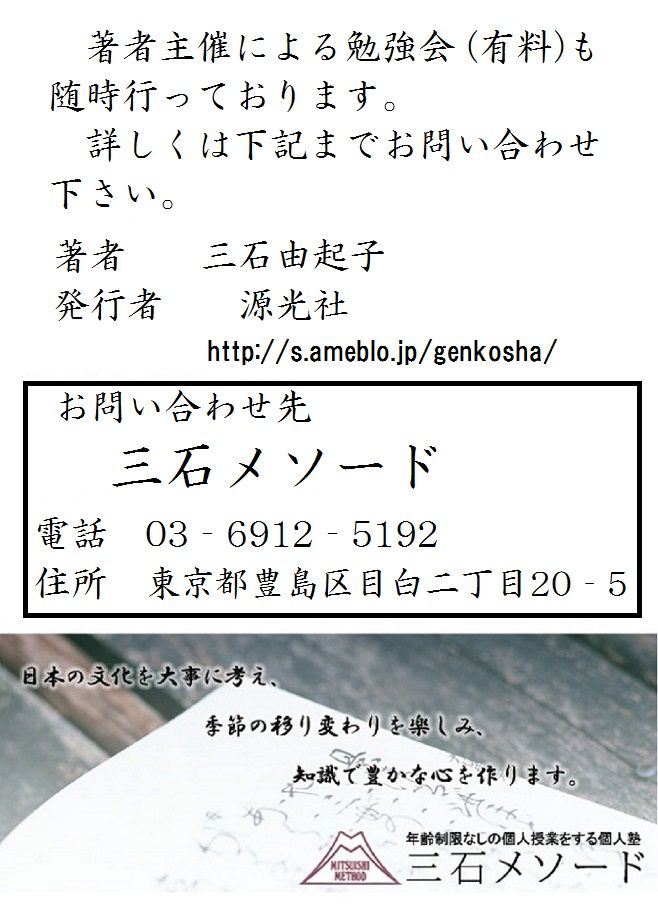

| これで読破！ 平家物語 巻第九 | |
| 三石由起子 | |
| genkosha (2014) | |
完訳 平家物語
百二十句本による
第八十一句から第九十句


第八十一句 うぢがは（宇治川）
宇治川
一
寿永三年正月一日、院の御所は大膳大夫業忠が宿所、六条西洞院なりければ、御所の体しかるべからざる所にて、礼儀おこなふべきにてあらねば、拝礼もなし。院の拝礼なかりければ、殿下の拝礼もおこなはず。
平家は讃岐の国屋島の磯に送り迎へて、年のはじめなれども、元日、元三の儀こそ事よろしからね。先帝ましませば、主上と仰ぎたてまつれども、四方の拝もなし。小朝拝もすたれぬ。氷のためしも奉らず。節会もおこなはれず。鰚も奏せず。吉野の国栖も参らず。「世の乱れたりとはいひしかども、さすが都にてはかくばかりはなかりしものを」と、あはれなり。
青陽の春も来たり、浦吹く風もやはらかに、日影ものどかになりゆけば、平家はただいつとなく氷に閉ぢられたる心地して、寒苦鳥にことならず。東岸西岸の柳遅速をまじへ、南枝北枝の梅開落すでに異にして、花の朝、月の夕べ、詩歌、管絃、鞠、小弓、扇合、絵合、草尽、虫尽、さまざま興ありしことどもを思ひ〔出でて、語り〕出だし、永き日を暮らしかね給ふこそかなしけれ。
寿永三年正月一日、院の御所は大膳大夫業忠の屋敷、六条の西洞院であるので、とても御所の体裁は取れない。各種の儀典を行なえるような場所ではないと判断して拝礼もなし。院の拝礼がないので、当然、それ以下の拝礼も行なわれない。正月は、普通の正月とは異なった侘びしいものであった。都でも、御所を定めた屋島の平家も、同じような有様であった。平家は、讃岐国、屋島の磯に年を送り、年を迎えた始めであったが、元日、三ケ日の儀典など出来る状態ではない。先帝がおられるので、それを主上と仰ぎ奉るが、「四方の拝」も、関白以下の貴族が参賀に伺う「小朝拝」も行われない。また氷室や、氷池の氷の状態を禁中に報告して、その年の豊凶を占う儀式「氷のためし」も、文武百官を招いての宴会「節会」もなかった。九州大宰府から献上される「鰚」という魚の献上もない。「吉野の国栖」と呼ばれる吉野の国栖に住む人々が歌や舞をお目に掛ける慣例の行事もないのである。
「いくら乱れた世であるとはいえ、これが都なら、さすがにこんな状態ではないものを。」
と、思えば憐れなことであった。
ここは都ではなく、屋島なのである。「青陽の春」という言葉がある。海岸を吹く風も柔らかに感じられ、日の光も長閑になって行く季節の筈であった。だが、平家の人々には、いつまでも氷に閉じ込められているように思われて、「寒苦鳥に異ならず」なのである。
寒苦鳥は、仏教で言う雪に閉じ込められた山に住む鳥である。羽毛がなく、寒さが身に浸みるので、明日は巣を作ろう、明日は巣を作ろうと思うが、夜が明けると日向の温かさを楽しんで巣を作るのを忘れる。人間の愚かさを譬えられる鳥である。
「東岸西岸の柳、遅速をまじえ、南枝北枝の梅、開落すでに異にして」
柳の青くなる早さは木によってまちまちで、梅の開花して散る様子も枝々で異なっているが、あれはあれ、これはこれと思いながらも、思い出すのは都での暮らし、宮中の生活であった。花の朝、月の夕べ、詩歌、管絃、鞠、小弓、扇合、絵合、草尽、虫尽、さまざまに興趣のあった日々がついつい昔話になる。春の日永に日を送りかねていた。
二
正月十七日、院の御所より木曾左馬頭義仲を召して、「平家追罰のために、西国へ発向すべき」よし、仰せ下さる。木曾かしこまつて承り、まかりいづ。やがてその日、「西国への門出す」と聞こえしが、「東国よりすでに討手数万騎のぼる」と聞こえしかば、木曾西国へは向かはずして、宇治、瀬田両方へ兵どもを分けてつかはす。木曾、はじめは五万余騎と聞こえしが、みな北国へ落ち下りて、わづかにのこりたる兵ども、「叔父の十郎蔵人行家が河内の国長野の城に籠りたるを討たん」とて、樋口の次郎兼光、六百余騎にて今朝河内へ下りぬ。のこる勢、今井の四郎兼平、七百余騎にて瀬田へ向かふ。仁科、高梨、山田の次郎、五百余騎にて宇治橋へ向かふ。信太の三郎先生義教、三百余騎にて一口をぞふせぎける。東国より攻めのぼる大手の大将軍蒲の御曹司範頼、搦手の大将軍は九郎御曹司義経、むねとの大名三十余人、「都合その勢六万余騎」とぞ聞こえし。
正月十七日、義仲に後白河院の御所からのお召しがあって、
「平家を討つために西国へ出発せよ。」
との御命令であった。
義仲は畏まって承り、退出した。その日の内にすぐ、
「西国へ発った。」
とされたが、義仲は、東国の源氏が既に都に迫っており、その討手は数万騎を数えるとの情報を得たので、急遽西国行きを止め、宇治と瀬田の両方面へ兵達を分けて遣わし、戦の備えをしたのだった。
だが、手元の軍勢は少なかった。始めは五万余騎と言われていた義仲の軍勢は皆、北国へ落ち下り、僅かに残った兵も、河内国、長野城に籠った叔父・十郎蔵人（＝行家）を討伐するために出掛けてしまっていた。行家とは既に離反していて、それを討つために樋口次郎兼光に六百余騎の軍勢を与え、それが今朝、河内へ下ったのである。残り少ない軍勢をあちこちに分ける。今井の四郎兼平に七百余騎を預けて瀬田へ向かわせる。仁科、高梨、山田の次郎が、五百余騎で宇治橋へ向かった。信太の三郎先生義教は、三百余騎で一口を防ぐために出掛けて行った。
義教は、行家の兄で、義仲のもう一人の叔父であった。義仲は軍勢を分けて、宇治川、瀬田川、一口の三か所に防備のための配置をしたのであった。一口は、小倉の池の西の端である。小倉の池は大きく、東は宇治であった。
そこへ東国から総大将として「蒲の御曹司範頼」が攻め上って来た。搦手の総大将は九郎御曹司義経と、大名が三十余人、「都合その勢六万余騎」と報告された。
水原一の解説を引く。
「範頼は、遠江国、浜名の蒲御厨で生まれたので「蒲の冠者」、「蒲の御曹司」と呼ばれる。「御曹司」は「武家の若殿」の意味である。独立せずに父親の館に部屋をもらって住む息子を意味した。後にこの言葉が武家では「大将の息子」の意味で使われる。任官すれば役職が肩書になるが、範頼も義経もまだ肩書がないので、ここでは「御曹司」と呼ばれる。範頼は幼い頃、父・義朝が平治の乱で討ち死にし、藤原範季に養育されて「範」の字をもらっていた。頼朝の挙兵に早くも参加し、弟の義経と共に京都に向かって進撃している。遠江からの参加であった。範頼は正面から瀬田に向かう大手であり、別働隊の搦め手が義経である。搦め手は南から宇治を通って迫っていた。」
三
そのころ、鎌倉殿に「生飡」「摺墨」とて聞こえたる名馬あり。生飡を、蒲の御曹司以下の人々参りて所望申されけれどもかなはず。梶原平三景時参つて、「〔生飡賜はつて、〕今度源太冠者に宇治川渡させ候はばや」と申せば、鎌倉殿、「生飡は、自然の事のあらんずるとき、頼朝物具して乗るべき馬なり。摺墨を」とてぞ賜はりける。
そののち、佐々木の四郎高綱参りて、「上洛つかまつるべき」よし申す。鎌倉殿いであひ対面し給ひて、「わ殿の父秀義は、故左馬頭殿に付きたてまつて、保元・平治両度の合戦に忠をいたす。なかにも平治の合戦のとき、六条河原にて命を惜しまずふるまひき。その奉公を思へば、わ殿までおろかに思はず。申す者どもありつれども賜はらぬぞ。これに乗りて、宇治川の先つかまつれ」とて、生飡を佐々木にぞ賜はりける。佐々木の四郎、この御馬賜はつて、御前をまかり立つとて、あまりのうれしさにうち涙ぐみて申しけるは、「『身は恩のために仕へ、命は義によつて軽し』と申すことの候。この御馬賜はりながら、宇治川の先を人にせられて候ふものならば、いくさにもあひ候ふまじ。ふたたび鎌倉へ向かうて参るまじく候。いくさには子細なくあひたりと聞こしめされ候はば、『宇治川の先においては、しつらんものを』とおぼしめされ候へ」と申して出でぬ。参りあはれたる大名、小名、これを聞いて、「荒涼の申し様かな」とささやぎあへり。
当時、頼朝は、「生飡」「摺墨」という評判の名馬を持っていた。特に優れた名馬である生飡を、出陣に当たってのご挨拶に伺った蒲の御曹司（＝範頼）を始め、色々な人々が所望したが許されなかった。出陣に際して武士が名馬をねだる話はよくあった。武士にとって名馬に乗るか乗らないかは、運命の分かれ目になり、功名を願う人はなおさらである。
梶原平三景時が参って、
「生飡を頂いて、今度、我が息子・源太冠者に宇治川を渡させたい。」
とねだったが、頼朝は、
「生飡は、万が一の時に、この頼朝が武装して乗る馬である。代わりに「摺墨」をやろう。」
と、言って、梶原景時には摺墨を与えたのであった。
梶原は、石橋山の合戦で大庭景親に味方をして頼朝を攻めたが、その後頼朝に下って、忠実に仕えた人物である。『源平盛衰記』には、頼朝が石橋山で破れ、樹の虚に隠れて敵をやり過ごそうとした時、梶原は見つけたものの、黙って見逃がす話がある。頼朝にとっては命の恩人であったが、生飡の所望は退けられたのであった。その後で佐々木の四郎高綱が、上洛の挨拶にやって来た。佐々木兄弟は勇士として評判で、四郎はその四番目である。すると、頼朝は面会して、
「わ殿（＝お前）の父・秀義は、故左馬頭殿（＝頼朝の父・義朝）に仕えて、保元、平治の二度の合戦で忠義を尽くした。中でも平治の合戦では、六条河原で命を惜しまなかった。その奉公を思うと、息子のお前を疎かにはできない。ねだる者があっても与えなかった馬であるが、この生飡に乗って宇治川の先陣を務めよ。」
と、自分の方からこの馬を佐々木に下さったのであった。
ここには佐々木がねだったという記述はない。高綱の父親・秀義は、義朝の父親の養子であり、義朝とは義理の兄弟であった。元は近江国、佐々木の荘の住人である。平治の合戦では、義朝を逃すために六条川原での死闘を演じた。それを頼朝は評価したのであった。佐々木一族は、頼朝の旗揚げから行動を共にし、片腕とも頼む勇士であった。
この名馬を頂いた佐々木四郎の感激は、御前を下がる時に、あまりの嬉しさに涙ぐんだほどであった。
「「身は恩のために仕へ、命は義によって軽し」ということがございます。この馬を頂きました上は、もし、宇治川の先陣を他人に奪われることがあれば、二度と戦には出ませんし、二度と鎌倉には戻りません。もし、頼朝公が、佐々木が今後、戦に出たという噂をお聞きになったら、宇治川の先陣はやってのけたのだとお思い下さい。」
と、生きては帰らぬ覚悟を述べて、先陣の約束をしたのである。
居合わせた大名、小名は、これを聞いて、
「何と乱暴で無茶な約束をすることよ。」
と、囁き合った。
敵に向かって先陣を切るのは、危険もさることながら確率は低い。大勢の武士達がそれを狙い、達成できるのはただ一人の功名であった。約束できることではないのである。
四
おのおの鎌倉を立つて都へ上る。駿河の国浮島が原にて、梶原源太高き所にうちあがり、しばしひかへて多くの馬を見るほどに、幾千万といふ数を知らず。思ひ思ひの鞍置き、色々の鞦かけて、あるいは諸口に引かせ、あるいは乗口に引かせ、引き通し、引き通ししけるなかにも、「景季が〔賜はつたる〕摺墨にまさる馬こそなかりけれ」とうれしく思ひて静かに歩ませゆくところに、「生飡」とおぼしき馬こそ出で来たりたれ。黄覆輪の鞍置き、小総の鞦かけ、白泡噛ませて、さばかり広き浮島が原を狭しと躍らせ、引きてぞ出で来たる。
「生飡やらん」と思ひてうち寄りて見ければ、まことに生飡にてあるあひだ、舎人に会うて、「それは誰が御馬ぞ」と問へば、「佐々木殿の御馬にて候ふ」と申す。「佐々木殿は、三郎殿か、四郎殿か」。「四郎殿」と申す。「四郎殿は通り給ひぬるか、さがつておはするか」。「さがらせ給ひて候」と答ふ。そのとき梶原、「口惜しくも鎌倉殿は、同じ様に召しつかはれし侍を、佐々木に景季をおぼしめしかへられけるものかな。日ごろは、『都へ上りて、木曾殿の御内に四天王と聞こゆる今井、樋口、楯、根の井に組んで死ぬるか、しからずは西国へ向かつて、一人当千と聞こゆる平家の侍といくさして死なん』と思ひつれども、それも詮なし。ここにて佐々木と組んで差しちがへ、よき侍二人死んで鎌倉殿に損とらせたてまつらんずるものを」と〔思ひきり、〕つぶやいて待つところに、佐々木の四郎、何心もなく歩ませて出で来たる。
「押し並べてや組まん。向かうざまにや当て落さん」と思ひけるが、「まづことばをかけて組まん」と思ひ、「いかに、佐々木殿は生飡賜はらせ給ひてげり」と言ひければ、佐々木、「まことや、この人も所望つかまつりたるよし、内々聞きしものを」と、きつと思ひ出でて、ちともさわがず、「さ候へばこそ、この御大事にまかり上るが、宇治川渡すべき馬は持たず、『生飡を申さばや』と思ひつれども、『梶原殿の申されけるにも御許しなし』とうけたまはるあひだ、『まして高綱が申すとも、よも賜はらじ』と存じ、『後日の御勘当はあらばあれ』と思ひ、暁たつとての夜、舎人に心をあはせ、さしも御秘蔵候ふ生飡を盗みすまして上り候ふはいかに」と言ひければ、梶原このことばに腹がゐて、「ねつたう、さらば景季も盗むべかりけるものを」と、どつと笑つて退きにけり。
〔佐々木の四郎が賜はつたる〕生飡は黒栗毛なる馬の〔きはめてたくましきが、〕馬をも人をもあたりをはらつて食ひければ、「生飡」と付けられたり。「八寸の馬」とぞ聞こえし。〔梶原に賜はつたる〕摺墨もおほきにたくましきが、〔まことに〕黒かりければ「摺墨」とぞ申しける。いづれも劣らぬ名馬なり。
おのおのが鎌倉を発って都へ上る。駿河国、浮島が原で、梶原源太は高い所に馬をうち上げて、暫く休んでその他の多くの馬を見ていると、幾千万頭もいるのであった。思い思いの鞍を置いて、彩色した鞦（＝馬の尾の下から後輪に渡す飾り紐）を掛けて、左右の家来に轡を取って引かせている者もあれば、手綱を取って引かせる者もある。それぞれが、大事に馬を引いているようであった。梶原は、
「だが、この景季が頂いた摺墨に優る馬はない。」
と、嬉しく思いながら静かに歩ませていた。
梶原は、自分の馬の見事さに惚れ惚れとしていたのである。だが、そこへ、何と生飡と思われる馬がやって来たのである。黄覆輪の鞍を置いて、小総（＝小さな房の飾り付き）の鞦をかけ、口から白い泡を吐いていきり立っていた。それは、さすがに広いこの浮島が原を狭いとばかりに躍りあがって引き出されて来たのだった。
「本当に生飡だろうか。」
と、寄って見ると、それはまさしく生飡であった。舎人に会って、
「それは誰が御馬ぞ。」
と尋ねると、
「佐々木殿の御馬にて候。」
との答えであった。
「佐々木殿は、三郎殿か、四郎殿か。」
「四郎殿。」
「四郎殿は、もう通られたのか。これからか。」
「これからお通りになります。」
との答えであった。
梶原は大いに憤慨した。
「口惜しくも鎌倉殿（＝頼朝）は、同じ様に召し使う侍を不公平に扱っておられたのだ。佐々木の方を、この景季よりも可愛がっておられるのだ。常日頃、都へ上ったら、義仲の四天王と評判の今井、樋口、楯、根の井と戦って死ぬか、さもなくば西国へ向かって一人当千と評判の平家の侍と戦って死のうと思っていたが、それも甲斐ないことであった。ここで佐々木と戦って刺し違え、価値ある侍二人を死なせて鎌倉殿に損をさせてやろう。」
と、思い切り、つぶやいて待っていると、佐々木の四郎が、何心もなく馬を歩ませて出て来たのであった。
佐々木は、いざという時に乗るために、生飡を舎人に引かせていたのである。待ち伏せして馬を押し並べ、向かいざまに落馬させようか、とも思ったが、先ずは言葉を掛けてから戦おうと思い直した。そこで、
「いかに。佐々木殿は生飡を頂戴したのか。」
と、言葉を掛けると、佐々木は咄嗟に言い訳を考えた。
この梶原が生飡を所望して断られたのを、内々聞き及んでいたからである。それを咄嗟に思い出したので、少しも騒がずに、
「ああ、これですか。この御大事に上るというのに、この高綱には宇治川を渡すほどの馬がないのです。生飡を所望しようかとも思いましたが、梶原殿がお申し出になってもお許しがなかったと聞きましたので、ましてこの高綱が頂ける筈もないと存じ、後日のお咎めは、あらばあれとお叱りを覚悟して、翌朝出発しようという前の夜、厩の番人と示し合せて、さしも御秘蔵のこの生飡を盗み出したのですよ。どうです。」
と、言うのであった。
梶原はこの言葉で気持ちが治まった。
「妬ましや。景季が盗むべきであった。」
と、どっと笑って退いたのである。
武士の社会では、馬を盗む、盗まれるという事態はよくあったらしい。名馬を持つ者は、よくよく用心しないと盗まれた。また、盗まれるほどの名馬を持つことも自慢であった。佐々木は、あくまでも宇治川の先陣を狙って、避けられる争いを避けたのである。
佐々木の四郎が頂いた生飡は、黒栗毛で非常に逞しかった。栗毛とは茶色のことである。それに黒みがかかった色を黒栗毛という。
馬であろうが、人であろうが、傍に寄る物に噛みついたので、「生飡」という名になった。「生きている物に食いつく」という意味である。「八寸の馬」だそうである。
馬の丈は、前足からまっすぐ上に肩の高さまでを測る。四尺が基準であり、ただ「八寸」と言えば「四尺八寸」のことである。
梶原の頂いた摺墨も、大いに逞しい馬であるが、真っ黒なので「摺墨」といった。いづれも劣らぬ名馬なり。
水原一の調べによれば、梶原の馬は薄墨色で「薄墨」という名だったと書いてある本もある。
五
尾張の国より大手、搦手、軍兵二手に分かつ。搦手は伊勢の国へまはる。大手は美濃の国にかかる。大手の大将軍は蒲の御曹司範頼に、あひしたがふ人々、武田の太郎、加賀見の次郎、その子小次郎、一条の次郎、板垣の三郎、逸見の四郎、山名、里見の人々。侍大将には、土肥の次郎、稲毛の三郎、榛谷の四郎、小山田の小四郎、長沼の五郎、結城の七郎、岡部の六野太、猪俣の近平六、熊谷の次郎を先として、都合その勢三万余騎。近江の国野路篠原にぞ着きにける。搦手の大将軍九郎御曹司に、したがふ人々、安田の三郎、大内の太郎、田代の冠者、畠山の庄司次郎、同じく長野の三郎、梶原源太、佐々木の四郎、糟谷の藤太、渋谷の右馬允、平山の武者所季重を先として、都合その勢二万余騎。伊賀の国を経て田原路をうち越え、宇治川のはた、産霊の明神の御前をうち過ぎ、山吹が瀬へぞ向かひける。宇治も、瀬田も、ともに橋をひきたり。
尾張国から軍兵を大手、搦手の二手に分かつ。搦手は伊勢国へ廻る。大手は美濃国にかかる。大手の総大将は、蒲の御曹司範頼に従う人々であった。武田の太郎、加賀見の次郎、その子小次郎、一条の次郎、板垣の三郎、逸見の四郎、山名、里見の一族。侍大将には、土肥の次郎、稲毛の三郎、榛谷の四郎、小山田の小四郎、長沼の五郎、結城の七郎、岡部の六野太、猪俣の近平六、熊谷の次郎を筆頭として、都合その勢三万余騎で近江国、野路篠原に到着した。搦手の総大将は九郎御曹司（＝義経）に従う人々である。安田の三郎、大内の太郎、田代の冠者、畠山の庄司次郎、同じく長野の三郎、梶原源太、佐々木の四郎、糟谷の藤太、渋谷の右馬允、平山の武者所・季重を筆頭として、都合その勢二万余騎であった。こちらは伊賀国を経て田原路を越え、宇治川の辺にある産霊の明神の御前を過ぎて、山吹が瀬へと向かった。宇治も、瀬田も、ともに橋を破壊して渡れぬように準備していた。
勇士たちを加えた軍勢が刻々と都に迫る様子を人名を並べて語る「武者揃え」の文章である。
六
宇治川の向かうの岸には掻楯かき、水の底には乱杭打つて、大綱張り、逆茂木つないで流しかけ、ころは正月二十日あまりのことなれば、比良の高嶺、志賀の山、昔ながらの雪も消え、谷々の氷とけあひて、水かさ、はるかにまさりたり。白波おびたたしく、瀬枕おほきに滝鳴つて、逆巻く水も早かりけり。夜はすでにほのぼのと明けゆけども、川霧深くたちこめて、馬の毛も、鎧の毛もさだかならず。
〔ここに〕大将軍九郎御曹司、川ばたにうち出でて、水の面を見わたし、「人々の心を見ん」とや思はれけん、「いかがせん。淀、一口へやまはるべき。水の落ち足をや待つべき」とのたまへば、武蔵の国の住人畠山庄司次郎重忠、そのときはいまだ二十一になりけるが、すすみ出でて申しけるは、「この川の御沙汰は、鎌倉殿の御前にてよく候ひしぞかし。日ごろ知ろしめされぬ海川の、今にはかに出できても候はばこそ。この川は近江の湖のすゑなれば、待つとも、待つとも、水干まじ。また、橋をば誰かは渡してまゐらすべき。一年治承の合戦に、足利の又太郎忠綱は十八歳にて渡しけるは、鬼神にてはよもあらじ。重忠瀬ぶみつかまつらん」とて、「武蔵の殿ばら、続けや」とて、丹の党をはじめとして五百余騎、轡を並ぶるところに、平等院の艮、橘の小島より、武者こそ二騎、ひつかけ、ひつかけ、出で来たれ。梶原源太、佐々木の四郎なり。
宇治川では、向こう岸に楯を突き並べて塀を作って防壁にする。水の底には大綱を渡して杭を打ち入れ、泳いで渡って来る馬が引っかかる仕掛けを作った。さらに逆茂木 を繋いで川岸に流しかける。逆茂木とは、切り倒した木の裾枝の先を敵に向けて尖らせた細工である。頃は正月二十日。旧暦であるから雪解けの頃であった。比良の高嶺、志賀の山の雪も消え、谷々の氷が溶け出して、白波が高く立ち上がり、瀬枕の滝音が鳴り、逆巻く水の速度も速くなっている。雪解けで水嵩が増しているのである。
夜はほのぼのと明けて行くが、川霧が深く立ち籠めていた。馬の毛も鎧の色もはっきりとは見えない。
合戦の中に風景描写が挟まれるのが、『平家物語』の魅力である。
義経は、川の辺りに立ち、水面を見て、人々の心を知ろうと思ったのか、
「どういたそう。下流の一口に廻ろうか、ここで水嵩が減るのを待とうか。」
と、言うと、武蔵国の住人、畠山庄司次郎重忠という二十一歳の若者が進み出て、
「この宇治川のことは、鎌倉殿の前でももうご存知だったはずです。知らない川が突然出来たわけではありません。この川は近江の湖（＝琵琶湖）の下流ですから、どんなに待っても水量は減りません。また、急いで橋を架けることも出来ません。先年の治承の合戦（＝頼政謀反の治承四年五月の合戦）で、坂東武者の足利又太郎忠綱が、平家方に属して川を渡り、みごとに戦に勝ちましたが、忠綱は当時十八歳でした。まさか、鬼神でもありますまい。同じ人間ですからこの重忠が瀬踏みをいたしましょう。」
と、言った。
川の深さを見極めようとの先陣の宣言であった。この畠山庄司次郎重忠は、後に秩父市の大豪傑になる男である。そうして、言うが早いか、
「武蔵の殿ばら、続けや。」
と、丹の党を始めとして五百余騎で轡を並べたのであった。
武士同士の横の繋がりで作られた集団が党である。俗に「武蔵七党」と呼ばれた有名なものがあった。重忠はその一つである丹の党を使って宇治川に向かった。自分自身は党には属していなかったが、秩父の名家の出身であり、命令一下、党を使うことができた。
そこに、平等院の東北にある橘の小島という中州から、二騎の武者が駆けに駆けて姿を現わしたのであった。
梶原源太と佐々木四郎の劇的な登場であった。
七
人目には何とも見えねども、内々先をあらそふともがらなりければ、まつ先に二騎つれて出でにけり。佐々木に梶原は一段ばかり馳せすすむ。
佐々木「川の先をせられじ」と、「や、殿。梶原殿。この川は、上へも、下へも、早うして、馬の足ぎきすくなし。腹帯の延びて見ゆるは。締め給へ」と言はれて、梶原「げにも」とや思ひけん、つ立ちあがりて、左右の鎧を踏みすかし、手綱を馬の小髪に捨て、腹帯を解いて締むるあひだに、佐々木、つと馳せぬけて、川へざつとうち入れたり。梶原これを見て「たばかられまじきものを」とて、同じくうち入れたり。
「水の底には大綱張りたるらんぞ。馬も乗りかけ、おし流されて不覚すな。佐々木殿」とて渡しけるが、川の中まではいづれ劣らざりけれども、いかがしたりけん、梶原が馬は篦撓形におし流さる。佐々木は川の案内者、そのうへ生飡といふ世一の馬には乗つたりけり、大綱どもの馬の足にかかりけるをば、帯いたる「面影」といふ太刀を抜き、ふつふつとうち切り、うち切り、宇治川早しといへども、一文字にざつと渡して、思ふ所にうちあぐる。
鎧踏んばり、つ立ちあがり、「宇多の天皇に八代の後胤、佐々木の三郎秀義が四男、佐々木の四郎高綱。宇治川の先陣」と名のつて、をめいてかく。梶原は、はるかの下よりうちあぐる。
畠山、五百余騎にてうち入れて渡す。向かひの岸より仁科、高梨、山田の次郎、さしつめ、ひきつめ、散々に射る。畠山、馬の額を篦深に射させて、馬は川中より流れぬ。弓杖ついており立つたり。岩波おびたたしく兜の手先におしかけけれども、事ともせず。
向かひの岸に渡りついて、あがらんとするところに、うしろより物こそひかへたれ。ふりまはりて見ければ、鎧武者がとりついたり。畠山の烏帽子子に、大串の次郎なり。「誰そ」と問へば、「重親」と名のる。「かかることこそ候へ。馬は弱る、おし流されて候へば、力およばずとりつきまゐらせ候」と申せば、「いつも、わ殿ばらは、重忠にこそ助けられんずれ。あやまちすな」と言ふままに、さし越えてむずとつかみ、岸の上にぞ投げあげたる。投げられながら起き直り、「武蔵の国の住人、大串の次郎重親。宇治川徒歩わたりの先陣」とぞ名のりける。敵も味方もこれを聞き、一度にどつとぞ笑ひける。
人目には分からなかったが、それぞれが内心、先陣を争っていたので、真っ先に二騎が並んで出たのであった。梶原が一段ほど佐々木の先を駆けていた。
「一段」には色々な説があってはっきりしないが、普通には約六間（＝１１メートル）である。別の説では九尺（＝２．７メートル）でもある。
佐々木は、川を先に渡られまいと思ったのか、
「や、殿。梶原殿。この川は、上流も下流も流れが速く、馬の足場が良い所は少ないぞ。腹帯（＝馬の腹に鞍を留めておく帯）が緩んで見えますぞ。お締めなされ。」
と、声をかけた。言われた梶原は、いかにもそうだと、「つ立ちあがりて、左右の鐙を踏みすかし」足を鐙に入れて踏ん張って立ち、手綱を馬の小髪（＝たてがみの一部）に投げかけて、腹帯を解き、もう一度締め直す。その間に佐々木は駆け抜けて川へ打ち入れた。梶原は、その手は食わぬと続いて打ち入れた。今度は梶原が後ろから声をかける。
「水の底にはきっと大綱が張ってあるぞ。馬を乗りかけて押し流されるな、佐々木殿。」
と、川の中を走った。
これは、親切な注意でもあるが、佐々木にブレーキをかけたのだろう。
こうして川の中ほどまでは、どちらが先になるでもなく馬を泳がせて行ったのだが、どうしたことか、梶原の馬は、篦撓形（＝斜め方向）に押し流されて行ったのである。
「篦撓」は、木製の矢の曲がりを直す道具である。斜めの溝を彫り、その溝に矢を入れて矯正する。
佐々木は川の「案内者（＝詳しい）」である。近江の佐々木の荘の出身で、東国の武士・梶原に比べ、関西の川をよく知っていた。その上に「生飡」という世一（＝この世で一番）の名馬に乗っている。馬の足にかかる大綱を「面影」という太刀を抜いてぶつぶつと切って川を進んで行った。
そうして一文字にざっと渡って目指した場所に打ち上がった。鐙を踏ん張って、ついと立ち上がると名乗りを上げた。
「宇多天皇の八代目の子孫、佐々木三郎秀義の四男、佐々木の四郎高綱。宇治川の先陣。」
と先陣を宣言すると、大声をあげて敵に向かって行った。梶原は、はるか下流から打ち上がった。この二人に続いて畠山が五百余騎渡す。
畠山が渡るのを見て、向かいの木曽勢、仁科、高梨、山田の次郎が、さしつめ、引きつめ、散々に矢を射かけた。畠山は馬の額を箆深（＝斜めに深く）に射られて馬を流された。やむを得ず弓を杖について、川の中で馬を下りる。岩波が兜の手先にかぶさっても、ものともしない。
「兜の手先」は、兜の廂の横にある「吹き返し」である。頭の後ろを覆う錣が、顔の横で左右に折り返す箇所である。
向かいの岸に着いて上がろうとすると後ろから何かに引っ張られた。振り返ると、鎧武者がしがみついているのであった。それは、畠山の烏帽子子で、大串次郎という男であった。
「誰か。」
と、訊くと、
「重親。」
と、名乗る。
「こんなことがあるのですね。馬は弱って押し流され、仕方なく取りつきました。」
と、言うのである。
畠山はこの時、まだ二十一歳であったが、勇士の評判が高かったので頼まれて烏帽子親になっていたのだろう。
「お前達は、いつでもこの重忠に助けを求めるのだな。怪我をするなよ。」
と、重親を捕まえると岸の上に投げ上げた。
投げ上げられた重親は、起き直ると、
「武蔵国の住人、大串次郎重親。宇治川徒歩渡りの先陣。」
と、名乗った。
敵も味方も一度にどっと笑った。先陣は一人である。
水原一の解説を引く。
「佐々木の太刀「面影」の名は、他の本にはあまり見えない。だが、これは佐々木の家に伝わる名剣であり、史実であろう。佐々木は宇多源氏である。宇多天皇の子孫が源の姓を頂いた。宇治川突破は、戦場の描写でありながら、重親のようなユーモラスな話も残っている。流されながらも重忠にしがみつき、岸に投げ上げられて減らず口のような名乗りをあげる。それは坂東武者の気概でもあったろう。」
八
九郎御曹司をはじめたてまつり、二万五千余騎、うち入れ、うち入れ、渡しけり。馬、人にせかれて、さばかり早き宇治川も下は瀬切れて浅かりければ、雑人ども、馬の下手に、とりつき、とりつき、渡しけり。佐々木の三郎、梶原平次、渋谷の右馬允、これ三人は馬を捨てて芥々をはき、弓杖をつき、橋の行桁をこそ渡りけれ。そののち畠山、乗替に乗りてうちあぐる。魚綾の直垂に緋縅の鎧着て、連銭葦毛なる馬に黄覆輪の鞍置いて乗つたる敵の、まつ先にすすみ出でて、「木曾殿の家の子に、長瀬判官代重綱」とこそ名のりけれ。畠山、「まづ軍神の血祭りせん」とて、かけ並べ、むずと取つて引き落し、首ねぢ切りて、本田の次郎が鞍のしほでにつけさせけり。
これをはじめとして、木曾殿の方より宇治橋固めたる勢ども、しばしささへてふせげども、東国の大勢がみな渡して攻めければ、散散に駆けなされ、木幡山、伏見をさしてぞ落ち行きける。瀬田をば稲毛の三郎重成がはかりごとにて、田上の供御の瀬をこそ渡しけれ。
いくさ破れにければ、鎌倉殿へ飛脚をもつて合戦の次第を注進申されけるに、鎌倉殿、まづ御使に、「佐々木はいかに」と御たづねありければ、「宇治川のまつ先」と申す。日記をひらいて御覧ずれば、「宇治川の先陣、佐々木の四郎。二陣、梶原源太」とこそ書かれけれ。
さて、いよいよ義経を始めとする二万五千余騎の一軍が、揃って川を打ち渡る。その馬や人に宇治川の水が堰き止められて、下流は水嵩が減って浅くなった。徒歩の雑兵達は、馬の下手に廻ってそこを渡る。佐々木の三郎、梶原平次、渋谷の右馬允の三人は、馬を捨てて芥々（＝藁草履）を履き、弓を杖の代わりに突きながら橋の行桁を渡った。外された橋の桁を渡ったのである。
それから畠山は、乗り換えの馬に乗って打ちあげた。そこに敵が戦いを挑んで来る。魚綾（＝波に魚の模様）の直垂に緋縅の鎧を着て、連銭葦毛の馬に黄覆輪の鞍を置いて乗った敵であった。それが真っ先に進み出ると、
「木曾殿の家の子。長瀬判官代・重綱。」
と、名のった。畠山は、
「軍神の血祭りにせん。」
と、馬を並べて相手の頭を捕まえ、いきなり首を折って殺して首を取ると、本田の次郎の馬の鞍にぶら下げさせた。
宇治橋を固めていた義仲軍の勢が暫くは防いだが、畠山を皮切りにして東国の大勢が皆、渡河して攻めたので、散々に打ち破られ、木幡山、伏見を指して京都へと逃れて行った。大手軍の瀬田では、稲毛の三郎重成の作戦で岩場の渡りやすい場所を選び、田上の供御の瀬を渡る。
鎌倉へ勝ち戦の飛脚を走らせると、頼朝はまず使いに、
「佐々木はいかに。」
と、訊いた。
「宇治川の真っ先。」
と、申し上げる。
飛脚の書付にも「宇治川の先陣、佐々木の四郎。二陣、梶原源太」と書かれていた。
水原一の解説を引く。
「この先陣争いは、絵にもよく描かれている。高綱が先を行く梶原に声をかけ、馬の腹帯を締め直させて抜き去るのは、ずるいやり方だと批判されたり、また当然だと弁護されたり、論議が繰り返されている。しかし、敵前渡河の先陣は、直接、討ち死にに繋がる働きである。ずるいと言われても、生き延びるためのずるさではない。死を覚悟して先陣を遂げるための策略なのである。しかも、先陣を遂げなければ生きて鎌倉へは戻らないと、頼朝の御前で約束してのことであった。その心情を思えば、弁護せずにはいられない。さらにまた、このような方法は、当時の武士の間では日常的なものだった。特に源氏の武士は、様々な策略を用いて功名を遂げるのが当然とされていた。
一方で、この佐々木高綱の先陣は、事実ではないという論もあった。承久の乱を描く軍記物語『承久記』に、鎌倉の軍勢が先陣を争う話がある。尼将軍・政子からもらった馬で先陣を取るという大変に似た話であり、そこからヒントを得た創作ではないかと言われた。だが、京都の大原三千院にある佐々木家の文書によれば、高綱の先陣は事実である。そこには名剣「面影」の話もあって、これを創作だと疑う説は消えた。」
第八十二句 よしつねゐんざん（義経院参）
義経院参
一
さるほどに、木曾左馬頭義仲は、「宇治、瀬田敗れぬ」と聞きしかば、「最後のいとま申さん」とて、百騎ばかりにて院の御所六条殿へ馳せ参る。「あはや、木曾が参り候ふぞや。いかなる悪行かつかまつらんずらん」とて、君も、臣も、おそれわななき給ふところに、「東国の兵ども、七条河原までうち入りたる」よし告げたりければ、木曾門の前よりとつて返す。御所にはやがて門をさしけり。木曾は「最愛の女に名残を惜しまん」とて、六条万里の小路なる所にうち入りて、しばしは出でもやらざりけり。
新参したりける越後の中太家光といふ者あり。これを見て、「あれほど敵の攻め近づいて候ふに、かくては犬死せさせ給ひなん。いそぎ出でさせ給はで」と申しけれども、なほも出でやらざりければ、越後の中太、「世は、かうごさんなれ。さ候はば、家光は死出の山にて待ちまゐらせん」とて刀を抜き、鎧の上帯切つておしのけ、腹掻き切つてぞ死にける。
木曾殿これを見給ひて、「これはわれをすすむる自害にこそ」とて、〔やがて〕うち出でられけれ。上野の国の住人、那波の太郎広澄を先として、百五十騎には過ぎざりけり。六条河原へうち出でて見れば、東国の武者とおぼえて、三十騎ばかり出で来る。その中に二騎進んだり。一騎は塩屋の五郎惟広、一騎は勅使河原の五三郎有直なり。
塩屋が申しけるは、「後陣の勢をや待つべき」。勅使河原申す様、「一陣破れぬれば、残党まつたからず。ただ寄せよや」とて、をめいてかかる。「われ先に」と乱れ入る。あとより後陣続いたり。木曾殿これを見給ひて、いまを最後のことなれば、百四五十騎轡を並べて、大勢の中に駆け入る。
木曾左馬頭義仲は、宇治と瀬田が敗れたと聞いて、最後のご挨拶を申し上げようと、百騎ほどで院の御所、六条殿へ馳せ参じた。
「あはや、木曾が参り候うぞや。どんな悪行の及ぶことか。」
と、法皇も臣下も恐れ戦慄いているところに、東国の武士達が七条河原にまで入って来たとの報告で、義仲は門の前からとって返した。御所は直ちに門を閉ざす。
義仲は、六条万里の小路に入り、最愛の女との名残りを惜しむために、暫くは出ても来なかった。新参者の越後の中太家光はこれを見て、
「あれほど敵が攻め近づいているのに、このままでは犬死させることになります。急いでおいで下さいませ。」
と、申し上げたが、それでもまた出て来ないので、中太は、
「世は、このようなことか。そうであれば、この家光は、死出の山でお待ち申し上げよう。」
と、刀を抜いて鎧の上帯を切って押し退け、腹をかき切って死んだのであった。義仲はこれを見て、
「これは、義仲を奮起させるための自害に違いない。」
と、すぐに出て来た。
上野国の住人、那波の太郎広澄を先頭に、たった百五十騎であった。六条河原に出て見れば、東国の武者が三十騎ばかりで出て来たが、その中の二騎が進んで来る。一騎は塩屋の五郎惟広であり、もう一騎は勅使河原の五三郎有直であった。塩屋が、
「後陣の軍勢を待とう。」
と言ったが、勅使河原は、
「先陣が破れれば、残りの軍勢は支えきれないものだ。ただ寄せよや。」
と、この機を逃さずに攻めかかれと、声を出す。
「われ先に。」
と、乱れ入ると、後陣が続いた。
義仲はそれを見て、今を最後と覚悟を決めた。百四、五十騎の轡を並べて、敵の大勢の中に切りかかる。
二
東国の兵ども、「われ討ちとらん」と面々にはやりあへり。両方火出づるほどこそ戦ひけれ。
九郎義経、兵どもに矢おもてふせがせ、「義経は院の御所のおぼつかなきに、守護したてまつらん」とて、まづわが身ともに、ひた兜五六騎、六条殿に馳せ参る。
大膳大夫業忠、六条の東の築垣にのぼつて、わななく、わななく、世間をうかがひ見るところに、東の方より武者こそ五六騎、のけ兜に戦ひなつて、射向の袖を吹きなびかさせ、白旗ざつとさしあげ馳せ参る。「あはや、木曾が参り候ふぞや。このたびぞ世は失せはてん」と申しければ、法皇をはじめまゐらせて、公卿、殿上人もことに騒がせ給ふ。業忠よくよく見て申しけるは、「笠じるし変つて見え候。木曾にては候はず。今日うち入りたる東国の兵とおぼえ候」と申しもはてねば、九郎義経、門の前に馳せ寄つて、馬より飛んで下り、「『鎌倉前の右兵衛佐頼朝が舎弟、九郎義経、参りて候』と奏せさせ給へ」と申されければ、大膳大夫あまりのうれしさに、築垣よりいそぎ飛び下りけるほどに、落ちて腰をつき損じたりけれども、痛さはうれしさにまぎれておぼえず。はふはふ参りて奏し申せば、やがて門をひらき入れられけり。大将軍ともに武士は六人なり。
東国の兵どもは、
「我、討ちとらん。」
と、面々に逸っている。
両軍が火の出るほど戦った。九郎義経は、兵どもに矢面を防がせて、
「義経は院の御所が心配である。守護申し上げる。」
と、自分と武装した五、六騎で、六条殿に馳せ参じた。
大膳大夫・業忠は、六条の東の築垣に上り、戦慄く、戦慄く、状況を窺うと、東から五、六騎の武者が、白旗をざっと上げて馳せて来る。のけ兜で、鎧の左の袖を吹き靡かせていた。
のけ兜は、目深く被った兜の緒が緩んで、あみだ被りになっている様であり、戦闘の激しさを物語るものである。
「あはや、義仲が参り候ふぞや。この世の終わりだ。」
と言うので、法皇を始め、公卿も、殿上人も大いに驚き騒ぐ。
だが、業忠はよくよく見て、
「笠印が違いますから木曾ではありません。今日、入ったという東国の兵のようです。」
と、言い終わらぬうちに、九郎義経が門の前に馳せ寄って、馬から飛んで下りた。
「鎌倉、前の右兵衛佐・頼朝の舎弟、九郎義経が参りました、とお耳に入れて下さい。」
と、申し上げたので、大膳大夫はあまりの嬉しさに築垣から飛び下りて、そのまま落ちて腰を打った。
だが、嬉しさに紛れて痛さも分からぬほどであった。ほうほうの体で参上してお耳にいれると、直ちに門が開かれたのである。総大将を入れて六人の武士達であった。
三
九郎義経は赤地の錦の直垂に紫裾濃の鎧着て、黄金づくりの太刀を帯き、切斑の矢負ひ、塗籠籐の弓の鳥打を、紙の広さ一寸ばかりに切つて、左巻きにぞ巻いたりける。これぞ今日の大将軍のしるしとは見えたりける。のこる五人は、鎧は色々に見えたりけれども、つらたましひ、骨柄、いづれも劣らざりけり。
法皇、中門の連子より叡覧あつて、「ゆゆしげなる者どもかな。みな名のり申せ」と仰せければ、まづ大将軍、「九郎義経」、次には、「畠山庄司次郎重能が子に、畠山庄司次郎平の重忠」、「同じ氏、河越の太郎重頼が子に、河越の小太郎重房」、「渋谷の三郎庄司重国が子に、渋谷の右馬允重助」、「佐々木の三郎秀義が四男、佐々木の四郎高綱」、「梶原平三景時が嫡子、梶原源太景季」とぞ申しける。
みな庭上にかしこまつてぞ候ひける。大膳大夫業忠、大床に候ひて、合戦の次第をたづねらる。義経申されけるは、「木曾が悪行のこと、頼朝うけたまはりて大きにおどろき、範頼、義経二人の舎弟を参らせて候。兄にて候ふ範頼は瀬田より参り候ふが、いまだ見えず候。義経は宇治の手を追ひ落して、まづこの御所のおぼつかなさに、馳せ参りて候。木曾は河原を上りに落ちゆき候ふを、兵どもに追つかけさせ候ひつれば、いまはさだめて討ちとり候らん」と、いと事もなげにぞ申したる。
君なのめならず御感ありて、「木曾が悪党なんど、なほ参りて狼藉つかまつり候ふべし。義経は候ひて、この御所よくよく守護したてまつれ」と仰せ下されければ、かしこまつて承り、門を固めて待つところに、ほどもなく一二千騎馳せ参りて、六条殿四面にうちかこみ、守護したてまつれば、人々も心静かに、君も御安堵の御心いできさせ給へり。
義経の武装は「赤地の錦の直垂」赤い布に金銀の刺繍をした直垂で、その上に紫裾濃（＝鎧の縅の上の方が薄く、下の方がだんだんに濃くなる紫色）の鎧を着ていた。金で飾った太刀を持ち、矢羽の斑紋がはっきりした矢を背負い、塗籠籐の弓の鳥打に、一寸幅の紙を左巻きに巻き付けていた。
「塗籠籐の弓」は、弓に籐づるを巻き、その上から漆を塗った真っ黒な弓である。「鳥打」は、弓の湾曲部分で、射落とした鳥が逃げようとした時、打ち伏せる部分である。義経の武装姿として、絵に描かれ、人形にもなる有名ないでたちであった。
その鳥打に巻き付けた紙こそは、本日の大将の印であると思われた。残りの五人の武士達は、色とりどりの鎧を着ていたが、面魂、骨柄は、いづれも劣らぬ強兵であった。法皇は、中門の連子から御覧になって、
「あっぱれな者どもかな。皆、名のり申せ。」
と仰せられたので、まず総大将が、
「九郎義経。」
と、名のり、次には、
「畠山庄司次郎重能の子、畠山庄司次郎重忠」
「河越の太郎重頼の子、河越の小太郎重房」
「渋谷の三郎庄司重国の子、渋谷の右馬允重助」
「佐々木の三郎秀義の四男、佐々木の四郎高綱」
「梶原平三景時の嫡子、梶原源太景季」
と、お答え申し上げた。
これらの武士達は皆、法皇の庭に畏まって座る。大膳太夫・業忠が合戦の次第を尋ねた。義経がお答えして、
「木曾の悪行を頼朝が承って大いに驚き、範頼、義経の二人の舎弟を参じさせました。兄の範頼は瀬田から参りましたが、まだ到着しません。この義経は宇治の軍勢を追い落として、まずはこの御所が気がかりで馳せ参じました。木曾は河原を上って落ちて行きましたが、兵どもに追わせていますから、今頃はきっと討ち取っておりましょう。」
と、事もなげに申し上げた。
非常に力強く、自信を持ってお答えしたので、法皇は一方ならず感激されて、
「木曾の悪党などが、参って狼藉を働くといけない。義経はここで、この御所をよくよく守護せよ。」
と、おっしゃる。
義経は畏まって承り、門を警護して待つところに、ほどなく三千騎が馳せ参じ、六条殿四面を囲んで守護申し上げる。
こうして都は安泰となり、法皇もご安心なさったのであった。
第八十三句 かねひら（兼平）
兼平
一
さるほどに、木曾は「もしもの事あらば、院をとりたてまつり、西国の方へ御幸なしたてまつり、平家とひとつにならん」とて、力者二十余人用意しておいたりけれども、「院の御所には、義経の参り給ひて守護したてまつる」と聞こえしかば、「力およばず」とて、数万の大勢の中へ駆け入り、討たれなんずること度々におよぶといへども、駆けやぶり、駆けやぶり、通りけり。
「かくあるべしと知りたりせば、今井を瀬田へやらざらましものを。幼少より『死なば一所にて、いかにもならむ』とちぎりしに、所々にて死なんことこそ本意なけれ。今井が行くへを見ばや」とて、河原を上りに駆けけるに、大勢追つかくれば、とつて返し、とつて返し、六条河原と三条河原の間、無勢にて多勢を五六度まで追つかへす。賀茂川ざつとうち渡し、粟田口、松坂にもかかりけり。去年信濃を出でしときには、五万余騎と聞こえしかど、今日四の宮河原を過ぐるには、主従七騎になりにけり。まして中有の旅の空、思ひやるこそあはれなれ。
義仲は、もし戦に敗れたら、法皇を捕えて西国に逃げ、平家と一緒になろうと算段して、力者二十余人を用意した。「力者」とは輿を担ぐ力の強い中間のことである。だが、義経に院の御所を固められてしまったので、仕方なく敵の中に駆け入ると、何度も戦っては駆け抜けながら、後悔し続けていたのだった。
「こうなるのなら、今井兼平を瀬田へなど差し向けなかったものを。幼い時から、死ぬなら同じ所で同じ時にと約束していたのだ。別々に死ぬことになるのは残念だ。今井がどこにいるか知りたい。」
と、河原を上って駆け戦うが、大勢に追いかけられて、行っては戻り、行っては戻りしながら、六条河原と三条河原の間で戦い続けた。僅かな勢で多勢を五、六度までも追い返す。都の中で戦い、賀茂川をざっと渡って、さらに粟田口、松坂で戦って、近江へ出ようとしていた。
去年、信濃国を出た時には、五万余騎と言われたが、今日、この四の宮河原を越える頃には、主従七騎になっていた。「まして中有の旅の空、思ひやるこそあはれなれ」まして、ただ一人で赴く死出の旅路を思えば感無量であった。
人が死んでから四十九日の間を「中有」という。あの世での居場所が決まらない期間のことである。現世の敗戦でさえも、こんなにも心細い。まして、ただ一人の死出の旅路であった。
こうした言葉が差し挟まれて、『平家物語』の合戦談が、仏教を広める説法に使われていたらしい痕跡が覗かれる。
二
木曾殿は、信濃より巴、款冬とて二人の美女を具せられたり。款冬は労ることありて、都にとどまりぬ。巴は七騎がなかまでも討たれざりけり。そのころ齢二十三なり。色白く髪長く、容顔まことに美麗なり。されども大力の強弓精兵、究竟の荒馬乗りの悪所おとし。いくさといへば札よき鎧着て、大太刀に強弓持ち、一方の大将にさし向けられけるに、度々の高名肩を並ぶる人ぞなき。
「木曾は長坂を経て、丹波路へおもむく」と言ふ人もあり、また「龍華越にかかつて北国へ」とも聞こえけり。されども、今井が行方のおぼつかなさに、瀬田の方へぞ落ち行きける。
今井も主の行くへのゆかしさに、旗をひん巻き、五十騎ばかりにて都へとつて返すほどに、大津の打出浜にて、木曾殿に逢ひたてまつる。一町ばかりより、たがひに「それ」と目をかけて、駒を早めて寄せ合はせたり。
木曾殿、今井が馬にうち並べ、兼平が手を取りて、「いかに今井殿、義仲は、今日六条河原にていかにもなるべかりしかども、幼少より『一所にていかにもならん』とちぎりしことが思はれて、かひなき命のがれ、これまで来れるなり」とのたまへば、「〔さん候。〕兼平も、瀬田にていかにもなるべう候ひつるが、君の御行くへのおぼつかなさに、敵の中に取り籠められて候ひしを、うち破りてこれまで参りて候」と申す。木曾殿、「ちぎりはいまだ朽ちせざりけり。義仲が勢は敵におしへだてられ、山林に馳せ入りぬ。さだめてこの辺にもあるらん。旗さし上げみよ」とのたまへば、今井持たせたる旗をざつとさし上げたれば、案のごとく、これを見て、京より落つる勢ともなく、瀬田より落つる者ともなく、三百余騎ぞ馳せ集まる。
木曾殿大きによろこんで、「この勢あらば、などか最後のいくさせざるべき。この先にしぐらうで見ゆるは、誰が手とか聞く」。「甲斐の一条の次郎殿とこそうけたまはり候へ」。「勢はいかほどあるやらん」。「六千余騎と聞こえて候」。「さらばよき敵ごさんなれ。同じくは、大勢の中にてこそ討死もせめ」とて、まつ先にこそ進まれけれ。木曾は赤地の錦の直垂に、「薄金」とて唐綾縅の鎧着て、いかものづくりの太刀を帯き、石打の矢のその日のいくさに射のこしたるを首高に負ひなし、滋籐の弓のまつ中取つて、聞こゆる木曾の鬼葦毛に、沃懸地の鞍置いてぞ乗つたりける。大音あげて名のりけり。
「昔は聞きけんものを、木曾の冠者。今は見るらん、左馬頭兼伊予の前司朝日将軍源の義仲ぞや。一条の次郎とこそ聞け。討ちとり、勧賞かうむれ。なんぢがためにはよき敵ぞ」とて、破って入る。
一条の次郎、「ただいま名のるは大将軍ぞ。もらすな。討ちとれや」とて大勢の中にひと揉み揉うで戦ふ。
木曾三百余騎にて、縦ざま、横ざま、蜘蛛手、十文字に駆けやぶり、六千余騎があなたへ〔ざつと〕駆け出でたれば、百騎ばかりになりにけり。土肥の次郎、一千余騎にてささへたり。そこを駆けやぶりて出でたれば、五十騎ばかりになりにけり。稲毛、榛谷五百余騎。そこを過ぐれば、小山、細道、森、結城、小沢。ここかしこに二三百騎ひかへたるを、駆けやぶり、駆けやぶり行くほどに、主従五騎にぞなりにける。五騎がうちまで、巴は討たれざりけり。
木曾のたまひけるは、「義仲は、ただいま討死せんずるにてあるぞ。なんぢは女なれば、一所にて死なんことも悪しかりなん。『木曾殿こそ、最後のいくさに女をつれて討死せさせたり』なんど言はれんことも口惜しかるべし。これよりいづちへも落ちゆき、義仲が後世をとぶらひなんや」とのたまへども、落ちゆかず。あまりにいさめ給へば、「あつぱれ、よからむ敵もがな。最後のいくさして見せたてまつらん」と見まはすところに、武蔵の国の住人に恩田の八郎師重、聞こふる大力の剛の者、三十騎ばかりにて出で来たる。巴その中へ駆け入り、恩田に押し並べて、むずと取つて引き落し、鞍の前輪に押しつけて、首ねぢ切つて捨ててけり。そのまま物具脱ぎ捨てて、泣く泣くいとま申して、東国の方へぞ落ち行きける。
手塚の別当自害しつ。手塚の太郎は討死す。
義仲は、信濃国から巴と山吹という二人の美女を連れて来ていた。山吹は、病になって都に留まった。巴は七騎になるまで討たれずにいた。
水原一の解説を引く。
「山吹は病気で都に残されたと断って、これ以後は巴の話が続く。山吹は名前だけの登場である。言わば欠席届だけが残された大変不思議な記述なのである。語り物ではよく、二人が一組になって語られ、役割を負うのは、結局そのうちの一人だけということが、しばしばある。文学的に言えば奇妙な現象である。例えば二十六句の「有王島下り」には、有王と亀王がいて、有王の話である。ここでも亀王は名前だけの登場であった。また、五十三句の「葵の女御」では、葵と宿禰の二人の女性がいて、葵の話だけを展開させている。また、これ以後に登場する滝口入道の愛人となった横笛という女性の話には、横笛ともう一人の女性が出て来る。二人を並べて紹介しながら、一人を無駄にする。そういう不思議なことが語り物にはある。語り物の生態と言ってもいい。」
さて、巴である。年齢は当時二十二、三歳。色白く、髪長く、当時の美人の条件を備えていた。けれども大力で強い弓を引く勇士であり、「荒馬乗りの悪所おとし」険路を馬で駆け下りる馬術の名手であった。合戦の時には、「札よき鎧」を着ている。
鎧は、革の板札や鉄の板札を何枚も綴り合わせた物である。強い鉄札を何枚も綴った鎧が「札よき鎧」である。重みも相当で、かなりの体力を必要とする。
その上、大太刀と強い弓を持って、一方の大将として差し向けられ、度々の合戦で立てる功名も肩を並べる者とてなかった。
水原一の解説を引く。
「美人で勇士で大将である、は史実としては疑問が残る。これは多分に語り物の中で成長した女将軍の姿だったろう。巴の実像は義仲の陣中に仕えてた召使いだったと考えられる。また、「美女」も女の階級、職の名前であった。武家では、給仕、あるいは炊事に当たる召使女を「美女」という。巴は、そうした女であったが、いつの間にか脚色され、義仲の愛人であった、奥方であった、清水の冠者・義高の生みの母親であったとエスカレートしていく。そうして女武者・巴の姿が出来上がって行った。」
「義仲は長坂を経て、丹波路へ赴いた。」
と言う人もあれば、
「龍華越にかかって北国へ。」
とも聞こえて来た。
だが、実際は、今井の行方を心配して、瀬田の方へと逃げ延びていたのだった。今井もまた主の行方を知りたくて、旗を巻いて五十騎ばかりで都へとって返すところであったが、大津の打出浜で義仲と会う事ができた。一町ばかり離れた所から互いに、
「それ。」
と目をかけて、駒を早めて寄せ合った。
義仲は、今井の馬と並ぶと、兼平の手を取って、
「いかに今井殿、義仲は、今日六条河原で死ぬはずだったが、死ぬなら一緒にと誓った幼少からの約束を思い出し、甲斐もない命を繋いでここまで来たのだぞ。」
と、言うと、
「さん候。兼平も、瀬田で死ぬはずでしたが、君（＝義仲）の御行方が心配で、敵に囲まれていたのをうち破ってここまで参りました。」
と、申し上げた。
今井四郎兼平は中原兼遠の子であり、中原兼遠は義仲の育ての親である。今井は義仲の乳母子で、子供の時分から一緒に育った。家来であると同時に兄弟でもある。一人の女性を共通の母親として、死ぬ時は一緒にと誓っていた。義仲は今井四郎を求める。今井もまた、義仲を求める。ついに乱軍の中、同じ思いの主従が出会う。奇跡が実現したのだった。
これで心置きなく最後の合戦ができると、義仲は元気づいた。
「契りはいまだ朽ちてはいなかった。義仲の軍勢は敵に隔てられて山林に馳せ入った。きっとこの辺りにもいるであろう。旗を差し上げてみよ。」
との言葉に、今井が家来に持たせた旗をざっと差し上げると、案の定、これを見て京から落ちた軍勢ともなく、瀬田から落ちて来た者ともなく、三百余騎が馳せ集まった。
旗をざっと差し上げると、散り散りになっていた軍勢がまた集まるという離合集散の構図も思わず光景が浮かんで感激を呼ぶ見事な彩りである。義仲は大いに喜んで、
「この勢があれば、最後の戦ができる。この先に密集しているのは誰の手の者かわかるか。」
「甲斐の一条の次郎殿と承知しております。」
「勢はどれほどか。」
「六千余騎だそうでございます。」
「さらば良き敵ごさんなれ。同じことなら大勢の中で討ち死にしよう。」
と、真っ先に進んで行った。
いかに軍勢をかき集めても、義仲は僅かに三百余騎であった。それが六千余騎の大勢を見て、「さらば良き敵ござんなれ」と言うのは、ただの空元気ではない。敵の一条次郎は、武田源氏の代表者である。武田源氏は、義仲の宿敵であった。その敵を見て、義仲は死に場所を得たと思ったのである。
義仲は、赤地の錦の直垂に、「薄金」という唐綾縅の鎧を着て、いかものづくりの太刀を帯び、その日の戦に射残した石打の矢を首高に負い、滋籐の弓の真ん中を掴むと、評判の名馬・鬼葦毛に沃懸地（＝蒔絵）の鞍を置いて乗る。そうして大音声で名のった。
「噂で聞いた木曽の冠者を、今はその目で見ていよう。左馬頭兼伊予の前司、朝日将軍・源の義仲ぞや。お前は一条の次郎と聞く。討ち取って褒美を貰え。お前にとっては良き敵だぞ。」
と、大勢の中にひと揉み揉んで戦った。
名乗りの意味は、「昔の自分は、木曽の冠者としか呼びようのない若者であったが、今は朝日将軍という身分である」と、義仲の最期を飾る誇りであった。武田源氏の総帥とは言え、「一条の次郎」としか名乗れない敵に優越感を誇示したのである。
義仲は三百騎である。それが、縦ざま、横ざま、蜘蛛手、十文字に駆け破り、六千余騎に向かってざっと駆け出たので、百騎ほどになってしまった。敵の土肥の次郎が一千余騎で支えていた一団を駆け破って出ると、五十騎ばかりになってしまった。稲毛、榛谷は五百余騎であった。そこを過ぎると、次には小山、細道、森、結城、小沢の軍勢がいた。ここかしこで二、三百騎ずつ控えているのを駆け破り、駆け破りして進むうちに、遂には主従五騎になってしまった。
その五騎になるまで、巴はまだ討たれていなかった。義仲は、
「義仲は、今、討ち死にしようとしているのだ。お前は女なれば、一緒に死ぬのも具合が悪い。木曾殿が最後の戦に女連れで討ち死にした、などと言われるのも口惜しい。ここからどこへでも逃げ延びて、義仲の後世を弔え。」
と命じたが、落ち行かない。あまりに諫められた巴が、
「ああ。良い敵が欲しい。最後の戦をお見せしように。」
と見廻すと、武蔵国の住人で恩田の八郎師重という評判の大力の剛の者が、三十騎ほどで出て来たのであった。
巴はその中へ駆け入って、恩田に馬を押し並べ、むずと取って引き落とし、鞍の前輪に押しつけて、首をねぢ切って捨てたのである。そうしてそのまま鎧、兜を脱ぎ捨てると、泣く泣く別れを告げて東国へ落ちて行った。手塚の別当は自害。手塚の太郎は討ち死にした。
水原一の解説を引く。
「戦いぶりは、同じような表現が畳みかけて繰り返される。調子の良いリズムであるが、内容は次第に減じる味方の非情の乱戦であり、また、それに屈せずに進む木曽武者の豪雄ぶりである。疲労しきった敗軍の姿、滅亡を目の前にして女武者の巴が付き添っている。死を覚悟した義仲が、巴に立ち去るように命じるところで、巴の合戦がある。
『平家物語』には様々な女性が描かれるが、巴のような女性像は他に例を見ない。中世、戦国時代には、時々女武者が現われるが、巴はその典型である。義仲は、女を連れて討ち死にしたと言われるのが口惜しいと言う。武将の最後に女連れでは悔しいと言う。巴への愛情表現だが、この百二十句本だけには、もう一つの理由が述べられている。後世を弔って欲しいというのだった。『平家物語』では、百二十句本のみであり、あとは『源平盛衰記』にわずかに伝えられる。滅びゆく主君に最後まで付き従おうとする家来。だが、主君に命じられて心ならずも生き延びるのは、鬼界が島での有王の状況である。これは、維盛が都落ちする際にお供を許されなかった斎藤五、斎藤六の兄弟の状況でもあり、それが語り部の一つの形であった。生き残った者が語るのである。
敵に囲まれてただ二騎になって死ぬ義仲を、一体誰がこれを世の中に伝えたのか。その疑問を考えれば、巴なのである。巴は義仲最期の語り部だった。「巴御前」と呼ばれることが多いが、『平家物語』には「巴」とある。「巴御前」という言い方はどの本にもない。また、『平家物語』にも『義経記』にも「静」としかないものを、なぜか「静御前」と呼ぶ。義経の母親「常盤」も「常盤御前」と呼ばれる。これもただの「常盤」である。なぜ、作品の外で彼女達に「御前」を付けるのか。おそらくは、中世の女の語り部「ごせ」に関係する呼び方に違いない。巴がやがて語り部になって「巴ごせ」から「巴御前」になって行ったのではなかろうか。それがいつの間にか軍記物語での常識として普通に呼ばれるようになったのだろう。」
三
今は、今井と主従二騎にぞなりにける。木曾のたまひけるは、「いかに今井。日ごろは何ともおぼえぬ鎧が、今日は重うおぼゆるぞや」。兼平申しけるは、「別の様や候ふ。それは君の無勢にならせましまして、臆させ給ふにこそ候へ。御馬疲れ候はず。御身弱らせ給はず。日ごろ召されし御鎧、何によつてただいま重くはならせ給ふべき。兼平一人候へば、余の者千騎とおぼしめされ候ふべし。箙に矢七つ八つ射のこして候へば、この矢のあらんかぎりは、ふせぎ矢つかまつらん。あれに見え候ふは『粟津の松原』と申し候。三町には過ぎ候ふまじ。あれにて御自害候へ」とて、二騎うち並べて行くほどに、また瀬田の方より新手の武者、百騎ばかり出で来たり。
今井申しけるは、「さ候はば、君はあの松原にてしづかに御自害候へ。兼平はこの敵ふせぎ候はん」と申せば、木曾殿、「幼少より『一所に』とちぎりしはここぞかし。死なば同じ枕にこそ」と、馬の鼻を並べ、駆けんとし給へば、今井馬より飛んでおり、御馬の鼻にむずと取りつき、「いかなる御言候ふ。弓矢取りは、日ごろ高名をし候へども、最後に不覚しつれば永き瑕に候ふものを。いふかひなき冠者ばらに組み落され、討たれ給はば、『日本国に聞こえ給ふ木曾殿をば、それがしが家の子、それがしが郎等こそ討ちとりたてまつれ』なんどと申さんこと、あまりに口惜しうおぼえ候。ただ松の中へ入らせ給ひて御自害候へ」と申せば、木曾殿力およばず、松原へぞ入り給ふ。
今は、今井と主従二騎になってしまった。義仲は、
「いかに今井。日頃は何とも思わぬ鎧が、今日は重うおぼゆるぞや。」
兼平は、
「他でもございません。それはお味方が少なくなって、臆しておられるせいでございます。御馬は疲れてはおりません。御身も弱ってはおられません。日頃お召しの御鎧が、なぜ今、重いことがございましょう。この兼平が一人おりますからには、他の者の千騎とお思い下さいませ。箙には矢が七、八本、射残してございます。この矢がある限り、防ぎ矢を致します。あれに見えるのが粟津の松原でございます。三町はありますまい。あそこで御自害下さいませ。」
と、二騎でうち並べて行くと、また瀬田の方から新手の武者が百騎ばかりで出て来たのだった。今井が、
「それでは、君はあの松原で静かに御自害下さい。この兼平は、この敵を防ぎますから。」
と、申し上げると、義仲は、
「幼少から一緒に死のうと契ったのだ。その場所はここである。死なば同じ枕で。」
と、馬の鼻を並べて戦い出ようとする。
今井は馬から飛んで下りて、御馬の鼻にむずと取りつき、
「何と言うお言葉ですか。弓矢を取る身は、日頃、どんなに高名を馳せたにせよ、最後に不覚を取れば永き瑕になりますものを。つまらぬ冠者などに組み落とされて、討たれれば、日本国に評判の木曾殿を、何とか言う家の子の何とか言う郎等が討ち取ったぞ、などと言われるのです。それはあまりにも口惜しう思われます。ただ松の中へお入りになって御自害候え。」
と、申し上げるので、木曾殿も観念して松原へ入る。
義仲と今井の会話の美しさが印象的な場面である。どんなに疲労困憊しようが、もし傍に一人でも他の家来がいれば、義仲は弱音を吐かなかったであろう。それがただ二人になった時、兼平に向かって弱音を吐く。兼平はそれを叱りつけるように励ます。つまらぬ者に討たれては後々までの不名誉になる、自害してくれと励ます兼平は、義仲に劣らぬほど疲れ切っていたろう。しかし、主君を自害させるためだけに最期の力を振り絞るのである。
四
今井の四郎ただ一騎、大勢に駆け向かひ、大音声をあげて、「日ごろは音にも聞き、今は目にも見よ。木曾殿の御乳人に今井の四郎兼平。三十三にぞまかりなる。鎌倉殿までも『さる者のあり』とは知ろしめされたるらん。討ちとり、勧賞かうむれ」とて、残りたる八すぢの矢を、さしつめ、引きつめ、散々に射る。死生は知らず、矢庭に敵八騎射おとし、矢種尽きければ、弓をかしこに投げすて、打物の鞘をはづし、斬つてまはるに、面を合はする者ぞなき。「ただ射とれや。射とれや」とぞ、中にとり籠め、遠だてながら雨の降る様に射けれども、鎧よければ裏かかず。隙間を射ねば手も負はず。
木曾殿は松原へ入り給ふ。ころは正月二十日の暮れがたなりければ、薄氷張りたりけるに、「深田あり」とも知らずしてうち入れ給へば、聞こふる木曾の鬼葦毛も、一日馳せ合ひの合戦にやつかれけん、あふれども、あふれども、打てども、打てども、はたらかず。「今はかう」とや思はれけん、うしろへふり仰のき給ふところを、相模の国の住人石田の次郎為久、追つかけてよつ引いて射る。内兜をあなたへ通れと射通されて、痛手なれば兜の真向を馬のかしらにあてて、うつぶしにぞ伏し給ふ。石田が郎等二人落ちあひて、つひに木曾殿の首をば取つてけり。
太刀の先に刺しつらぬき、高くさしあげ、今井が言ひつるに違はず、「日本国に聞こえ給ふ木曾殿を、相模の国の住人三浦石田の次郎為久、かうこそ討ちたてまつれ」とて高らかに名のりければ、今井の四郎これを聞き、「今は誰を囲はんとてかいくさをすべき。これ見よや、剛の者の自害する様。手本にせよや、東国の殿ばら」とて、太刀を抜き、口にくくみ、馬よりさかさまに落ちかかり、つらぬかれてぞ失せにける。
今井の四郎はただ一騎で、大勢に駆け向かうと大音声をあげた。兼平最期の名乗りである。
「日頃は音にも聞き、今は目にも見よ。木曾殿の御乳人に今井の四郎兼平。三十三にぞまかりなる。鎌倉殿までも『さる者のあり』とは知ろしめされたるらん。討ちとり、勧賞かうむれ」
と、残った八本の矢を、さしつめ、引きつめ、散々に射る。
死にもの狂いで、矢庭に敵八騎を射落とし、矢種が尽きると弓を投げ捨てて、打物の鞘を外して斬って廻る。その有様にさすがの関東武者も立ち向かうことができなかった。
「ただ射とれや。射とれや。」
と、囲んで取り籠め、遠くから雨が降るように射ったが、「鎧よければ裏かかず」鎧が堅固なので、矢が通らない。隙間を射ない限りは怪我を負わせることもできないのである。
鎧武者を倒すには、強い弓を引く必要がある。八幡太郎義家は、鎧を三つ重ねて射通したと言われる。また、鎧を着ても隙間がある。顔、肩口、草摺の下などである。時々、身体を揺すって鎧を整えて、隙間ができないようにする。また、身のこなしの素早さで隙間を狙われないようにする。兼平は頑丈な鎧を着ており、立ち回りも速かった。時間稼ぎに最後の力を振り絞る。
木曾殿は松原へお入りになった。頃は正月二十日の暮れ方であった。薄氷が張っている場所に、深田があるのも知らずに馬をうち入れたので、さすがに評判の木曾の鬼葦毛も、一日中走り回った合戦で疲れたのか、煽っても、煽っても、打てども、打てども、動かなかった。
「もはや、これまで。」
と思われたのか、後ろへ仰向いたところを、相模国の住人、石田の次郎為久が、追いかけざまに弓を引き絞って射た。内兜を向こう側まで通れとばかりに射通されて、痛手を受け、兜の真向を馬の頭に当てると、うつ伏せに倒れた。石田の郎等が二人で義仲の首を掻き切った。
義仲が、今井はどうしたかと、ふと振り向いたのは、言わば「隙間」であった。「内兜」は顔面である。顔面を射ぬかれて、義仲は遂に粟津の松原の露と消えたのである。その義仲の首を太刀の先に刺し貫き、高く差し上げると、今井が言った通りの名乗りを上げた。
「日本国に評判の木曾殿を、相模国の住人、三浦石田の次郎為久が、このように討ち取ったぞ。」
と、高らかな名のりであった。
今井の四郎はこれを聞くと、
「もはや、戦う意味はなくなった。これ見よや。剛の者が自害する様はこのようなものだ。手本にせよや、東国の殿ばら。」
と、太刀を抜いて口に含むと、馬から逆さに落ちかかって、貫かれて自害したのである。
壮烈凄惨な最期だが、この文章を読んでも深田の泥や、血みどろの死骸の情景は少しも浮かばない。ただ、主従の心の結びつきが美しく思われるだけである。劇的な描写が、本来は美しいはずのない合戦を実に見事な絵巻物として見せるのである。
五
今井討たれてそののちぞ、粟津のいくさは果てにける。今井が兄、樋口の次郎兼光は、「十郎蔵人を討たん」とて、河内の国長野の城へ越えけるが、そこにては討ちもらし、「紀伊の国名草にあり」と聞こえしかば、やがて追つかけ、越えたりけるが、「都にいくさあり」と聞きて馳せのぼるほどに、淀の大渡〔の橋〕にて今井が下人に行き逢うたり。「君は、はや討たれさせ給ひ候ひぬ。今井殿は御自害」と申せば、樋口涙をながし、「これ聞き給へ、殿ばら。世はすでにかうごさんなれ。命惜しからん人々は、いづちへも落ち給へ。君に心ざしを思ひたてまつらんともがらは、兼光を先として都へ入りて討死せよ」と申しければ、これを聞き、かしこにては「馬の腹帯かたむる」、ここにては「兜の緒をしむる」と言うて、二三十騎、四五十騎、ひかへ、ひかへ、落ち行くほどに、樋口が勢六百余騎が、いま二十騎ばかりにぞなりにける。
「樋口の次郎、今日すでに都に入る」と聞こえしかば、党も高家も七条、朱雀、四塚へ「われも」「われも」と馳せむかふ。信濃の国の住人に茅野の太郎光弘といふ者あり。これも樋口につれて河内へ下りけるが、同じく今日京へ入る。茅野の太郎、何とか思ひけん、鳥羽より樋口の次郎が先に立つて馬の足をはやめ、四塚にて大勢にうち向かひ、「この中に一条の次郎殿の手の人やおはする」と呼ばはりけり。敵一度にどつと笑つて、「一条の次郎殿の手にてばかり、いくさをばすることか」と言ひければ、茅野の太郎「もつとも、さ言はれたり、殿ばら。かの手をたづぬることは、光弘が弟茅野の七郎その手にあると聞く。信濃に光弘が子ども二人あり。彼らが『あつぱれ。わが父は、ようてや死したりけん、悪しうてや死したりけん』なんど思はんところが不便なれば、弟の七郎が見んまへにて討死して、彼らに語らせんと思ふぞかし。信濃の国諏訪の〔上の〕宮の住人、茅野の大夫光家が子に茅野の太郎光弘。敵はきらふまじ」とて、あれに駆けあはせ、これに駆けあはせ、戦ふ敵三人討ちとりて、四人にあたる敵にひつ組んで落ち、たがひに刺しちがへてぞ死ににける。これを見て、惜しまぬ人こそなかりけれ。
樋口の次郎兼光は児玉党の聟なりけるが、かの党申しけるは、「弓取りの広き縁に入ることは、かやうのときのためぞかし。されば、樋口がわが党にむすぼほりけんも、さこそ思ひけめ。いざ、今度の勲功に、樋口を申して賜はらん」とて、樋口がもとへ飛脚をたて、この様申しつかはしたりければ、樋口、聞こふる兵なれども、命や惜しかりけん、児玉党がなかへ降人にこそなりにけれ。
〔うち連れて都へのぼり、このよし申しければ、〕九郎御曹司、院に奏聞せられけり。「くるしかるまじ」とてなだめられけるを、御所女房たち、「去年、木曾法住寺殿に火をかけて攻めたてまつりしときは、今井、樋口、といふ者どもこそ、かしこにも、ここにも、満ち満ちたる様に聞こえしか。これをなだめられば口惜しかるべし」なんど訴へ申されければ、樋口の次郎、また死罪にさだまりぬ。同じく二十二日、新摂政殿、とどめられさせ給ひて、もとの摂政殿還着し給へり。わづかに六十日のうちにとどめられさせ給ふ。いまだ見はてぬ夢のごとし。昔、粟田の関白は拝賀ののち七か日だにおはせしか、これは六十日のうちなれども、除目おこなはれ、節会もあり。思ひ出なきにはあらず。
同じき二十四日、木曾左馬頭の首、大路をわたさる。高梨の冠者、今井の四郎、楯の六郎、根の井の小弥太、長瀬判官、総じて与党五人が首、同じくわたされけり。樋口の次郎、「すでに斬らるべし」と聞こえしかば、「木曾殿の御首の御供せん」と所望申すあひだ、藍摺の水干の、葛の袴に、立烏帽子にてわたされけり。
同じき二十五日、樋口の次郎、六条河原にてつひに斬られぬ。「『今井、樋口、楯、根の井とて、木曾が四天王のそのひとつなり。是等をなだめられば、虎をやしなふに似たり』と御沙汰あつて、つひに斬られける」とぞ聞こえし。
伝へ聞く、虎狼国おとろへ、諸侯蜂のごとくにおこり、沛公さきに咸陽宮に入るといへども、項羽が来らんことを恐れて、最愛〔の美〕人を犯さず、金銀珠玉を掠めず。ただいたづらに函谷の関をまぼつて、漸々に敵をほろぼして天下ををさむることを得たり。されば義仲さきに都に入るといふとも、慎んで頼朝が下知を待ちしかば、沛公がはかりごとには劣らざらまし。
今井が討たれて、粟津の戦は終わった。今井の兄である樋口の次郎兼光は、十郎蔵人（＝行家）を討とうと、河内国、長野の城へと越えて行ったが、そこでは討ち漏らした。次に紀伊国、名草にいると聞いて直ちに追いかけたが、都での戦が始まったので馳せ上った。その途中の淀の大渡の橋で、今井の下人と行き逢った。
「君（＝義仲）は、もはや討たれてしまわれた。今井殿は御自害。」
と申し上げると、樋口は涙を流して、
「これを聞け、殿ばら。世はすでに決したようだ。命を惜しむ者達は、どこへなりと逃げ延びよ。君とどこまでも共にする心があれば、この兼光を先として都へ入って討ち死にせよ。」
と、号令した。これを聞いて、あちらでは、
「馬の腹帯、固めました。」
また、こちらでは、
「兜の緒を締め直しました。」
と、二、三十騎、四、五十騎、控え、控えて落ちて行く。
そうこうするうちに、樋口の軍勢六百余騎は、二十騎ほどになっていた。
「樋口の次郎、今日すでに都に入る。」
と聞こえて、党も高家も七条、朱雀、四塚へ「われも」「われも」と馳せ向かっていた。
党という地域の横の繋がりの集団の中での名家を高家という。
信濃国の住人に茅野の太郎光弘という者がいて、これも樋口と共に河内へ下っていたが、同じく今日、京へ入った。茅野の太郎は、何を思ったか、鳥羽から樋口の次郎の先に立って馬の足を速め、四塚で大勢に向かうと、
「この中に一条の次郎殿の軍勢はいらっしゃるか。」
と、呼ばわった。
敵は一度にどっと笑って、
「一条の次郎殿の軍勢とだけ戦いたいのか。」
と、訊くと、茅野の太郎は、
「そう言うのももっともだ。殿ばら。だが訳がある。この光弘の弟で、茅野の七郎がその軍勢にいると聞いている。信濃にはこの光弘の子どもが二人いるのだ。その子らが、父が立派に死んだか、無様に死んだか、気に掛けるのが不便なのだ。是非とも弟・七郎の見ている前で討ち死にをし、子供達にそれを伝えてもらおうと思うからだ。信濃国、諏訪の上の宮の住人、茅野の大夫・光家の子、茅野の太郎光弘。敵を選り好みなどしないぞ。」
と、あちこちに馬を馳せて戦いに戦い、敵三人を討ち取った後、四人目と組んで馬から落ち、互いに差し違えて死んだのであった。
これを見て、惜しまぬ者はなかった。武士はただ戦うだけではなく、その戦いぶりを伝えてほしいと思う。生き恥を晒すまいと思う。そうした望みが勇敢な戦場談を生むのである。
しかし、当の樋口次郎兼光は児玉党の婿であった。その児玉党は、
「武士が広い交際をするのは、このような時のためである。樋口はわが党と縁故を結んでいるのも、そのためである。いざ、我が党のこの度の勲功として、樋口の助命を願おう。」
と、樋口に飛脚を立て、その次第を言ってやると、評判の武士である樋口も、さすがに命が惜しかったのか、児玉党の勧めに従って降伏したのであった。
「命や惜しかりけん」と書かれて、生き恥を晒したのである。
児玉党に連れられて都へ上り、このことを願い出ると、義経がそれを法皇のお耳に入れた。
「まあ、良かろう。」
と、いったんは宥恕されたのだが、兼光は御所の女房達の反感を買っていた。
「去年、木曾が法住寺殿に火をかけて攻めた時、今井、樋口の武士達が、あちこちに満ち満ちていたと聞いております。これをお許しになるのは、口惜しゅうございます。」
などと訴えたので、樋口の次郎は、また死罪と決められてしまった。
同じく二十二日、義仲が決定した新摂政殿・師家は解任され、元の摂政殿（＝藤原基通）が返り咲いた。師家は、わずかに六十日間をもっての解任であった。見果てぬ夢のようである。昔、粟田の関白（＝藤原道兼）は、関白拝賀の後、たった七日間だけいらっしゃって急逝されたが、こちらは六十日間のうちに除目もあり、節会も行なわれたので、相応の思い出がない訳でもなかった。
同じく二十四日、木曾左馬頭・義仲の首が、大路渡しとなった。
「渡す」は、引き廻して晒すことである。晒し首であった。
高梨の冠者、今井の四郎、楯の六郎、根の井の小弥太、長瀬判官、総じて与党五人が同じく晒し首となった。
樋口の次郎は死罪が決まってから、木曾殿の御首の御供をしたい、と所望した。それが許されて、藍摺の水干、葛の袴、立烏帽子の姿で、引き廻しのお供をする。
同じく二十五日、樋口の次郎は六条河原で遂に斬られた。
「今井、樋口、楯、根の井は、木曾の四天王と呼ばれた。その一人である。これらを許しては、虎を飼っておくようなものだ、との御沙汰で、遂に斬られたそうだ。」
と、評判された。
伝え聞く。秦国が衰えて、群雄が割拠した時、劉邦が先に咸陽宮に入ったが、項羽が来るのを恐れ、後宮の美人を犯すこともなく、金銀珠玉を掠め取ることもなかった。ただ函谷関を守って徐々に敵を滅ぼしながら天下を治めたのであった。そうであれば、義仲は先に都に入ったとしても慎んで、頼朝の下知を待っていたら、劉邦の智恵にも劣らなかっただろうに。
こうして、風雲児義仲の家来達も全て、この句をもって終わりを遂げる。
水原一の解説を引く。
「義仲はその人柄が現在でも愛される武将である。粟津の義仲寺には、今もその墓が残り、その近くに兼平の墓もある。元禄の俳聖・芭蕉は、義仲の人柄を大変愛し、遺言によって義仲寺に葬られた。義仲の墓と芭蕉の墓は並んでいる。
さて、義仲の滅亡により、後白河院の院政に戻った。軍記物語の花形として、義仲に代わって義経が登場する。『平家物語』では、義経と兄・範頼が義仲を討つために都に上ったとあるが、九条兼実の日記『玉葉』によれば義経と中原親能の名はあるが、範頼の名前はない。大手が範頼だったという記述には若干の疑いがある。おそらくは武田源氏の一条次郎らが大手だったろう。これが義仲の最期の相手となった。『吾妻鑑』には、範頼は出陣はしたが、途中で頼朝の御家人と先陣争いで口論となり、事件を起こしたらしいと見えている。範頼は義仲攻めには加わらなかったのではなかろうか。」
第八十四句 六かどのいくさ（六箇度のいくさ）
六箇度のいくさ
義仲の滅亡は、いわば源氏の内輪もめであった。その間に平家は再び瀬戸内海を掌中に収めた。福原に城郭を構える。それが一の谷の城である。そして、そこからさらに都に迫ろうとしていた。そのための六回の合戦が、六箇度の戦であり、瀬戸内海での海戦、水軍の戦いである。
一
さるほどに、平家は正月中旬のころ、讃岐の屋島より摂津の国難波潟へぞ伝はり給ふ。東は生田の森を大手の木戸口とさだめ、西は一の谷を城郭とぞかまへける。そのうち、福原、兵庫、板宿、須磨にこもるる勢、ひた兜八万余騎。これは備中の国水島、播磨の国室山、二か度の合戦にうち勝つて、山陽道八か国、南海道六か国、都合十四か国をうちなびかせて、したがふところの軍兵なり。一の谷は、口は狭くて奥広く、北は山、南は〔海、〕岸高うして屏風を立てたるがごとし。北の山ぎはより南の磯にいたるまで、大石をかさね、上に大木を切つて逆茂木にひきたり。大船をそばだてて掻楯にかき、うしろには鞍置馬、十重二十重にひき立てたり。おもてには櫓をかき、櫓のうへには、兵ども兜の緒をしめ、つねに大鼓を打ちて乱声し、一張の弓のいきほひは半月胸のまへにかかり、三尺の剣のひかりは秋の霜の腰の間によこたふ。高き所に赤旗ども、その数を知らず立て並べたれば、春風に吹かれて天にひるがへれば、ひとへに火炎の焼けのぼるにことならず。まことにおびたたしかりけり。
そうこうしているうちに、平家は正月中旬の頃、讃岐国、屋島から摂津国、難波潟へと渡っていた。敵の正面から攻めかかる軍勢、大手の木戸口を東にある生田の森と定め、西の一の谷に城郭を構えた。
生田の森は、生田神社の左右に広がる大きな森である。一の谷は、海に迫る三か所の谷のうちのひとつでそれぞれに番号があった。その一の谷である。幅が五十メートル、長さが五百メートルほどの小さな谷だが、すぐ後ろに山が聳えている。
そこに山陽道八か国、南海道六か国、都合十四か国の軍勢をかき集めて立て籠っていた。福原、兵庫、板宿、須磨の軍勢は、武装兵八万余騎であった。これは備中国の水島、播磨国の室山と、二度の合戦に勝って従わせた軍兵であった。
一の谷は、出入り口が狭くて奥が広い。北には山、南には海、岸は高くて屏風を立てたようである。北の山際から南の磯に至るまで大きな石を積み重ねてその上に逆茂木をひいていた。切り倒した大木を削いで敵に向ける工夫である。さらに大きな船を並べて盾の代わりの塀とした。その後ろには鞍置馬を十重二十重に引き立てている。鞍置馬は、いつでも乗れるように支度した馬である。正面には櫓を築き、その上では常に太鼓を打って乱声していた。乱声は、舞楽の初めの太鼓を戦に転用したもので、軍兵達の兜の緒を締めさせ、意気を鼓舞するためのものである。「一張の弓の勢いは半月胸の前にかかり、三尺の剣の光は秋の霜の腰の間に横たう」は『和漢朗詠集』の詩句である。弓を引き絞った形は、胸の前に半月がかかったようで、腰に横たえた剣の光は秋の霜のように寒々と厳しい。高い場所に並べて立てた平家の赤旗は多く、春風に吹かれて天に翻ると、炎が燃え上がるようであった。実に膨大な数である。
この風景描写から、平家がいかに盛大な勢力を回復して一の谷に城を構えたかを『平家物語』は伝えている。
二
阿波、讃岐の在庁らども、源氏に心ざしありけるが、「昨日まで平家にしたがうたる者が、今日参りたらば、よも用ひられじ。平家に矢一つ射かけて、それを面にして参らん」と、小船百艘ばかりにとり乗つて、「門脇の〔平の中納言、〕平宰相教盛の子息、備前の国下津井におはしけるを、討ちたてまつらん」とて、下津井に押し寄せたり。
能登の前司これを聞き、「昨日まではわれらが馬の草飼うたるやつばらが、今日ちぎりを変ずるこそあんなれ。その儀ならば、一人ものこさずうち殺せ」と、五百余騎にてをめきて駆け給へば、是等は、「人目ばかりに、矢ひとつ射かけ、引きしりぞかん」と思ひけるところに、能登殿に攻められて、「われ先に」と船に乗り、都のかたへ逃げのぼるが、淡路の福良に着きにけり。
阿波と讃岐の在庁（＝土地の住人で、国司に仕えて役人になっている者）は、源氏に心を寄せていたが、
「平家の勢いに従って、昨日まで平家に仕えていた者が今日から源氏に変わっても、まず信用されず、使ってもらえないだろう。平家に矢の一つも射かけて実績を作り、それで面子を立ててから行こう。」
と、百艘ばかりの小舟に乗って押しかけた。
「門脇の平宰相・教盛の子息が備前国、下津井にいる。それを討ち取ろう。」
と、当時は中納言だった教盛の子供に討ちかかろうとやって来た。
これが六度の合戦の初めの戦い、備前国の下津井での戦いであった。
能登の前司・教経はこれを聞いて、
「昨日までは平家の馬の草飼いだった奴らが、今日は約束を違えることなどあってはならぬ。そのつもりなら、一人も残さずに討ち殺せ。」
と激怒して、五百余騎で立ち向かった。
阿波と讃岐の在庁達は、体裁だけで矢の一つも射かけた所を見せて引き退こうと思っていたのに、能登殿（＝教経）に攻められたのである。教経は、平家随一の勇将であるから、ひとたまりもなかった。「われ先に」と船に乗り、都の方へと逃げて、淡路島の福良に着いた。
三
この国に、六条の判官為義が末の子、賀茂の冠者末秀、淡路の冠者為清とて源氏の大将二人あり。これを大将として城郭をかまへて待つところに、能登の前司、二千余騎にて淡路の福良に寄せて〔攻め給ふに、〕一日一夜戦ひ、賀茂の冠者討死す。淡路の冠者痛手負うて自害しつ。是等百余人が首をとり、福原へ参らせ給ひけり。
門脇の平中納言、それより福原へのぼり給ふ。
二の戦いは、こうである。この国、淡路の福良に賀茂の冠者・末秀と、淡路の冠者・為清という源氏の大将二人がいた。保元の乱で崇徳上皇方の総大将となって、処刑された為義の子供や孫であった。二人が城郭を構えて待つところに、能登守は二千余騎が寄せて攻めたのである。一日一夜の戦いで、賀茂の冠者は討ち死にし、淡路の冠者は痛手を負って自害する。門脇の平中納言・教盛はこれらの首を百余ばかり取って福原へ届けてから、自分も福原に上って行った。
四
子息たちは、「伊予の河野が源氏に心ざしあり」と聞きて、「それを討たん」とて伊予の国へわたり給ふ。河野の四郎これを聞き、「かなはじ」とや思ひけん、「安芸の国の住人沼田の次郎、源氏に心ざしあり」と聞いて、「それとひとつにならん」とて、安芸の国へぞわたしける。能登の前司これを聞き、やがて追つかけ、安芸の国へぞわたり給ふ。その日蓑島に着く。次の日、安芸の国沼田の城へぞ寄せたりける。
河野の四郎と沼田の次郎とひとつになつて、二千余騎にてたて籠る。能登の前司三千余騎にて攻め給ふに、一日戦ひ暮らし、次の日、沼田の次郎矢種みな射尽くし、「かなはじ」とや思ひけん、兜をぬぎ弓をはづして、降人にこそなりにけれ。河野の四郎も二百余騎にて越えたりしが、五十騎ばかりに討ちなされ、なほも降人にはならずして、「船に乗らん」と沼田畷にかかり、浜をさして落ち行くほどに、能登殿の郎等に平八為貞といふ者、二百余騎にて追つかくる。返しあはせて、しばし戦ふ。主従七騎に討ちなされ、「助け船に乗らん」と江のかたへ落ち行くほどに、為貞が家の子讃岐の七郎義範、究竟の弓の上手にて、追つかけて、七騎を矢庭に五騎射落す。
河野の四郎、主従二騎になりにけり。讃岐の七郎、河野が身にかへて思ひける郎等にひつ組んで落ち、取つて押さへて首をかかんとせしところに、河野そのとき十八になりけるが、返しあはせて、郎等が上なる敵の首かき切つて、田の中へ投げ入れ、郎等をば取つて肩にひきかけ、そこを逃げのび、四国の地にこそわたりけれ。能登の前司、河野を討ちもらしたれども、沼田の次郎が、降人たるをあひ具して福原へこそのぼられけれ。
三つ目の合戦は、安芸の沼田の城である。
平中納言・教盛の子息達は、
「伊予の河野が源氏に心を通じた。」
と聞いて、それを討とうと伊予国へ渡った。
河野の四郎はこれを聞いて、敵わぬと思ったのか、安芸国の住人、沼田の次郎が源氏に通じているのを知って、一緒になろうと安芸国へ渡ったのである。能登の前司はそれを聞き、直ちに追いかけて、安芸国へ渡り、その日のうちに蓑島に着いた。
次の日、安芸国、沼田の城へと寄せる。河野の四郎と沼田の次郎が一緒になり、二千余騎で立て籠った。能登の前司は三千余騎で攻め、一日戦い暮らした。翌日になると、沼田の次郎は矢種を全て射尽くし、敵わぬと思ったのか、武装を解いて降参した。河野の四郎も二百余騎で戦ったが、五十騎ほどまでに討ちなされた。それでも降参せずに、船に乗ろうと沼田畷から浜を目指して逃げたが、その途中、能登殿の郎等、平八為貞が二百余騎で追いかけて来た。押しつ戻しつ、しばし戦ったが、主従七騎に討ちなされてしまった。
助け船に乗ろうと、海岸に逃げて行くと、そこでは為貞の家の子である讃岐の七郎義範が待っていた。義範は弓の名人で、追いかけて七騎のうちの五騎を矢庭に射落した。河野の四郎は、遂に主従二騎になってしまった。
「やにわに」という副詞は、現代語にもあるが「矢が飛び交うその場」という意味である。
讃岐の七郎は、河野の身を守ろうとする郎等に狙いをつけ、馬上で組んで落ちた。取って押さえて郎等の首をかこうとしたところ、十八歳の河野が、返って来て、郎等の上にいた敵の首をかき切って田の中へ投げ入れ、郎等を掴まえると肩に担ぎあげて逃げ延びた。四国の地に渡ったという。能登の前司は、河野を討ち漏らしたが、沼田の次郎を捕虜として福原へ上った。
水原一の解説を引く。
「伊予の河野四郎通信の父親は、早い時期に平家に反旗を翻して戦い、討ち死にしていた。その父親の遺志を四郎は継いだのである。源平の合戦では終始、源氏方として活躍した。戦功は非常に大きく、後には地頭に取り立てられるが、承久の乱では、上皇方に不服を持って北条氏と戦い、その罪によって奥州に流され、配所で死ぬことになる。この四郎の孫には時宗の一遍上人が現われる。家系的にも、策謀的にも注目すべき人物である。」
五
また、淡路の国の住人、阿万の六郎忠景といふ者あり。これも源氏に心ざしありけるが、郎従百余人、大船二艘にとり乗つて、都へ上る。能登の前司これを聞き、小船二十余艘にとり乗つて、攻め給ふほどに、西の宮の沖にて追つかけたり。返しあはせ、しばし戦ふ。阿万の六郎「かなはじ」とや思ひけん、河尻へは入らずして、紀伊の地をさして落ち行くほどに、和泉の国吹飯の浦にぞ着きにける。
四度目の戦は、西宮の沖の戦である。
淡路国の住人に阿万の六郎忠景という者がいた。これも源氏に心を通じて、家来を百人余り引き連れて大船二艘で都に上り、源氏に合流しようとする。それを聞いた教経が、小船二十余艘で追いかけた。西宮の沖で追いついて海戦となって暫く戦うが、阿万六郎は、敵わぬと思ったのか、本来なら淀川の河尻に入るべきところを、紀伊の地に逃げ、和泉国の吹飯の浦に着いたのだった。
六
紀伊の国の住人、園部の兵衛忠泰といふ者あり。これも源氏に心ざしありけるが、「阿万の六郎が平家に追はれて、和泉の国吹飯の浦にあり」と聞こえしかば、「それとひとつにならん」とて、六十騎にて馳せ越えて、阿万の六郎とひとつになる。能登の前司、二千騎にて和泉の国吹飯の浦に押し寄せ、攻め給ふほどに、一日戦ひ暮らし、夜に入りて、郎等どもにふせぎ矢射させて、阿万の六郎、園部の兵衛は都へ逃げのぼる。能登殿、ふせぐところの者ども五十余人が首をとつて、福原へこそ帰られけれ。
五番目は、教経がさらに吹飯の浦に追いかけて戦う。
紀伊国の住人に園部の兵衛忠泰という者があった。これも源氏に通じていたが、
「阿万の六郎が平家に追われて、和泉国吹飯の浦にいる。」
と聞いて、一緒になろうと六十騎で馳せ参じ、阿万の六郎と合流した。
能登の前司は二千騎で和泉国、吹飯の浦に押し寄せ、攻めて一日戦い暮らした。阿万の六郎、園部の兵衛は、夜になると郎等達に防ぎ矢を射させて、都へ逃げのぼった。能登殿は、防ぎ矢をした者達、五十余人の首を取り、福原へ帰る。
教経の戦いは、誠に半径の大きい雄大なもので、平家は行く先々で勝利を得た。
七
〔また、〕「豊後の国の住人、臼杵の次郎維高、緒方の三郎維義、伊予の国の住人河野の四郎通信、三人ひとつになり、三千余騎、備前の国まで攻めのぼり、今来の城に籠りたる」より告げたりければ、能登の前司一万余騎馳せくだり、今来の城に押し寄せ、三日と申すに、城のうちの者ども矢種射尽くし、打物の鞘をはづし、城の木戸をひらいて、うち出で戦ふこと度々におよぶといへども、平家はいよいよ大勢馳せかさなる。城のうちには、次第に落ちゆくほどに、「かなはじ」とや思ひけん、緒方の三郎、河野の四郎、城を落ち、河野は伊予の国へ〔わたり、〕臼杵、緒方は豊後の国へぞわたりける。能登の前司「いまは攻むべき者なし」とて、福原へこそのぼられけれ。
六度目は、再び方向を転じ、備前国での戦である。
「豊後国の住人である臼杵の次郎維高と、その弟の緒方の三郎維義、また四国に逃れた伊予国の住人、河野の四郎通信の三人が合流して三千余騎となり、備前国まで攻め上って、今来の城に籠っております。」
との報告で、能登の前司は一万余騎で馳せ下った。
今来の城に押し寄せると、三日の間で城の内部では矢種を射尽くしてしまった。打物の鞘を外し、城の木戸を開いて、斬って出て戦うこと度々に及んだが、平家はいよいよ大勢が馳せ参じて数を増やした。城の中では次第に逃げる者が出て、敵うまいと思ったのか、緒方の三郎と河野の四郎が城を落ちた。河野は伊予国へ渡り、臼杵、緒方は豊後国へ渡った。能登の前司は、
「今はすでに攻めるべき者なし。」
と、福原へ上った。
水原一の解説を引く。
「ここまでが「六箇度の合戦」であるが、兼実の『玉葉』には、そういう合戦は確かにあるにはあった、という書きぶりで『平家物語』とは随分と違っている。『平家物語』では、この後に一の谷の合戦で源氏に敗れ、その一年後の屋島の合戦へと続く。だが『玉葉』では、この六度の合戦は、一の谷で敗れた後、平家がなお戦い続けて勝利した時のことらしい。福原に遷って以後に度々の合戦があり、平家が勝利したのは事実だろうが、当時はそれを『六箇度の合戦』とは呼ばなかった。『六箇度の合戦』とは、一の谷で敗れて以後の平家が勝利した合戦のことであった。
しかし、『平家物語』では、平家を滅亡へ滅亡へと描くのが文学のテーマである。一の谷で敗れた平家が、なおも勝利したとは描かない。必然的にこの合戦は一の谷の前に置かれて、福原で勢力を回復した平家がいかに強かったかを描くのである。一の谷からは、下降線であることが文学には適当だった。
平家は実際に福原に城郭を構えただけではなくて、あちこちにその強さを示した。都へ帰るのも近いという喜びを平家の一門は皆抱いていたに違いない。福原では除目を行って昇進がある。平家にとっては、あくまでも安徳天皇を抱える正式な政府なのである。」
八
大臣殿以下平家の一門、能登の前司このほど所々の合戦に、度々の巧名をぞ感じあはれける。
正月二十八日、都には、院の御所より、蒲の冠者範頼、九郎義経二人を召され、「わが朝には、神代よりつたはれる三つの宝あり。神璽、宝剣、内侍所これなり。ことゆゑなく都へ返し入れたてまつれ」と仰せくだされければ、両人かしこまつて承り、まかり出づ。
同じく二月四日、福原には「故太政入道の忌日」とて、形のごとくの仏事おこなはれけり。朝夕のいくさに、過ぎゆく月日は知らねども、かぎりある去年は今年にうつりきて、憂かりし春にもなりにけり。世が世にてあらましかば、起立塔婆のくはだて、供仏、施僧のいとなみもあるべけれども、ただ男女の君達さしつどひて、泣くよりほかのことぞなき。このついでに、形のごとくの除目などおこなはれ、僧も俗も〔みな〕官なりにけり。
「門脇の平中納言教盛は、正二位して、大納言になり給ふべき」よし、大臣殿より御使ありけり。中納言、大臣殿の御返事に、
今日までもあればあるかのわが身かは ゆめのうちにもゆめを見るかな
とのたまひて、つひに大納言にはなり給はず。大外記中原の師貞［＊「もろかず」と有るのを他本により訂正］が子、周防介師澄［＊「もろたか」と有るのを他本により訂正］大外記になる。兵部少輔尹明、五位の蔵人になりて、いつしか「蔵人の少輔」とぞ申しける。
宗盛以下、平家の一門は、能登の前司（＝教経）が所々の合戦で、度々の巧名を立てたことを感じ入った。
正月二十八日、都では院の御所からのお召しで、蒲の冠者範頼、九郎義経の二人が、
「わが国には、神代から伝わる三つの宝がある。神璽、宝剣、内侍所である。無事に都へ取り返して奉れ。」
との仰せを受けた。
両人は畏まって承って退出する。平家追討に難しい条件が付いたのである。これが寿永三年の正月二十八日であった。
同じく二月四日、福原では「故太政入道（＝清盛）の命日」で、形通りの仏事供養が行なわれた。本来なら盛大に行われるところ、今は戦のさ中なのでそうはいかない。戦に明け暮れて、過ぎゆく月日も覚えなかったが、限りある去年は今年になり、心憂い正月になったのだった。世が世ならば、起立塔婆の行事や、供仏、施僧の営みもあるのだが、ここではただ、貴族の男女が集まって泣く以外の催しはないのであった。その代わりに仏事供養の序に政府の対面を保つべく、形通りの除目が行なわれた。僧も俗も皆が任官された。
「門脇の平中納言教盛は、正二位。大納言への昇進。」
と、宗盛からの御使があった。
中納言から大納言へ昇進するようにとの宗盛の好意であった。宗盛は、息子・教経の功績を父親に表わしたのである。だが、教盛はその返事に一首の歌を詠んだ。
今日までもあればあるかの我が身かは
夢のうちにも夢を見るかな
（今日まで生きながらえたわが身の命が不思議である。まるで夢の中でまた夢を見ているような気がする。）
その自分に今さら官位の昇進など何の意味があるだろうか、と遂に大納言を断ったのである。大外記・中原の師貞の子、周防介師澄が大外記となった。兵部少輔尹明は、五位の蔵人になって、いつしか「蔵人の少輔」と呼ばれるようになる。
九
むかし、将門が東八か国をうちなびかし、下総の国相馬の郡に都をたて、わが身を「平親王」と称して百官をなしたりしには、暦の博士ぞなかりける。それには〔これは〕似るべからず。故郷をこそ出でさせ給へども、主上、三種の神器を帯して、万乗の位にそなはり給へり。されば除目おこなはれけるも、ひが事にはあらざりけり。「平氏すでに福原まで攻めのぼり、都へ入るべし」と聞こえしかば、平家の方さまの人々みなよろこび合はれけり。
二位の僧都全真は、梶井の宮の年来の御同宿にてありけるが、西国より風のたよりには、文して申されけり。梶井の宮よりも御返事ありけるに、「旅のそら思ひやるこそ心ぐるしけれ。都もいまだしづかならず」なんどと、こまごまとあそばされ、奥に一首の歌ぞありける。
人しれずそなたをしのぶ心をば かたぶく月にたぐへてぞやる
とあそばされければ、二位の僧都、これを顔に押しあてて、かなしみの涙せきあへず。
昔、平将門が関東八カ国を平定して、下総国相馬郡に都をたて、自ら平親王と称して百官を作った時には「暦の博士」というものはなかった。独立国としてどんなに威勢をよくしても、正式な政府ではなかった。だが、今の平家は、そのような物とは、全く違うのである。帝が三種の神器をお持ちになって、万乗の位に就いておられる。そうであれば、除目も正式なものなのである。
「平氏はすでに福原まで攻め上り、今にも都へ入る。」
と聞こえて、平家に味方する人々は皆、喜びあった。
二位の僧都・全真は、後白河院の皇子・梶井の宮とは長年の御同宿であったので、西国から時々宮に手紙を書いていた。僧が修行のために一つの房に住むのを同宿という。
全真は平家の一族ではないが、母親が平時信の娘だったので、清盛の妻・時子が養子のように養っていた。そのために全真は、平家と一緒に西国に落ちていたのだった。全真が時々手紙を書き、宮からも返事が来る。
「どうしておられるかと、旅の空を思いやるのも心苦しく思っております。都はまだ鎮まりません。」
などと、細々とかかれた後に一首のお歌があった。
人知れずそなたを偲ぶ心をば
傾く月にたぐへてぞやる
（誰にも言えず、心密かにあなたのいる空を偲ぶ私の心を、西へ傾く月に託して送ります）
二位の僧都はそれを顔に当てて、悲しみの涙が止まらなかった。
第八十五句 みくさ山（三草山）
三草山
一の谷の合戦の前に三草山の合戦がある。平家は福原に城を構え、それを足場にして都の奪還を目指していた。
一
さるほどに、源氏は四日、一の谷へ寄すべかりしが、「故太政入道の忌日」と聞いて、仏事をおこなはせんがためにその日は寄せず。五日は西ふさがり。六日は道虚日。七日の卯の刻に摂津の国一の谷にて、源平矢合せとぞ定めける。
七日の卯の刻に、大手、搦手の軍兵二手に分かつて、大手の大将軍、蒲の冠者範頼にあひしたがふ人々、佐竹の太郎信義、加賀見の次郎遠光、その子小次郎長清、板垣の三郎兼信、逸見の四郎有義、胆沢の五郎信光、山名の次郎兼義、〔同じく三郎義行。〕侍大将には、梶原平三景時、嫡子源太景季、次男平次景高、畠山の庄司次郎重忠、長野の三郎重清、稲毛の三郎重成、榛谷の四郎重朝、森の五郎行重、小山の四郎朝政、長沼の五郎宗政、結城の七郎朝光、小野寺の禅師太郎道綱、佐貫の四郎大夫広綱。児玉党には、庄の三郎忠家、同じく四郎高家、塩屋の五郎惟広、勅使河原の五三郎有直、中村の五郎時綱、椎名の次郎有胤、曾我の太郎祐信、河原の太郎高直、同じく次郎守直、久下の次郎重光、小代の八郎行平、藤田の三郎大夫行康、江戸の四郎、玉の井の四郎を先として、都合その勢五万余騎。四日の卯の刻に都をたつて、その日の申酉の刻には摂津の国昆陽野に陣をとる。
搦手の大将軍、九郎義経にあひしたがふ人々、大内の太郎維義、安田の三郎義定、村上の判官代基国［＊「よしくに」と有るのを他本により訂正］、田代の冠者信綱。侍大将には、土肥の次郎実平、その子太郎遠平、和田の小太郎義盛、同じく五郎義茂、佐原の十郎義連、天野の次郎直経、河越の小太郎重房、師岡兵衛重綱、熊谷の次郎直実、その子小次郎直家、小川の二郎助義、大川戸の太郎弘行、岡部の六野太忠澄、猪俣［＊「ゐのたま」と有るのを他本により訂正］の近平六則綱［＊「のりつね」と有るのを他本により訂正］、金子の十郎家忠、同じく与市近範、渡柳弥五郎清忠、別府の小太郎清重、多々良の五郎義春、その子太郎光義、片岡の太郎親経、同じく八郎為治。
御曹司の手〔の〕郎等には、鈴木の三郎重家、亀井の六郎重清、源八広綱、熊井の太郎、江田の源三、奥州の佐藤三郎嗣信、同じく四郎忠信、伊勢の三郎義盛、武蔵房弁慶を先として、都合その勢一万余騎。同日、同時、都をたつて、丹波路にかかつて、二日路を一日にうつて、その日播磨と丹波とのさかひなる三草山の東の山口、小野原にこそ着き給へ。
御曹司、土肥の次郎を召して、「平家は、小松の新三位の中将、同じく少将、丹後の侍従、備中守。侍には、平内兵衛、江見の次郎。三千余騎にて、これより三里へだてて西の山口をかためたんなり。今夜寄すべきか、明日の合戦か」とのたまへば、田代の冠者すすみ出でて申されけるは、「平家は、さ様に三千余騎にて候ふなり。味方は一万余騎、はるかの利にて候ふものを。明日の合戦にのべられ候はんに、平家に勢つきなんず。夜討よからんとこそおぼえ候へ。これいかに、土肥殿」と申せば、土肥の次郎、「いしうも申させ給ひたる田代殿かな。実平も、かうこそ申したう候ひつれ」とぞ申したる。
この田代の冠者と申すは、伊豆の国のさきの国司、中納言為綱の卿の子なり。母は狩野の工藤の介茂光が娘なり。これを思ひまうけたりしを、母方の祖父にあづけて、弓矢取りには、なされけり。先祖をたづぬるに、後三条の院の第三の皇子、輔仁［＊「たかひと」と有るのを他本により訂正］の親王五代の孫なり。俗姓もよかりけるうへ、弓矢取つてもならびなし。
源氏は四日、一の谷に押し寄せる心算でいたが、四日は「故太政入道殿の忌日」だと聞き、仏事を行なわせてやろうと中止した。五日は西塞がりであった。また六日は道虚日（＝陰陽道で外出を忌む日）であった。
当時の人々は非常に迷信深かったので、戦にこのような日は避けた。仏事を行わせてやろうというのは親切心だけではない。兵が動かないのである。
そこで七日の午前六時ころ、摂津国、一の谷で源平矢合わせと定めた。七日の午前六時、軍兵を大手と搦手の二手に分けて、大手の総大将は蒲の冠者・範頼。それに従う人々は、佐竹の太郎信義、加賀見の次郎遠光、その子小次郎長清、板垣の三郎兼信、逸見の四郎有義、胆沢の五郎信光、山名の次郎兼義、同じく三郎義行。侍大将には、梶原平三景時、嫡子源太景季、次男平次景高、畠山の庄司次郎重忠、長野の三郎重清、稲毛の三郎重成、榛谷の四郎重朝、森の五郎行重、小山の四郎朝政、長沼の五郎宗政、結城の七郎朝光、小野寺の禅師太郎道綱、佐貫の四郎大夫広綱。児玉党には、庄の三郎忠家、同じく四郎高家、塩屋の五郎惟広、勅使河原の五三郎有直、中村の五郎時綱、椎名の次郎有胤、曾我の太郎祐信、河原の太郎高直、同じく次郎守直、久下の次郎重光、小代の八郎行平、藤田の三郎大夫行康、江戸の四郎、玉の井の四郎を筆頭として、都合その軍勢は五万余騎であった。
四日の午前六時に都を発ち、その日の午後五時には摂津国、昆陽野に陣を取った。搦手の総大将は九郎義経である。それに従う人々は、大内の太郎維義、安田の三郎義定、村上の判官代基国、田代の冠者信綱。侍大将には、土肥の次郎実平、その子太郎遠平、和田の小太郎義盛、同じく五郎義茂、佐原の十郎義連、天野の次郎直経、河越の小太郎重房、師岡兵衛重綱、熊谷の次郎直実、その子小次郎直家、小川の二郎助義、大川戸の太郎弘行、岡部の六野太忠澄、猪俣の近平六則綱、金子の十郎家忠、同じく与市近範、渡柳弥五郎清忠、別府の小太郎清重、多々良の五郎義春、その子太郎光義、片岡の太郎親経、同じく八郎為治である。義経の手の郎等には、鈴木の三郎重家、亀井の六郎重清、源八広綱、熊井の太郎、江田の源三、奥州の佐藤三郎嗣信、同じく四郎忠信、伊勢の三郎義盛、武蔵房弁慶を筆頭に、都合その軍勢は一万余騎であった。
同日、同時刻に都を発って、丹波路を通り、二日路を一日で飛ばし、その日のうちに播磨と丹波との境にある三草山の東の山口、小野原に到着した。
義経は、土肥の次郎を召して、
「平家には、小松の新三位の中将（＝資盛）、同じく少将（＝有盛）、丹後の侍従（＝忠房）、備中守（＝師盛）がいる。侍には、平内兵衛、江見の次郎。それらが三千余騎で、ここから三里隔てた西の山口を固めようとしている。今夜寄すべきか、明日の合戦か。」
と、相談すると、田代の冠者が進み出て、
「平家は、そのように三千余騎でございます。こちらの味方は一万余騎あります。はるかに有利ではありませんか。明日まで合戦を待っては、平家の軍勢を増してしまいます。夜討ちなさるのがよろしゅうございましょう。これいかに、土肥殿。」
と申し上げると、土肥の次郎も、
「よくぞおっしゃいました。田代殿。この実平も、そう申し上げようと存じておりました。」
と、申し上げる。
この田代の冠者は、伊豆国の前国司である中納言為綱卿の子であった。母は狩野の工藤の介茂光の娘である。寵愛して儲けた子を母方の祖父に預けて、武士としたのであった。先祖は、後三条院の第三皇子・輔仁親王の五代目の子孫である。出自も良い上に、武芸の道にも優れていた。
水原一の解説を引く。
「平家は都の奪還を目論んでいる。都に上るには、福原から淀川を遡る道だけでは不十分であった。搦め手のコースは、播磨の三草山に足場を持ち、そこから丹波を抜けて亀山から都へ攻め込む。義仲の軍勢ともここでは小競り合いをした。源氏の義経にとって、三草山の攻略は大事な戦略で、たまたま出くわした戦いではないのである。戦は今夜か、明日かとの義経の問いかけに、田代の冠者実平が進み出て、夜討ちを勧める。田代の遠い先祖は輔仁親王であった。何らかの理由で今は伊豆の国にいる、という事情であるから、『平家物語』でも、この田代の冠者にだけは、敬語を使うのである。」
二
二日路を一日にうつて、馬、人みなつかれたれども、「さらば寄せよ」とて、みなうち立ちけり。兵ども、「暗さはくらし、知らぬ山路にかかつて、松明なうてはいかにすべき」と口々に申しければ、御曹司、土肥の次郎を召して、「いつもの大松明はいかに」とのたまへば、土肥の次郎「さること候」とて、小野原の在家に火をぞつけたりける。そのほか、野にも山にも、草にも木にも火をつけたれば、昼にはすこしもおとらず。平家は三千余騎にて、西の山口をかためらる。先陣はおのづから用心するもあり、後陣の者どもは、「〔さだめて〕明日の合戦にてぞあらん。いくさもねぶたいは、大事のものぞ。よく寝て、明日いくさせよ」とて、あるいは兜を枕にし、あるいは鎧の袖、箙なんどを枕にして、前後もしらずぞ寝たりける。
思ひもかけぬ寅の刻ばかりに、源氏一万余騎、三里の山をうちこえて、西の山口へ押し寄せ、鬨をどつとぞつくりける。平家あわてさわぎ、「弓よ」「矢よ」「太刀よ」「刀よ」と言ふほどに、源氏、なかをざつと駆けやぶりて通る。「われ先に」と落ちゆくを、追つかけ、追つかけ、散々に射る。平家の勢、そこにて五百余人討たれけり。小松の〔新〕三位の中将、同じく少将、丹後の侍従、面目なうや思はれけん、播磨の高砂より船に乗つて、讃岐の屋島へ渡り給ふ。
備中の前司は、平内兵衛、江見の四郎を召し具して、これより一の谷へ参りて、合戦の次第を申せば、大臣殿おほきにおどろき給ひて、一門の人々のかたへ、「九郎義経が向かひて候ふ。三草の手、すでに敗れ候。人々向かはせ給へ」とありければ、「山の手は大事に候」とて、みな辞退せられけり。
そののち能登殿のもとへ使者をたて給ひて、「三草の手すでに敗れて候。『人々向かはせ給へ』と申せども、『山の手は大事に候』とて、みな辞退せられ候ふなり。『盛俊向かへ』と申せば、『大将軍一人ましまさではかなふまじき』よし申す。度々のことにて候へども、御辺向かはせ給ひなんや」とありければ、能登殿の御返事に、「いくさと申すものは、人ごとに『われ一人が大事』と思ひきつてこそよく候へ。さ様に、狩、すなどりのやうに、『足だちのよからん方へは、われ向かはん。あしき方へは向かふまじき』なんど候はんには、いつもいくさに勝つことは候ふまじ。何が度にても、教経命のあらむかぎりは、いかに強う候ふとも、一方はうけたまはつて打ちやぶり候はん」とぞ申されける。大臣殿おほきによろこび給ひて、越中の前司盛俊を先として、能登殿に一万余騎をぞつけられける。
〔兄の〕越前の三位通盛とうちつれて、鵯越のふもとに陣をぞとり給ふ。平家も四日に、大手、搦手二手に分けてつかはさる。大手の大将軍には、新中納言知盛、本三位の中将重衡、その勢四万余騎にて、大手生田の森にぞ向かはれける。搦手の大将軍は、左馬頭行盛、薩摩守忠度、三万余騎にて〔一の谷の〕西の手へぞ向かはれける。
五日の夜に入りて、生田の方より雀の松原、御影の松、昆陽野の方を見わたせば、源氏、手々に陣をとりて、かがりをたくこと、晴れたる空の星のごとし。平家も「向かひ火をたけや」とて、生田の森にもたいたりけり。ふけゆくままに見わたせば、沢辺のほたるにことならず。
二日間の行程を一日で飛ばしたので、馬も人も皆、疲れていたが、
「さらば寄せよ。」
と、皆で出発した。兵どもが、
「暗さは暗し、道を知らぬ山を松明なしでどうやって越えようか。」
と、口々に申し上げると、義経は土肥の次郎を召して、
「いつもの大松明を使えばどうか。」
と、言うのである。
これは、民家に火を放ち、その明かりで進軍するという乱暴な方法である。だが、関東の武士達はしばしばこの無法な戦法を展開した。義経も例外ではない。
土肥の次郎は、
「さること候。」
と、小野原の在家に火をつけた。
その他、野にも山にも、草にも木にも火をつけたので、昼の明るさに少しも劣らなかった。
平家は三千余騎で西の山口を固めた。先陣の中には、自分で用心する者もいたが、後陣の者達は、
「きっと合戦は明日だろう。戦をするにも眠くては戦えない。よく寝て、明日に備えよ。」
と、ある者は兜を枕にし、ある者は鎧の袖や箙などを枕にして、前後不覚に眠っていたのであった。
だが、思いがけぬ午前四時ごろ、源氏の軍勢一万余騎が、三里の山を越えて西の山口へ押し寄せ、どっと鬨をつくった。平家は慌て騒いで、
「弓よ」
「矢よ」
「太刀よ」
「刀よ」
と言っているうちに、源氏の軍勢がその中をざっと駆け破って通った。
「われ先に。」
と逃げるのを、追っかけ、追っかけ、散々に射る。
平家の軍勢は、そこで五百余人も討たれてしまった。小松の新三位中将（＝資盛）、同じく少将（＝有盛）、丹後の侍従（＝忠房）の兄弟は、面目なく思ったのか、播磨の高砂から船に乗って、讃岐国、屋島へと退却してしまった。その中で、備中の前司（＝師盛）だけは、平内兵衛、江見の四郎を引き連れて、ここから一の谷に参じると敗軍の次第を報告した。宗盛は大いに驚いて、一門の人々に向かって、
「九郎義経に対峙していた三草の軍勢は既に敗れた。人々、そちらに向かってくれ。」
と命じたが、
「山の方面は危険でございますから。」
と、皆、尻込みして辞退したのである。
やむなく勇将・能登守教経に使いを立てて催促する。
「三草の軍勢が既に敗れてしまった。人々に向かえと申しつけたが、山方面は危険だと、皆が辞退した。盛俊に向かえと言ったが、総大将が一人いないことには敵うまいと申す。度々のことだが、お前が行ってくれぬか。」
と、あったので、教経は返事を書いて、
「戦というものは、銘々が、自分一人の働きが大事だと思い切って、覚悟して戦うものである。そんな狩りや釣りのように足場が好いから行く、悪いから行かぬと勝手なことを言っていては、勝つことはできない。教経の命のある間は、敵がどんなに強かろうが、その一方は引き受けて打ち破ってみせます。」
と、申し上げた。
「一方はうけたまはつて打ちやぶり候はん」は、自分の持ち場に責任を持って勝つという決意表明の決まり文句である。
宗盛は大いに喜んで、越中の前司・盛俊を先頭として、教経に一万余騎を付けてやった。能登守・教経の兄は越前守三位・通盛である。この通盛、弟の教経、越中前司盛俊という歴戦の勇士の侍が、鵯越の麓に陣を取った。
平家の方もこうして四日に、大手、搦め手に軍を分けて源氏を待ち受けた。大手は生田の森に向かう。大将軍は、新中納言・知盛、本三位の中将・重衡、その勢は四万余騎であった。搦手の大将は、左馬頭行盛と薩摩守忠度である。こちらは三万余騎で一の谷の西の手に向かった。
五日の夜に入って、生田の方から雀の松原、御影の松、昆陽野の方を見渡すと、源氏が手に手に陣を取って、篝火を焚くのが見えた。それはまるで晴れた空の星のように見えた。平家も、
「向かい火を焚けや。」
と、生田の森にも篝火を焚いた。
「ふけゆくままに見わたせば、沢辺のほたるにことならず」
源平それぞれが焚く篝火は、更けゆく夜に沢辺の蛍のように見えた。
三
越前の三位通盛は、弟能登殿の屋形に女房を請じて臥し給へり。
能登殿おほきに怒つて、「さらぬだに、この手をば大事の手とて、教経を向けられて候。まことに強かるべし。ただいまにても候へ、上の山より、敵ざつと落して候はんときは、弓は持ちたりとも、矢をはげずはかなひがたし。矢ははげたりとも、おそく引かばなほも悪しかりぬべきところなり。ましてさ様にうちとけさせ給ひては、何の詮にかたたせ給ふべき」といさめられて、三位やがて物具して、いそぎ女房を返されけるとかや。この女房と申すは、つひに同じ道におもむき給ひし女房なり。
越前の三位・通盛は、弟の教経の屋形である陣中に「女房を請じて臥し給へり」女房を連れて来て寝ていた。教経は激怒して、
「ただでさえ、ここは大事な場所でこの教経が向けられたのだ。敵は実に強かろう。今にも敵がざっと攻め下って来ようという時に、弓があっても矢をつがえる暇がなければ無意味だ。矢をつがえても引くのが遅れれば総崩れになる。こんな非常時に女を相手にしているとは、どういう了見か。」
と、諫めた。
諫められた通盛は、すぐに荷物を持たせて急いで女房を返したということだ。「この女房と申すは、つひに同じ道におもむき給ひし女房なり」この女房というのが、通盛と遂に同じ道に赴いた女房である。
一の谷で通盛が討ち死にすると、それを悲しんで屋島へ向かう船の中から身を投げた女房である。小宰相と呼ばれた絶世の美人で、上西門院に仕えた藤原憲賢の娘であった。この話は巻九の終わりに語られる。
四
源氏は、「七日の卯の刻矢合せ」と定めければ、かしこに陣とり、馬やすめ、ここに陣とり、馬を飼ひなんどしていそがず。
平家はこれを知らずして、「いまや寄す」「いまや寄す」とやすき心もなかりけり。
六日のあけぼの、九郎義経一万余騎を二手に分けて、土肥の次郎を大将として、七千余騎をば一の谷の西の手へさし向けらる。わが身は三千余騎にて一の谷のうしろ、摂津の国と播磨のさかひなる鵯越、搦手にこそ向かはれけれ。兵ども、「これは聞こゆる悪所にてあり。敵に合うてこそ死にたけれ。悪所に落ちて死にたらんは無下のことかな」、「あつぱれ、案内知りたる者やある」と口々に申すところに、平山の武者所季重すすみ出でて申しけるは、「この山の案内は、季重こそ知つて候へ」と申す。御曹司、「さもあれ、坂東そだちの人の、いまはじめて見る西国の山の案内はしるべからず」とぞのたまひける。平山申しけるは、「御諚ともおぼえ候はぬものかな。吉野、初瀬の花のころは歌人これを知る。敵の籠りたる城のうしろの案内をば、剛の者が知り候」とぞ申しける。御曹司「これまた傍若無人なり」とぞ笑はれける。
また、武蔵の国の住人別府の小太郎清重とて、生年十八歳になる小冠者、御前にすすみ出でて申しけるは、「親にて候ふ入道の教へ候ひしは、『敵にもとり籠められ、山越えの狩をもして深山にまよひたらんときは、老馬に手綱をむすんでうちかけ、さきに追つたてて行け。かならずこの馬は道に出でんぞ』と教へ候ひしか」と申しければ、御曹司、「やさしうも申したるものかな。『雪は野原をうづめども、老いたる馬ぞ道は知る』といふ心なり。さらば」とて、白葦毛なる馬に白覆輪の鞍おいて、手綱むすんでうちかけ、さきに追つたてて、一度も知らぬ深山へこそ入り給へ。
ころはきさらぎはじめのことなりければ、峰の雪むら消えて、花かと見ゆるところもあり。谷のうぐひすおとづれて、霞にまよふところもあり。のぼれば白雲皓々として峰そびえ、くだれば青山峨々として岸高し。松の雪だに消えやらず、苔のほそ道かすかなり。嵐のさそふをりをりは、梅の花かともまたおぼえたり。山路に日暮れければ、「今日はいかにもかなふまじ」とて、兵どもみな馬よりおりて陣をとる。
さて、源氏は「七日の午前六時に矢合せ」と決め、あちらに陣を取って馬を休め、こちらに陣を取って馬草をやって急がなかった。平家は、それを知らずに今か今かと気が休まらなかった。
六日の曙に、九郎義経は一万余騎を二手に分け、土肥の次郎を大将とした七千余騎を一の谷の西の手へさし向けた。自分は三千余騎で一の谷の後ろに廻り、摂津国と播磨国の境にある鵯越に搦手として向かった。播磨を通って海岸を抜け、高砂、明石から一の谷へ迫る進路であった。
いよいよ鵯越の坂落としである。水原一の解説を引く。
「普通、義経が駆け降りた崖が「鵯越」だとイメージされるが、実際「○○越え」とは、山道を抜ける道筋を意味する。「天城越え」や「長坂越え」のように使われるとはっきりする。播磨の三草山から山を抜け、現在の神戸市へと抜ける道筋が「鵯越え」である。その道を通って来て、それから崖を攻め降りる。その崖の話があまりにも有名になって、まるで「鵯越」が崖そのものの名のように伝わることになった。『平家物語』の色々な本の中にも、道筋として「鵯越」を使う本もあるし、崖そのものの名にした物もある。この百二十句本では、それが曖昧に使われている。一の谷の合戦は、『平家物語』中、特に詳しく、スケールが大きく書かれている。大手に向かった源範頼は山陽道、搦め手に向かった義経は、丹波から播磨へ抜け、一の谷の向こう側から攻めようとする。搦め手の主力を土肥次郎実平に任せ、自分は山越えでの奇襲作戦を敢行する。」
義経に付き従っていた武士達は、
「これは評判の悪所だぞ。敵と出会って死にたいものだ。悪所に落ちて死ぬのは残念だ。」
「ああ、誰か道が分かる者はいないのか。」
と口々に呆れて言うのであった。
坂東武者は、平原を馬で縦横に駆け巡っていた。それが山越えの末に敵の背後を山から駆け降りるというのである。難所を踏み外して転落死するのはいかにも無念なのである。
だが、そこへ平山の武者所・季重が進み出て、
「この山は、この季重が良く知っております。」
と、言うのであった。義経は、
「いや。坂東育ちのお前が、今初めて見る西国の山を知っている筈はないだろうに。」
と、訝しんだ。
知るはずはなかった。だが、平山は、
「お言葉とも思えません。吉野、初瀬の花の盛りは、歌詠みなら分かるのです。敵が籠った城の後ろの形は、勇者には分かるのです。」
と、大胆不敵なことを言ってのけた。義経は、
「これはまた傍若無人な言葉である。」
と、笑った。
義経が笑ったのは、馬鹿にしてのことではない。そういう屁理屈に剛毅な坂東武者魂を見て、快く笑ったのである。
次にはまた、自分が案内するという別の武者が現われた。武蔵国の住人・別府の小太郎清重、十八歳の小冠者であった。
「我が親である入道から教わったのですが、山越えの狩りなどで深山に迷った時には、老馬に手綱を結んで先に立てて案内させればいいのです。馬は必ず道に出るのだと聞いております。」
と、かなり理論的であった。義経は、
「やさしうも申したるものかな」
と、感心した。
「やさしい」は、感心だ、神妙だという褒め言葉である。
「「雪は野原を埋めども、老いたる馬ぞ道は知る」という言葉があるが、まさにそれなのだな。」
これは『韓非子』にある斉の桓公に仕えた管仲が使った方法で、それを歌った歌が『和漢朗詠集』にもある。
「さらば（＝それでは早速）」
と、その方法が取られ、白葦毛の馬に白覆輪の鞍を置き、手綱を結んで先に立てて追い、一度も知らぬ深山へ入って行ったのであった。
「白葦毛」は、白黒が混じる中でも、その白みが強い馬であり、「白覆輪」は「銀覆輪」と同様、鞍の前輪、後輪の厚みに銀を被せた物である。金を被せると「黄覆輪」と言う。
これに続く描写は美文である。
「頃は如月初めのことなりければ、峰の雪むら消えて、花かと見ゆる所もあり。谷の鶯訪れて、霞に迷う所もあり。上れば白雲皓皓として峰聳え、下れば青山峨々として岸高し。松の雪だに消えやらず、苔の細道かすかなり。嵐の誘う折々は、梅の花かともまた覚えたり」
そうして山路を歩むうちに日が暮れ、
「今日は、これ以上は無理だろう。」
と、兵達は皆、馬から下りて陣を取った。
いかに老馬の案内とはいえ、心細い山中であった。
五
武蔵房弁慶、ある老翁を一人具して、御曹司の御前に参りたり。「これは何者ぞ」と問ひ給へば、「この山のふるき猟師にて候」と申す。「さては案内知りたるらん。これより平家の城へ落さんと思ふはいかに」とのたまへば、「思ひもよらぬことに候。『三十丈の岩崎、十五丈の岸』なんどと申し候へば、人のとほるべき様も候はず。まして御馬は、いかでかかなひ候ふべき」と申せば、「鹿のかよふことはなきか」と問ひ給ふ。「鹿はおのづからかよひ候。世間だにあたたかになり候へば、草の深きに伏さんとて、丹波の鹿は播磨のいなみ野へかよひ候。ときどきこの谷をとほり候」と申す。「さて鹿のかよはん所を、馬のかよはん様やあるべき。なんぢやがてしるべせよ」とのたまへば、「この身は年老い、かなふまじき」よしを申す。「子はないか」。「候」とて、熊王丸と申して生年十六歳になるを奉る。やがて物具せさせ、馬に乗せて案内者に具せらる。父を鷲の尾の庄司武久と申しければ、これを元服せさせて、義経の「義」をや賜びけん、「鷲の尾の十郎義久」とぞ名のりける。御曹司、鎌倉殿と仲ちがうて奥州にて討たれ給ひしとき、「鷲の尾の十郎義久」とて討死しける者なり。
武蔵房弁慶が、山住まいの一人の老人を連れて、義経の御前に出た。
「これは何者ぞ。」
と尋ねると、
「この山の「ふるき猟師」でございます。」
と、言う。
「古い」は褒め言葉で、経験者、熟練者のことである。「古兵」は、熟練の武士であり、老人は、この山に十分馴れていた。
「それならば道を知っていよう。ここから平家の城まで駆け降りようと思うがどうか。」
「そのようなことは思いも寄りません。「三十丈の岩崎」とか「十五丈の岸」と呼ばれる断崖絶壁なのです。人も通れません。まして馬などが、どうして下りられましょうか。」
「鹿が通うことはないのか。」
「鹿なら通ります。暖かになれば草の深い場所に寝ようとして、丹波の鹿は播磨のいなみ野へ通いますから、時々、この谷を通ります。」
義経は、
「さて、鹿の通う場所を馬が通えないことがあろうか。すぐに案内せよ。」
と、命じると、
「私はもう老人です。とてもお役には立ちません。」
との答えであった。
「子はないか。」
「ございます。」
老人は、熊王丸という十六歳になる息子を差し出した。武装させて馬に乗せ、道案内として連れて行く。父は「鷲の尾の庄司武久」という者だったので、元服させて、義経の「義」を与え、「鷲の尾の十郎義久」と名のらせた。義経が頼朝と仲違いをし、奥州、衣川の館で最期を遂げた時、付き従っていた家来と共に討ち死にした中に「鷲の尾の十郎義久」の名がある。
水原一の解説を引く。
「弁慶といえば義経に影のごとく付き従うイメージがある。しかし『義経記』では、大活躍する弁慶も、『平家物語』の中にはほとんど登場しない。実にこの個所だけである。義経の「さて鹿のかよはん所を、馬のかよはん様やあるべき」という大変有名なセリフは、「鹿も四足、馬も四足」という歌にまでされた。老人の息子・熊王丸の名は、諸版によって違うが、『義経記』では「鷲の尾」が登場する。『義経記』のその話題を前提に、鷲の尾とは、この時の熊王丸のことだと『平家物語』が説明しているのである。義経の一代記『義経記』は、不思議なことに前の部分と後の部分だけがあって、真ん中の部分が存在しない。つまり、鞍馬山での天狗相手に修行をしたことや、弁慶を家来にしたこと、奥州へ下る途中、金売り吉次と共に賊を退治したことは書かれている。また後ろの部分に当たる頼朝に憎まれて奥州平泉に行き、最期を遂げたことも書かれている。だが、武将義経としての最も優れた功績であった平家との合戦部分は、すっぽりと抜けているのである。おそらく、『義経記』が書かれた時、すでに『平家物語』が十分に出回っていたのだろう。そこで、『義経記』ではその記述を『平家物語』に預けたのだろう。だが、語り物が伝わる間に、『平家物語』が『義経記』にある鷲の尾の話を取り入れたのである。そうして、鵯越で元服させた少年、熊王丸が、ここに登場したと思われる。語り物には作品同士の影響と絡み合いが現われる。」
第八十六句 くまがへひら山一二のかけ（熊谷平山一二の駆）
熊谷・平山一二の駆
一
熊谷の次郎直実は、そのときまでは搦手に候ひけるが、その夜の夜半ばかりに、嫡子の小次郎を呼うで申しけるは、「いかに小次郎。思へばこの手は、悪所を落さんずるとき、うちごみのいくさにて、すべて『誰さき』といふことあるまじきぞ。いざや、これより播磨路に出でて、一の谷の先を駆けん」と言ふ。小次郎、「よく候はん。向かはせ給へ」と申す。「まことや、平山もうちごみのいくさを好まぬぞ。見てまゐれ」とて郎等をやりたれば、案のごとく、平山は、はや、物具して、誰に会つて言ふともなく、「今度のいくさに、人は知らず、季重においては一足も引くまじきものを」と、ひとりごとをぞ言ひける。下人が馬を飼ふとて、「憎い馬の長食ひかな」とて打ちければ、平山、「さうなせそ。季重、明日は死なんぞ。その馬のなごりも今夜ばかり」とぞ言ひける。
郎等走りかへりて、「かうかう」とぞ言ひける。熊谷「さればこそ」とて、うちたちけり。熊谷は、褐の直垂に、黒糸縅の鎧着、紅の母衣かけて、「権田栗毛」といふ馬に乗り、嫡子の小次郎は、沢瀉をひと摺り摺つたる直垂に、伏繩目の鎧着て、黄瓦毛なる馬にぞ乗つたりける。旗差は、麹塵の直垂に、小桜を黄にかへたる鎧着て、「西楼」といふ白月毛なる馬にぞ乗つたりける。主従三騎うちつれて、一の谷をば弓手に見なし、馬手へあゆませ行くほどに、年来人もかよはぬ「田井の畑」といふ古みちをとほりて、播磨路の波うちぎはへぞうち出でたる。
土肥の次郎実平は、「卯の刻の矢合せ」と定めたりければ、いまだ寄せず、七千余騎にて塩屋尻といふ所にひかへたり。熊谷は、土肥の次郎が大勢にうちまぎれて、そこをづんどうち通りて一の谷へぞ寄せたりける。いまだ寅卯の刻ばかりのことなりければ、敵の方にも音もせず。味方の勢一騎も見えず。
静まりかへつてありしところに、熊谷言ひけるは、「剛の者はかならずわればかり、と思ふべからず。この辺にひかへて、夜の明くるをや待つ人もあらんぞ。いざや、人の名のらぬさきに名のらん。小次郎」とて、木戸のきはにあゆませ寄せて、大音声をあげて名のりけるは、「つたへても聞くらん、武蔵の国の住人熊谷の次郎直実、その子小次郎直家、一の谷の先陣ぞや」とぞ名のりける。
熊谷の次郎直実は、その時まで搦手にいたが、その夜半に嫡子の小次郎を呼ぶと、
「どうだ、小次郎。思うにこの悪所を馬で下りるという作戦では、「うちごみ（＝乱戦）」になる。誰が先陣か分からぬことになる。ここから播磨路に出て、一の谷の先陣となろうと思うが。」
と、言った。小次郎は、
「それは良いですね。早速、向かいましょう。」
と、賛成した。
「そういえば、平山も乱戦は好まぬぞ。見て参れ。」
と、郎等を偵察に行かせると、案の定、平山もすでに武装して、誰に言うともなく、
「今度の戦では、余人は知らぬが、この季重は一足も引かぬ。」
と、独り言を言っていた。
平山の下人が馬の「長食い」を嘆いて馬を叩くと、平山は、
「叩いてくれるな。明日は討ち死にの身だ。この馬とも今夜が最期だ。」
と、下人を咎めていたのだった。熊谷の郎党は走り帰って、それを報告に及んだ。熊谷は、
「さればこそ。」
と、即座に出立した。
熊谷の武装は、ほとんど黒に近い濃紺の褐の直垂に、黒糸縅の鎧を着て、紅の母衣を背負っていた。
母衣は、大きな風袋である。それを背負えば、柔らかい布の袋が敵の矢をはね返す。馬は「権田栗毛」であった。これは群馬県の権田から出た名馬である。息子の熊谷小次郎直家は、沢瀉（＝ハナグワイ）の模様を薄く摺り出した直垂に、「伏縄目」の鎧を着ていた。これは白、薄青、紺の三色の縞模様のしめ縄を、細切りにして革紐で繋いだ鎧である。馬は、黄瓦毛であった。白に赤や黄の混じった、薄茶であるが、黄色が濃い馬である。旗差（＝旗持ち）を連れて行く。これは麹塵（＝萌黄の黄色）の直垂に、「小桜を黄にかへたる」鎧を着ていた。染め直しの鎧である。最初は、革を藍色に染め、桜の花びらの形を白く染め抜く小桜縅であったが、それが古くなってもう一度黄色で染め直すと、花模様は黄色になって地の色は緑になるのである。その旗持ちは「西楼」という白月毛の馬に乗った。これは、熊谷の乗り換えのための馬である。
主従三騎は、左手に一の谷を見て、右手に馬を歩ませて行った。「田井の畑」という人も通わぬ峠を越え、播磨路の波打ち際に出る。七千騎を預かった土肥の次郎実平は、「午前六時の矢合わせ」と決めて、まだ塩屋尻に控えていた。熊谷は、土肥の次郎の軍勢に紛れ、そこを通り抜けて一の谷へと向かったのであった。
陣形は、こうである。土肥は、明石の海岸沿いに細道を通って一の谷の西から攻め込む。義経は鵯越という難路を取る。熊谷は、義経の陣中から抜け出ると山越えで海岸に出た。そうして、既に到着して明日の戦の準備をする土肥の軍勢を駆け抜けて先頭に出ると、こっそりと一の谷に近付いて行った。夜明けの先陣を狙おうとの意図である。
まだ午前五時で、敵の方でも物音もしない。味方の軍勢もまだ一騎も見えなかった。静まりかえる中、熊谷は、
「勇士はきっと自分だけだと思うな。この辺りに控えていて先陣を遂げようと夜明けを待つ者もあろうぞ。いざや、他が名乗らぬうちに先陣の名乗りをあげるぞ、小次郎。」
と、木戸の際まで馬を歩ませると、大音声をあげて名のった。
「噂に聞いていよう。武蔵国の住人、熊谷の次郎直実、その子・小次郎直家、一の谷の先陣ぞや。」
二
敵の方にはこれを聞き、「音なせそ。ただ敵が馬の足を疲らかさせよ。矢種を尽くさせよ」とて、音する者もなかりけり。
さるほどに、武者こそうしろにつづいたれ。「誰そ」と問へば、「季重」と名のる。「平山殿か。直実これにあり」。「いかに、熊谷殿か。いつより候」と問へば、「直実は、宵より」とぞこたへける。
そのとき平山、うち寄せて申しけるは、「さればこそ、季重も、とう寄すべかりつるが、成田の五郎にたばかられて、いままで遅々して候ぞ。『死なば平山殿と一所にて死なん』とちぎるあひだ、うち連れたりつるが、成田がこよひ言ふ様は、『いたう、平山殿、先駆け早く、なし給ひそ。いくさの先を駆くるは、味方の大勢をうしろにおきて駆けたればこそ、高名、不覚のほどもあらはれておもしろけれ。味方の勢一騎も見えで、雲霞のごとくの大勢の中に駆け入つて討たれては、されば何の詮ぞ』と制するあひだ、『げにも』と思ひ、連れてうつほどに、小坂のある所を、つとうちのぼせ、馬をくだりがしらになして、味方の勢を待つところに、成田も同じくうちのぼせて、『ものを言ひ合はせんずるか』と思うたれば、季重をすげなげに見なして、そこをつとうち延びて、やがてただ延びに先へ行くあひだ、『あつぱれ。きやつは季重をたばかつて、先を駆けんとするよ』と心得て、五六段先だつたりつるを、ひと揉み揉んで追つついて、『季重ほどの者をば、どこをたばかるぞ、わ殿は』と言うて、うちすぎて寄せつれば、季重が馬はるかにまさりたり、その人には、うしろ影よも見えじ」とぞ申しける。
夜はすでにほのぼのと明けゆけば、熊谷さきに名のりたれども、「平山が名のらぬさきに、名を名のらばや」と思うて、また木戸のきはにあゆませ寄せて、「武蔵の国の住人熊谷の次郎直実、嫡子小次郎直家、一の谷の先陣ぞや。平家の侍のなかに、われと思はん殿ばらは駆け出でよや。見参せん」とぞ申しける。
敵方・平家はこれを聞いたが、
「音なせそ（＝声を立てるな、放っておけ）。」
と、相手にもしなかった。
「ただ馬の足を疲れさせておけ。矢種を射尽くさせてしまえ。勝手にやらせておけ。」
と、応じる者もなかったのである。
そうこうしているうちに、武者が後ろから現われた。
「誰そ。」
と、問えば、
「季重。」
と、名のる。
「平山殿か。直実これにあり。」
「いかに、熊谷殿か。いつからおられるのか。」
「直実は、宵より。」
と、答えると、平山は馬を寄せて事情を話し始めた。
「さればこそ。この季重も、とっくに来ていたはずだったのだが、成田五郎という奴の口車に乗せられて今になったのだ。成田は死ぬなら平山殿と一緒だと約束したのだ。その成田が今夜言うには、先駆けは焦らぬ方が良い。先陣は、味方の軍勢が後ろに続いてこその先陣で、見聞きする者があればこそ、高名、不覚が知られて素晴らしい。味方の軍勢が一騎もないところで、雲霞のごとく大勢いる敵の中に駆け入って討たれては、何の甲斐もない、と制止したのだ。それもそうだと、小坂を上り下りしながら味方の勢を待っていると、成田も同じく上って来た。何か物を言うのかと思えば、この季重を一瞥して、そこをつと出しぬいて駆け抜けて行ったのだ。奴が騙して抜け駆けしようとしたと分かって、五、六段も先を駆けていたのを、ひと揉み揉んで追いついた。追い抜きながら、この季重ほどの者のどこを騙せるのだ、お前は、と言いながら駆けて来たのだ。季重の馬の方が格段に優秀で、もはや、後ろ姿も見えまいが。」
と、言うのであった。
そうこうするうちに、夜は既にほのぼのと明けて行く。熊谷が先に名のっていたのだが、今、平山が名のらぬとも限らぬので、また、木戸の際まで馬を寄せて、熊谷は、
「武蔵国の住人、熊谷の次郎直実、嫡子・小次郎直家、一の谷の先陣ぞや。平家の侍の中に、我と思わん殿ばらは駆け出でよや。見参せん。」
と、言った。
三
平家の侍ども、これを聞き、「よもすがらののじる熊谷親子、ひつさげて来ん」とて、進む者ども誰々ぞ。越中の次郎兵衛盛嗣、上総の五郎兵衛忠光、上総の悪七兵衛景清を先として、究竟の者ども二十三騎、木戸をひらいて駆け出でたり。平山は熊谷がうしろにひかへたり。されば城のうちの者ども、熊谷よりほか、敵ありとも知らざりけるに、平山は敵の木戸をひらいて出づるを見て、重ね目結の直垂に、緋縅の鎧着て、白母衣かけて、上総介が許より得たりける「目糟毛」といふ馬にぞ乗つたりける。旗差は、洗革の鎧に兜をば猪首に着なして、銹月毛なる馬に乗る。
鐙ふんばり、つつ立ちあがり、「保元、平治両度の合戦に名をあげたる、武蔵の国の住人平山の武者所季重」と名のつて、熊谷が先を馳せすぎて、二十三騎が中へをめいて駆け入る。
城のうちの者ども、「熊谷ばかりと思うたれば、こはいかにしても討ちとらん」とののじりけり。熊谷これを見て、「平山を討たせじ」とつづいて駆く。平山駆くれば熊谷つづく。熊谷駆くれば平山つづく。二十三騎の者どもを中にとり籠めて、火の出づるほどぞ戦ひける。二十三騎の者どもは手痛う駆けられて、城のうちへざつと引き、敵を外ざまになしてぞ戦ひける。熊谷は馬の腹を射させて、しきりに跳ねければ、弓杖ついており立つたり。嫡子の小次郎は、掻楯のきはへ馬の鼻をつかするほど攻め寄つて、「熊谷の小次郎直家、生年十六歳」と名のつて戦ひけるが、弓手のかひなを射させて引きしりぞき、馬よりおり、父と並んでぞ立つたりける。
熊谷これを見て、「なんぢは手負うたるか」「さん候。弓手のかひな射させて候。〔矢〕抜いてたべ」と申せば、熊谷、「しばし待て。ひまもないぞ。つねに鎧づきせよ。矢に裏かかすな。つねに錣をかたぶけよ。内兜射さすな」と教へてぞ戦ひける。
熊谷、鎧に立つたる矢ども折りかけて、城のうちをにらまへてののじりけるは、「去年の冬のころ、鎌倉を出でしより、命は兵衛佐殿にたてまつる。かばねを戦場にさらさんと思ひきつたる直実ぞや。室山、水島二か度のいくさに高名したりと名のるなる、越中の次郎兵衛はないか。上総の五郎兵衛はないか。悪七兵衛景清はないか。能登殿はおはせぬか。高名も敵によつてこそすれ。人ごとに合うてはえせぬものを。直実に落ちあへや、落ちあへや」とぞののじりける。
平家の侍達は、熊谷の名乗りを聞いて、
「夜の間、ずっと喚いていた熊谷親子を引っ提げて来よう。」
と、進み出た者は、越中の次郎兵衛盛嗣、上総の五郎兵衛忠光、上総の悪七兵衛景清を先頭として、勇士達が二十三騎。
それらが一斉に木戸を開いて駆け出て来た。平山は、熊谷の後ろにいた。城の中の者達には、熊谷以外の敵があろうとは思えなかった。平山は、敵が木戸を開いて出るのを見ると、熊谷親子を出し抜いて、二十三騎の中へ大声を上げて駆け入った。
その衣装は、重ね目結の直垂に、緋縅の鎧を着、白母衣をかけて、上総介にねだった「目糟毛」という馬に乗っていた。
目結は、布のあちこちを糸で括り、染めた後でほどく「鹿の子絞り」のことである。目糟毛は、目に白い星（＝疵）があったので、その名が付いたと広本系の物や『源平盛衰記』には載っている。
平山の旗差は、洗革（＝色を染めないままのなめし革）の鎧を着て、兜を猪首に被り、銹月毛の馬に乗っていた。
「兜を猪首に着る」とは、首が太く見える被り方、目深に被ることである。銹月毛は、白い毛に鉄さびのような褐色が混じる馬である。
平山は、鐙を踏ん張り、つつと立ち上がって名乗りをあげた。
「保元、平治両度の合戦に名をあげたる、武蔵国の住人、平山の武者所季重。」
城の中にいた平家の侍は、
「熊谷だけかと思ったら、こはいかにしても討ち取らん。」
と、騒いだ。熊谷はこれを見て、
「平山を討たせじ。」
と、続いて駆け行った。
平山が駆ければ熊谷が続く。熊谷が駆ければ平山が続いた。二十三騎の平家に囲まれて、火の出るほどに戦った。二十三騎の者どもは手傷を受けて、城の内へざっと引くと、敵を屋形の外において戦った。
熊谷は馬の腹を敵の矢に射られた。馬がしきりに跳ねるので、弓を杖について馬から降り立つ。嫡子の小次郎は、掻楯の際まで馬の鼻が付くほど攻め寄って、
「熊谷の小次郎直家、生年十六歳。」
と、名のって戦ったが、左の腕を射られて退き、馬から下りて父と並んで立った。
「射させて引きしりぞき」と、「射させて」と使役表現であるが、受け身の「射られて」という意味である。軍記物での武士は受け身を嫌う。同じことだが、弱さが伴わぬように言い換えるのである。
熊谷はこれを見て、
「お前は傷を負ったのか。」
「さん候。左の腕を射られました。矢を抜いて下さい。」
と言うが、熊谷は、
「しばし待て。暇もないぞ。常に鎧づきせよ。矢に裏かかすな。常に錣を傾けよ。内兜射さすな。」
と、教えながら戦った。
「鎧づきせよ」は、「鎧を揺すって札の重なりを整えよ」である。身体を動かすうちに鎧は札が重なって隙間ができる。鳥が身体を揺すって羽を整えるのと同様である。「錣を傾けよ」は、「顔を前に倒して顔面を射られるな」である。
熊谷は、鎧に立った矢を折り捨てて、城の中を睨みつけて大声を出した。
「去年の冬の頃、鎌倉を出てから、この命は兵衛佐殿（＝頼朝）に奉る。屍を戦場に晒そうと決めた直実ぞや。室山、水島の二度の戦で手柄を立てたという越中の次郎兵衛はないか。上総の五郎兵衛はないか。悪七兵衛景清はないか。能登殿（＝教経）はおわせぬか。功名も相手次第ぞ。誰彼構わず立てるものではない。この直実と勝負せよ。出て参られい。」
平家の名立たる武将と直実は釣り合う良い敵同士なのだと、一の谷の城に呼びかけたのである。
四
越中の次郎兵衛はこれを聞き、紺村濃の直垂に、緋縅の鎧着て、白川原毛なる馬に乗り、「熊谷に組まん」と、しづかにあゆませて向かひけるが、熊谷これを見て、「中を割られじ」と親子間もすかさず立ち並んで、肩を並べ、太刀をひたひにあて、うしろへは一引きも引かず、いよいよ先へぞ進みける。盛嗣これを見て、「かなはじ」とや思ひけん、とつて返す。
熊谷、「越中の次郎兵衛とこそ見れ。敵にうしろを見せぬものを。直実に落ちあへや」とことばをかけけれども、「をこの者」と言うてひき返すを、悪七兵衛これを見て、「きたない殿ばらのふるまひかな」とて、すでに「落ちあうて組まん」と出でけるを、「君の御大事、これにかぎるまじ。あるべうもなし」とてとりとどめければ、力におよばず出でざりけり。
そののち熊谷は、乗替に乗つて城のうちへ駆け入り、平山も熊谷親子が戦ふまぎれに、馬の息を休めて、これもやがてつづいて駆け入る。城のうちの者ども、馬に乗るはすくなし。みな歩だちになり、櫓の上より矢先をそろへ散々に射る。されども味方はおほし、敵はすくなし。矢にもあたらず駆けまはる。「ただ押し並べて組めや。組めや」と、櫓の上より下知しけれども、平家の馬は、乗ることは繁う、もの飼ふことはまれに、船にはひさしく立つたり、みな竦んでよりつきたる様なり。熊谷、平山が馬にひと当て当てては蹴倒さるべければ、押し並べても組まざりけり。
平山は郎等を討たせて敵の中へ割つて入り、やがてその敵討つてぞ出でたりける。熊谷も分取あまたしたりけり。熊谷先に寄せたれども、木戸をひらかねば駆け入らず。平山のちに寄せたれども、木戸をひらきたれば駆け入りぬ。さてこそ「熊谷、平山一二の駆け」をあらそひけれ。
さるほどに、成田五郎も出で来る。土肥の次郎七千余騎にて押し寄せ、鬨をどつとつくる。熊谷、平山は引きしりぞいて、駒の息をぞ休めける。
それを聞いて、越中の次郎兵衛盛嗣は、紺村濃（＝紺色の村染）の直垂に、緋縅の鎧を着て、白葦毛の馬に乗ると、
「熊谷に組まん。」
と、静かに馬を歩ませて向かって行った。
熊谷はそれを見て、
「分断されまい。」
と、親子ぴったりと肩を寄せ合い、太刀を額に当てて、一歩も退かずにぐんぐんと進んだ。盛嗣は、その様子を見て敵うまいと思ったのか引き返してしまった。熊谷は、
「越中の次郎兵衛とお見受けする。敵に後ろは見せぬものだ。直実と戦えや。」
と、言葉を駆けたが、
「をこの者（をこ＝馬鹿）。」
という捨て台詞を残して引き返したのであった。
あんな馬鹿者とは戦えないと言ったのである。それを見た悪七兵衛景清は、味方の見苦しい様に腹を立て、
「それは汚い振舞いであるぞ。」
と、代わりに戦おうと出ようとするが、
「主君にとっての大事はこの場限りのものではございません。今、あんな無茶な奴と戦ってはなりません。」
と、周りから抑えられて、出られなかった。
坂東武者・熊谷次郎直実は、平家の名立たる武士とは戦えなかったのである。
その後の熊谷は、乗り換えの馬に乗って敵の城に駆け入り、熊谷親子が戦っている間に馬の息を休めていた平山もすぐに続いた。平家方では馬に乗っている者は少なかった。皆、徒歩で櫓の上から矢先を揃えて散々に射る。だが、味方は多く、敵は少ない。大勢の味方に紛れて、熊谷達がどこにいるのかも分からない。熊谷達は矢にも当たらずに駆け廻った。
「ただ押し並べて組めや。組めや。」
と、櫓の上から下知したが、平家の馬は、頻繁に乗ることはしても、飼葉も碌に与えられずにいた。
しかも長い間、船の上で飼っていた馬である。久しぶりに地上に出たので力もなく竦んでしまっていた。このような馬では、熊谷や平山に向かっても並べて組んでも、馬同士がぶつかれば忽ちに倒されてしまう。下知があっても押し並べて組む者もないのである。
平山の郎等が討たれると、平山は敵の中へ駆け込んで、直ちに家来を殺した敵を討ち取って引き返して来た。熊谷も「分取（＝敵の首を取ること、あるいは鎧や太刀を取ること）」を多く行なった。
ところで熊谷は、一足先に一の谷の城に押し寄せたが、平家が木戸を開かなかったので駆け入ってはいない。平山は熊谷より後に来たが、敵が木戸を開いた瞬間に熊谷を抜いて駆け入った。さてさて。本当の先陣はどちらなのだろうかと論議された。これを「熊谷、平山一二の駆け」と呼ぶのである。
そのうちに平山に遅れた成田五郎も来た。本体の土肥次郎実平も七千余騎で押し寄せた。そうして鬨の声をあげて攻めかかる。だが、その時には熊谷と平山は退いて、馬の息を休めていたのである。
味方の軍勢がずっと後方にいる時間に一の谷の城に押し寄せて奮戦した二人である。いずれ劣らぬ勇士であった。
水原一の解説を引く。
「この二人は並べて書かれてはいるが、熊谷の「一元描写」であり、全ては熊谷の経験から語られている。平山が先陣を狙う用意は、熊谷の家来が見て来た報告である。成田五郎との駆け引きは、遅れてやって来た平山の語りである。生き生きとして詳しいこの長さは、敦盛の最期に繋がるものなのだろう。また、宇治川の佐々木と梶原の先陣争いでも、熊谷は板の外された宇治橋の橋桁を渡って援護射撃をしている。熊谷と小次郎は親子で庇いあって橋を渡った。濁流が下を走る恐ろしい橋を子供を庇って渡った経験が、その後の熊谷の発心契機になったと語る広本系の話もある。『平家物語』の中には、もっと数多くの熊谷物語があったのではないか。語り物系には宇治川での熊谷の話はない。」
第八十七句 かぢはら二どのかけ（梶原二度の駆）
梶原二度の駆
一
大手生田の森には蒲の冠者範頼、その勢五万余騎。「卯の刻の矢合せ」と定めければ、いまだ寄せず。その手に、武蔵の国の住人、河原の太郎、河原の次郎とて兄弟あり。河原太郎、弟の次郎を呼うで申しけるは、「いかに次郎殿。卯の刻の矢合せと定まつたれども、あまりに待つが心もとなうおぼゆるぞ。敵を目の前におきながら、いつを期すべきぞや。弓矢取る法は、かうはなきものを。高直、鎌倉殿の御前にて『討死つかまつらんずる』と申したることがあるぞ。されば城のうちを入りて見ばやと思ふなり。わ殿生きて、証人に立て」と言へば、次郎申しけるは、「口惜しきことをのたまふものかな。ただ兄弟あらんずるものが、『兄を討たせて証拠に立たん』と申さんずる、弓矢取る法に『よし』と言ひ候ひなんや。守直とても討死せんずるに、同じくは一所にこそいかにもならん」と言ふあひだ、力およばで、河原太郎「さらば」とて、下人ども呼び寄せ、故郷にとどめおく妻子のもとへこの様ども言ひつかはし、「馬ども、なんぢらに取らする。生あるものなれば、命あらんほどは形見とすべし」とて、馬にも乗らず、下人も具せずして、ただ二人芥芥をはき、逆茂木乗り越えて、城のうちにぞ入りたりける。
いまだ暗かりければ、鎧の毛もさだかに見えわかず。河原太郎兄弟、立ち並うで名のりけるは、「武蔵の国の住人、私の党、私市の高直、同じく次郎守直。源氏大手の先陣ぞや」とぞ名のりける。
平家の方にはこれを聞き、どつと笑うて申しけるは、「東国の者どもほど、すべて恐ろしかりけるものはなし。これほどの大勢の中に、ただ二人入りたらば、何ほどのことかあるべき。その者ども、しばし置いて愛せよ」とぞ申しける。
河原兄弟、立ち並びて、さしつめ、引きつめ、散々に射る。究竟の手だれなりければ、矢ごろにまはる〔ほどの〕者は外るることなし。「この者、愛しにくし。今は射とれや、若党」とて、備中の国の住人、真鍋の四郎、真鍋の五郎とて、強弓の精兵兄弟あり。五郎は一の谷に置かれたり。四郎は生田の森に候ひしが、これを見て、よつ引いて射る。河原太郎が左のわきを右のわきへ、づんど射通されて、弓杖にすがつて立つところに、弟の次郎これを見て、「敵に首を取らせじ」とや思ひけん、つと寄つて兄を肩に引つかけ、逆茂木乗り越えけるを、真鍋の四郎、二の矢をつがうて放つ。河原の次郎が右の膝口射させて、兄と同じ枕に倒れけり。真鍋が郎等二人、打物の鞘をはづいて出で、河原兄弟が首を取つてぞ入りにける。
河原が下人ども、「河原殿は、はや城のうちへ入りて、討たれさせ給ひて候」と呼ばはりければ、梶原平三これを聞き、「あな、無慚や。これは、私の党の殿ばらが不覚にてこそ、河原兄弟は討たせたれ。あたら者どもを」と言うて、城の木戸のわきに押し寄せ、足軽ども寄せて逆茂木引きのけさせ、五百騎轡を並べ、をめいて駆け入る。
大手、生田の森では、蒲の冠者・範頼が五万余騎の軍勢で待機していた。「午前六時の矢合せ」と決めてまだ寄せないでいる。その手の中には、武蔵国の住人で、河原の太郎、河原の次郎という兄弟があった。河原太郎は、弟の次郎を呼んで、
「いかに次郎殿。午前六時の矢合せと定まってはいるが、あまりに待つのも心もとない。敵を目の前にしながら、どこで駆け入るか。武士の命は儚いものだ。この高直は、鎌倉殿の御前で討ち死にして来ると申したぞ。城の中に駆け入るつもりだ。お前は生きて、その証人になれ。」
と、言うと、次郎は、
「残念な事をおっしゃるものだ。兄弟であるのに、兄を討たせてその証人になるなど承知できようか。この守直とても討ち死にするつもりだ。一緒に死にましょう。」
と、言うのであった。
抜け駆けの先陣を目指した勇士がここにもいたのである。説得できそうもないので、河原太郎は、
「それでは。」
と、下人達を呼び寄せると、故郷に残して来た妻子の許に、これを報告するようにと遣わし、
「馬も、お前達に与える。生き物であるから命のあるうちは形見と思え。」
と、馬にも乗らず、下人も連れず、ただ二人で芥芥（＝藁草履）を履き、敵の逆茂木を乗り越えて、城の中に攻め込んだ。まだ暗かったので鎧の毛もはっきりとは区別できなかった。河原太郎兄弟は、立ち並んで名のりを上げた。
「武蔵国の住人、私の党、私市の高直、同じく次郎守直。源氏大手の先陣ぞや。」
平家方ではこれを聞いてどっと笑い声が起きた。
「私の党」は、武士達が地域の繋がり形成した党の中で、「河原兄弟の党」という意味である。平家は、笑ってはいるが、その勇気に感心しているのである。
「東国の者ほど恐ろしい者はない。これほどの大勢の中に、たった二人で討ち入って、何ほどのことができようか。その者ども、しばし置いて愛せよ。」
と、言うのであった。
「しばし置いて愛せよ」は、「しばらく殺さずに可愛がってやれ」ほどの意味である。
河原兄弟は立ち並ぶと、さしつめ、引きつめ、散々に射る。兄弟は弓の手練れで、射て外すところがない。
「この者、愛しにくし。今は射とれや、若党。」
と言われて、備中国の住人、真鍋の四郎、真鍋の五郎が出た。
こちらも強弓の精兵兄弟である。五郎は一の谷にいた。四郎は生田の森にいたのだが、これを見てよっ引いて射た。河原太郎の左脇を右脇にづんと射通す。弓杖に縋って立ったところで、弟の次郎は、
「敵に首を取らせじ。」
とでも思ったか、つと寄って兄を肩に引っかけると、逆茂木を乗り越えた。そこへ真鍋の四郎が二の矢を番えて放った。
それが河原の次郎の右の膝口を射、兄と同じ枕に倒れたのである。真鍋の郎等二人が、打物の鞘を外して出ると、河原兄弟の首を上げたのであった。
河原の下人達は大声で叫んだ。
「河原殿は、すでに城の中に入って、討たれて果てられました。」
これは、先陣の登録である。先陣が命を落とせば、後から来た誰かが「我こそ先陣」と名乗りをあげる恐れがあった。
下人の声を聞いた梶原平三は、
「あな、無慚や。私の党の不覚。惜しい兄弟を死なせた。」
と、叫んだ。
党は集団で行動する。二人の後詰めをしなかった私の党の不覚であったという批判と反省である。
直ちに城の木戸に押し寄せると、そこに足軽を集めて敵の逆茂木をどかせ、五百騎の轡を並べて、声を上げて駆け入った。
二
梶原が次男、平次景高、あまりに進んで駆けければ、大将軍、使者をたて給ひて、「後陣のつづかぬに先駆けしたらん者は、勲功あるまじきぞ」とのたまへば、平次ひかへて、「御返事に、もののふのとり伝へたる梓弓 ひいては人のかへるものかは、と申させ給へ」と言ひすてて、をめいて駆け入る。これを見て、「平次討たすな」とて、父の平三、兄の源太つづいて駆け入る。
新中納言これを見給ひて、「梶原は東国に聞こえたる兵ぞ。漏らすな、討ちとれ」とて、大勢の中におつとり籠め、ひと揉み揉んで攻め給ふ。梶原も命も惜しまず、をめきさけんで戦ひけり。
五百余騎が五十騎ばかりに駆け散らされて、ざつと引いてぞ出でたりける。その中に景季は見えず。梶原、「景季は」と問へば、郎等ども、「源太殿は敵の中にとり籠められて、はや討たれさせ給ひて候ふにこそ。見えさせ給はず」と申す。梶原、「世にあらんと思ふも、子どもを思ふがためなり。源太討たせ、景時［＊「かげすゑ」と有るのを他本により訂正］世にありても何かせん。さらば」と言ひて、とつて返す。
鐙ふんばりつい立ちあがり、大音声をあげて、「昔、八幡殿の、三年の合戦に、出羽の国千福金沢の城を攻め給ひけるに、十六歳にてまつ先駆け、左のまなこを鉢付の板に射つけられながら、答の矢を射てその敵を射落し、名を後代にあげし鎌倉の権五郎景正が末葉、梶原平三景時、一人当千の兵とは知らずや」とて、をめいて駆け入る。
敵もこれを聞いて、中をざつとあけてぞ通しける。「源太いづくにあるらん」と駆けまはつてたづぬれば、源太は馬を射させてかちだちになり、兜をうち落され、大童になつて、二丈ばかりの岸をうしろにあて、郎等二人左右に立て、敵五人にとり籠められ、「ここを最後」と戦ひけり。
「景季いまだ討たれざりけり」と、うれしさに、急ぎ馬より飛んでおり、「景時これにあり。死ぬとも敵にうしろばし見すな」と言ひて、つと寄り、五人の敵を三人討ちとり、二人に手負うせて、「弓矢取る身は、駆くるも引くもをりによるぞ。いざやれ。源太」とて、かい具してこそ出でたりけれ。これを「梶原が二度の駆け」とは申すなり。
そののち、秩父、足利、三浦、鎌倉。党には児玉、猪俣、野与、山口、小沢、横山。あるいは五百騎、〔三百騎。〕あるいは百騎、二百騎。色々の旗さしあげて、名のりかへ、名のりかへ、戦ひけり。源平の兵乱れあひて、白旗、赤旗あひまじへ、両方をめきさけぶ声、山をひびかし、馬の馳せちがふ音は雷のごとし。敵とひつ組んで落ち、たがひに刺しちがへて死ぬるもあり。首を取るもあり、取らるるもあり。薄手負うて戦ふもあり、手負ひ武者をば肩にかけて、敵も味方もうしろへ引きのき、分取して出づるもあり。源平いづれも隙ありとも見えざりけり。
梶原の次男・平次景高は、あまりに突っ込んで戦ったので、総大将・範頼から使者が向かって、
「後陣が続かぬうちに抜け駆けする戦いをする者に恩賞はないぞ。」
と、統制を乱すことを叱った。
平次は馬を控えて、
「ご返事にお伝え下さいませ。
もののふのとり伝へたる梓弓
ひいては人のかへるものかは
（武士が先祖から受け継いだ梓弓は、一度引き絞った限り、もう元には戻せません）」
と言うと、大声で駆け入った。
「梓弓」は梓の木で作った丸木の弓で、古代の弓である。和歌にはよく詠まれ、「引く」「返る」「返す」の縁語として使われる。
これを見て、
「平次討たすな。」
と、父の平三と、兄の源太が続いて駆け入った。
兄の源太は、宇治川の先陣の二番手だった梶原景季である。
新中納言（＝資盛）はこれを見て、
「梶原は東国に聞こえたる兵ぞ。漏らすな、討ち取れ。」
と、大勢で囲むと、ひと揉み揉んで攻められた。
梶原も、命も惜しまず、喚いて戦った。五百余騎が五十騎ばかりに駆け散らされて、ざっと引いて退いたが、その中に景季の姿がない。
梶原が、
「景季は。」
と訊くと、郎等どもが、
「源太殿は敵に囲まれて、討ち死になさったようでございます。どこにもいらっしゃいません。」
と、答えた。梶原は、
「世に生き長らえたいと思うのは子を思ってのことだ。源太が討たれたなら、この景時が生きていても仕方がない。」
と、敵の中に駆けて戻った。鐙を踏ん張って立ち上がり、大音声をあげて、長い名乗りを上げる。
「昔、八幡殿（＝八幡太郎義家）が後三年の役で出羽国、千福金沢の城攻めをされた。その時、十六歳で真っ先を駆け、左目を鉢付の板（＝兜の錣と鉢を繋ぐ板）まで射つけられながら、答の矢（＝応戦の矢）を射てその敵を射落し、名を後代にあげた鎌倉の権五郎景正の子孫・梶原平三景時である。一人当千の兵とは知らずや。」
と、喚いて駆け入った。
敵もこれを聞いて、中をざっと開けて通した。
「源太、いづくにあるらん。」
と、駆け廻って尋ねると、源太は馬を射られて徒歩となり、兜をうち落とされ、頭がむき出しになっていた。
二丈ばかりの崖を後ろにして、家来二人を左右に立てて、三人で敵五人に囲まれながら、ここを最後と奮戦していたのだった。まだ生きていたのだと梶原は嬉しさに馬から飛び降りて、
「景時これにあり。死んでも敵に後ろを見せるな。」
と励まして寄り添い、五人のうち三人を討ち取ってから、二人に手傷を負わせると、
「武士たる者、駆け入るも、引くも時によるぞ。いざ、源太。」
と、担いで逃げたのである。
敵に駆け入って戦い、戻ってからもう一度、駆け入って戦ったので、これを「梶原が二度の駆け」というのである。
それから、秩父、足利、三浦、鎌倉の武士達、党では言えば児玉、猪俣、野与、山口、小沢、横山の武士達が、五百騎、三百騎、百騎、二百騎と、色々な旗を差し上げて、名乗り代え、名乗り代えして戦った。源平の兵が乱れ、白旗、赤旗が交じり合い、両方の喚き声が山を響かせ、馬の馳せ違う音は雷のようであった。敵と組んで落ち、互いに刺し違えて死ぬ者もあり。首を取る者もあり、取られる者もあった。傷を受けながら戦う者もあり、手負いの武者を肩にかけて、敵も味方も押し退けて分取りして出る者もあった。源平、どちらにも互いに乗ずる隙があるとも思われなかった。
水原一の解説を引く。
「梶原一家には和歌の逸話も多く、『吾妻鑑』や『曽我物語』でも伝えられている。風流な一家であったのだろう。『奥州後三年記』には、景時が誇った先祖・景正の話がある。深く目に刺さった矢を抜いてもらおうとするがなかなか抜けない。味方の武士が顔を踏んで抜こうとすると、景正は下から刀で突こうとした。驚いて何をするかと訊くと、武士たる者、顔を足で踏まれては生きてはいられない、お前を殺して死ぬと言った話が載っている。これは『保元物語』を始め、あちこちに引用される有名な逸話である。「梶原が二度の駆け」は、一の谷の合戦の語り草の一つになった。河原兄弟と、梶原の二度の駆けを契機にして合戦が始まる。源平の伯仲した合戦が展開されるが、地の利を得た一の谷の城郭であった。合戦は長引くところであったが、そこへ義経が坂落としの奇襲攻撃をかけるのである。」
第八十八句 ひえどりごえ（鵯越）
鵯越
義経の率いた三千余騎は、数に誇張があると考えられている。六甲山の山を越えて神戸に出る山道を「鵯越え」といい、この奇襲作戦が有名になって、崖の名として伝わる道であるが、百二十句本では「ひえどりごえ」と読ませている。だが、研究によれば、義経は鵯越えで神戸に出たのではなく、途中から枝道に分け入って、一の谷の城郭の真後ろに出たと言われる。
一
源氏、大手ばかりにては勝負あるべしとも見えざりければ、七日の卯の刻に、九郎義経、三千余騎にて一の谷のうしろ、鵯越にうちあがつて、「ここを落さん」とし給ふに、この勢にや驚きたりけん、大鹿二つ、一の谷の城のうちへぞ落ちたりける。「こはいかに。里近からん鹿だにも、われらにおそれて山深くこそ入るべきに、ただいま鹿の落ち様こそあやしけれ」とて騒ぐところに、伊予の国の住人、高市の武者清教、「何にてもあれ、敵の方より出で来んものをあますべき様なし」とて、馬にうち乗り、弓手にあひつけて、先なる大鹿のまつ中射てぞとどめける。やがて二の矢を取つて、次なる鹿をも射とめたり。「思ひもよらぬ狩したり」とぞ申しける。
越中の前司、「詮ない、殿ばらのただ今の鹿の射様かな。罪つくりに。矢だうないに。ただ今の矢一つにては、敵十人はふせがんずるものを」とぞ制しける。
九郎義経、鞍置馬を二匹追ひ落されたりければ、一匹は足うち折りてころび落つ。一匹は相違なく平家の城のうしろへ落ちつき、越中の前司が屋形の前に、身ぶるひしてぞ立つたりける。鞍置馬二匹まで落ちたりければ、「あはや、敵の向かふは」とて騒動す。義経、「馬どもは、主々が乗つて心得て落さんずるには、損ずまじきぞ。義経は、すは、落すぞ」とて、まつ先にこそ落されけれ。白旗三十流ばかりさし上げて、三千騎ばかりつづいて落す。
後陣に落す人々の鐙の鼻、先陣に落す人の鎧、兜に当るほどなり。えいえい声を忍び忍びに力をつけ、小石まじりの真砂なれば、流れ落しに二町ばかりざつと落ちて、壇なる所にひかへたり。それより下を見くだせば、大磐石苔むして、釣瓶だちに十四五丈ぞ見くだしたる。兵ども、「今はこれより引き返すべき様もなし。ここを最後」と言ふところに、三浦の佐原の十郎義連［＊「よしつぐ」と有るのを他本により訂正］、「きたなしや、殿々。三浦の方にては、鳥ひとつ立てても、朝夕かかる所をこそ馳せありきけれ。思へばこれは、三浦の方の馬場よ」と言うて、まつ先にこそ落しけれ。これを見て、大勢やがてつづいて落す。
あまりのいぶせさに、目をふさいでぞ落しける。おほかた人のしわざとはおぼえず。ただ鬼神の所為とぞ見えたりける。落しもあへず、鬨をどつとつくる。三千余騎が声なれども、山びこ答へて、数万騎とこそ聞こえけれ。
落しもあへず、信濃源氏村上の三郎判官代基国［＊「よしくに」と有るのを他本により訂正］が手よりして、平家の屋形に火をかけたれば、をりふし風はげしく吹いて、黒けぶり押しかけたり。兵ども煙にむせて、射落し引き落さねども、馬より落ちふためき、あまりにあわてて、まへの海へ向いてぞ馳せ入れける。
源氏方は、大手だけでは勝負が着くとも思えなかったので、七日の午前六時に、九郎義経が三千余騎で一の谷の後ろの鵯越にうち上がった。
「ここを下りよう。」
としているところを、軍勢に驚いたのか、大鹿が二頭、一の谷の城の中へ下りて来たのだった。
「こはいかに。里近くにいる鹿でさえ、人を恐れて山深くに隠れ入るというのに、こんな鹿が下りてくるのは怪しいことだな。」
と、異常を察知して騒いでいると、伊予国の住人、高市の武者・清教が、
「何であれ、向こうから来たものを放って置くことはありません。」
と、馬に乗って弓を持ち、大鹿の真ん中を射とめた。
それからすぐにまた、二の矢で二頭目の鹿をも射止めたのである。
清教の「武者」は、武士が使う肩書で、都の院の御所の「武者所」に勤務した経歴が一度はあることを意味する。「しし」は食肉となる獣である。「いのしし（＝猪）」「かのしし（＝鹿の肉）」というが、どちらも「しし」と呼ばれた。
射とめた清教が、
「思いも寄らぬ狩りをしたことよ。」
と言うと、越中の前司（＝盛俊）は、
「無益なことだ。殿がただ今、鹿を射たことは。ただの罪つくりであろうに。「矢だうないに（やどうないに）」矢がもったいないではないか。今の矢、一本でも、敵の十人を防ぐことができるのに。」
と、咎めた。
越中前司は、平家の重臣の古兵である。この合戦で最期を遂げる盛俊の皮肉な話題である。義経が駆け降りて来る一瞬前のひと騒動であった。
九郎義経が、鞍を置いた馬を二匹追い落としてみると、一匹は足を折って転び落ちたが、もう一匹は間違いなく平家の城の後ろに降りた。越中の前司の屋形前に、身震いして立ったのである。鞍置馬が二匹まで落ちて来たので、
「あはや、敵の攻撃か。」
と、平家は大騒ぎであった。
鞍を置いた馬は、野生の馬ではない。義経は、
「馬は乗り手の手綱さばき一つで怪我をしないぞ。義経は、すは、落とすぞ。」
と、真っ先に駆け下りて行った。
源氏の白旗を三十流ばかり差し上げて、三千騎ほどがひと塊りになって続けて落とす。後ろから来る者の鐙の鼻（＝先端）が、先に落として行く者の鎧や兜に当たるほどの混み具合で落として行く。声を立てては敵に知られるので、「えいえい声を忍び忍びに力をつけ」掛け声を押し殺して馬を励ましながら、小石混じりの真砂を流れ落としに二町ばかりざっと落ちると、途中で段になっている箇所があって、そこにいったん馬を止めた。そこから下を見ると「大盤石苔むして、釣瓶だちに十四五丈ぞ見くだしたる」苔むした岩が真っすぐに切り立って、ますで釣瓶落としのような急坂であった。その高さが十四、五丈ばかりある。兵達も、
「もう、ここからは引き返すこともできぬ。これが最後だ。」
と、覚悟を決めた。
そこへ三浦半島一族の勇士、三浦の佐原十郎義連が、
「見苦しいぞ、殿々。三浦では鳥一羽追い立てるにも、朝に夕にこんな場所を駆け歩いている。この程度の坂は三浦にとっては馬場よ。」
と、真っ先に落とした。
それを見て大勢が直ちに続いて落とす。あまりの恐ろしさに目をつぶって落とした。人間がすることとも思えなかった。ただ鬼神の仕業に思われた。そうして落とし切らぬうちに、どっと鬨の声をあげる。三千余騎の声であるが、辺りの山々にこだまして平家には数万騎にも聞こえたのであった。
下り立つや否や、信濃源氏である村上の三郎判官代・基国が、自ら平家の屋形に火をかけた。折からの風に煽られて、たちまち平家の屋形が燃え上がっていく。黒い煙に巻かれ、兵達は煙にむせた。敵に射られたわけでもなく、馬から引き落とされたわけでもないのに、転げ落ちる武士が続々と出た。慌てふためいて目の前の海に向かって駆け込んでいく。
総崩れになった平家の地獄絵のようなすさまじさである。
二
助け船多かりけれども、物具したる者どもが、船一艘に、四五百人、五六百人、「われ先に」とこみ乗らんに、なじかはよかるべき。なぎさより五六町押し出だすに、一人も助からず。大船三艘しづみにけり。そののちは、「しかるべき人々をば乗すとも、雑人どもをば乗すべからず」とて、さるべき人をば引き乗せ、雑人どもをば、〔太刀、〕長刀にて船を薙がせけり。かかることとは知りながら、敵に合うては死なずして、「乗せじ」とする船に取りつき、つかみつき、腕うち切られ、あるいは肘うち落されて、なぎさに倒れ伏してをめきさけぶ声おびたたし。
能登守教経は一度も不覚せぬ人の、「今度はいかにもかなはじ」とや思はれけん、「薄墨」といふ馬に乗つて、播磨の明石へ落ち給ふ。
海には平家の助け船が数多くあったが、武装して重い武者達が、一艘の船に四、五百人、五、六百人と我がちに乗ろうとしたのだから「なじかは良かるべき」。良かろうはずがない。渚から五、六町は漕ぎ出したが、一人も助からずにたちまちに大船が三艘沈んでしまった。それから後は、
「身分の高い者を乗せよ、雑兵達は乗せるな。」
と、身分のある者だけを引き上げて、しがみ付く雑兵は味方でも太刀や長刀で船端を薙ぎ払った。薙ぎ払われると分かっていながら敵に向かうことをせず、乗せまいとする船にしがみ付いて、腕や肘を切り落とされる。渚に倒れ伏して喚き叫ぶ夥しい声が満ちた。
能登守・教経は一度も不覚を取ったことのない人だったが、今度ばかりはどうにもならぬと思われたのか、「薄墨」という馬に乗って、播磨国、明石へ落ちて行った。
船に乗ろうとする雑人が、薙ぎ払われるのは、身分制度が厳然としていた当時の常識であった。大将を見捨てて船にしがみつく雑人達は、薙ぎ払われても当然なのである。
三
兄越前の三位通盛は、近江の国の住人、佐々木の木村の源三成綱といふ者に、七騎が中にとり籠められて、つひに討たれ給ひけり。
越中の前司盛俊は、木蘭地の直垂に、赤革縅の鎧着て、白月毛なる馬に乗り、落ちゆくが、「いづちへ行かば遁るべきか」と思ひければ、ひかへて敵を待つところに、猪俣の近平六則綱、「よき敵」と目をかけて、鞭をあげ、馳せ寄せ、おし並べて組んで落つ。越中の前司、平家の方には「七十人が力あらはしたり」といふ大力なり。猪俣、東八か国に聞こえたる強者なれども、越中の前司が下になる。あまりに強く押さへられて、もの言はんとすれども声も出でず、刀を抜かんと、柄に手をかくれどもはたらき得ず。「これほど則綱を手ごめにしつべき者こそおぼえね。あつぱれ、これは平家の方に聞こふる越中の前司やらん」と思ひければ、力はおとつたれども、剛の者にてあるあひだ、すこしもさわが［＊「さをが」と有るのを他本により訂正］ざる体にて、「そもそも御辺は、平家の方にてはさだめて名ある人にてぞおはすらん。敵を討つといふは、われも人も名のつて聞かせ、敵にも名のらせて討ちつればこそおもしろけれ」。越中の前司、やすらかに、思ひて「これは越中の前司盛俊なり。もとは平家の一門なりしが、今は侍になりたり。わ君は誰そ。名のれ。聞かん」と言ひければ、「武蔵の国の住人、猪俣の近平六則綱と申す者にて候。助けさせ給へ。平家すでに負軍とこそ見えさせ給ひて候へ。もし源氏の世となり候はば、御辺の一家、したしき人々何十人もましませ、則綱が勲功の賞に申しかへて、助けたてまつらん」と申しければ、「憎い君が申し様や。盛俊、身こそ不肖なれども、さすがに平家の一門なり。いまさら源氏をたのまんとは思はぬものを」と言ひて、やがてとつて押さへ、首をかかんとするあひだ、猪俣「かなはじ」と思ひて、「まさなしや。降人の首切る様や候ふ」と言はれて、「さらば」とて引き起す。
田の畔のある所に、腰うちかけてゐたり。うしろは山田の泥深かりけり。まへは干あがつて畑の様なる所に足さしおろし、二人物語りして息つぎゐたるところに、黒革縅の鎧着て、鹿毛なる馬に乗つたる武者一騎、歩ませて出で来たる。
越中の前司これを見て、「あれは誰そ」と問へば、「くるしうも候ふまじ。則綱がしたしき者に、人見の四郎と申す者にて候。則綱をたづねて来り候ふらん」と言へども、そばなる猪俣をうち捨てて、今の敵をいぶせげに思ひて、目もはなさずまぼるところに、「あつぱれ。あれが近うなるほどならば、則綱いま一度組まんずるものを。組むほどならば、人見落ちあひて力合はせぬことはあらじ」と思ひて待つところに、人見が次第に近くなるあひだ、猪俣つつ立ちあがり、力足を踏んで、こぶしを握つて盛俊が胸板をちやうど突く。思ひもかけぬことなれば、うしろの水田へあふのけに突き入れられ、起きあがらんとするところに、猪俣うへにむずと乗りかかり、やがて敵が刀を抜いて、草摺引きあげ、「柄も、こぶしも、通れ。通れ」と、三刀刺して首をとる。人見の四郎落ちあうたり。「論ずるところもあらば」と思ひて、盛俊が首、太刀の先につらぬき、さし上げて、「日ごろは音にも聞き、今は目にも見よ。武蔵の国の住人、猪俣の近平六則綱、平家の方に聞こゆる越中の前司をば、かうこそ討て」と高らかに名のつて、その日の巧名の一の筆にぞつきにける。
弟の能登守・教経は逃げ延びたが、兄の越前三位・通盛は、近江国の住人、佐々木の木村源三成綱に七騎で囲まれ、遂に討たれてしまった。通盛の愛人の小宰相が、巻九の最後で後追いの入水自殺をすることが、前述されている。
無駄な矢を咎めた越中の前司・盛俊は、平家歴戦の勇士である。
木蘭地の直垂に赤革縅の鎧を着て、白月毛の馬に乗って落ちて行ったが、
「どこへ行けば逃れられようか。そんな場所はどこにもない。」
と、思い返して敵を待っていると、猪俣近平六則綱が、良い敵に会ったと目を付けた。鞭をあげ、馳せ寄せ、おし並べて組んで落ちた。
越中の前司・盛俊は、平家方では「七十人力」と言われる大力である。猪俣則綱は、東国八か国に聞こえた強者であるが、盛俊の下になった。あまりに強く押されて、ものを言おうとしたが声も出ない。刀を抜こうと柄に手をかけたが動かない。
「これほどこの則綱を手ごめにできる者があろうとも思えぬ。ああ、これは平家で評判の越中の前司だろう。」
と思って、力は劣っていたが、そうはいっても剛の者であるから、少しも騒がぬ様子で、
「そもそも御辺は、平家では定めし名のある方なのだろう。敵を討つには、自分も相手に名のり聞かせ、敵にも名のらせて討ち取るのが相応しかろう。」
と言うと、越中の前司・盛俊は、安心して、
「自分は越中の前司・盛俊である。元は平家の一門であったが、今は家来として仕えている。お前は誰だ。名のれ。聞こう。」
と、名乗ったのである。
「武蔵国の住人、猪俣の近平六則綱と申す者にて候。助けてくれ。平家は既に敗軍と見えている。今後、源氏の世となったら、御辺の一家のことは、近親縁者が何十人いたとしても、この則綱の勲功の賞に代えてお助け致そう。」
「憎い言い草だ。この盛俊は、不肖の身だが平家の一門である。今更、源氏の助けは必要とせぬ。」
すぐに取って押さえて首をかこうとすると、猪俣は敵わぬと思い、
「それは違うだろう。降参した者の首を切ることがあるか。」
と、言うのであった。
「さらば。」
と、思い返して則綱を引き起こした盛俊であった。
田の畔に腰をかけて座る。後ろは山田の泥が深い。前は干上がって畑のような所だった。足を差し下ろして、二人で話をしながら休んでいると、そこへ黒革縅の鎧を着、鹿毛の馬に乗った武者一騎が出て来たのである。
越中の前司・盛俊はこれを見て、
「あれは誰そ。」
と尋ねると、
「誰でもありません。この則綱の親しくする者で、人見の四郎という者です。則綱を捜しに来たのでしょう。」
と、言う。
盛俊は、側にいる猪俣則綱を意識せず、やって来る男の方を訝しく思って見守っていたのだが、則綱の方では、
「ああ。あの男が近くに来たら、この則綱はもう一度、盛俊と組んで戦おう。戦っているのを見れば、人見も協力しないことはあるまい。」
と、待っていたのだった。
人見が次第に近くなると、猪俣はつつと立ち上がって、力足を踏み、拳を握って盛俊の胸板をちょうと突いた。思いもかけぬことだったので、盛俊は後ろの水田に仰向けに突き入れられてしまった。起き上がろうとするところに、猪俣が上からむずと乗りかかって、すぐに敵の刀を抜くと、草摺を引き上げて、
「柄も、拳も、通れ。通れ。」
と、三刀刺して首を取った。
人見の四郎がやって来た。則綱は、こんな場合には「論ずるところもあらば」功名争いの起きることもあると判断したので、盛俊の首を、太刀の先に貫くと差し上げて、
「日頃は音にも聞き、今は目にも見よ。武蔵国の住人、猪俣の近平六則綱、平家で評判の越中の前司を、こうして討ち取った。」
と高らかに名乗った。
それが軍功をかきとめる功名帳の、その日の筆頭に記されたのである。
水原一の解説を引く。
「盛俊が名乗る中に、「もとは平家の一門なりしが、今は侍になりたり」の一言がある。これは、武士の頭領制を現わしている。一門の中で最も身分格式があり、血筋がよく、武勇に優れた者を一人、中心に据えて、親戚は家来格になって支える。盛俊は、平家の一族で、清盛から四代前の先祖正度の子・季衡の孫である。季衡、盛国、盛俊と続く。盛国は清盛の家老格で第一の家来であった。清盛が亡くなったのは盛国の邸であり、厳島に納められた納経には、平家一門の代表として盛国の写経がある。実際にこれを取り仕切ったのは盛国と言われ、その盛国の息子である。盛国の子には勇士が大勢いた。「もとは平家の一門なりしが」は、ただの家来ではない、平家の一門だとの誇りを言ったのである。」
第八十九句 一のたに（一の谷）
一の谷
一
一の谷の西の手をば、左馬頭行盛、薩摩守忠度、三万余騎にてふせがれけるが、「山の手敗れぬ」と聞こえしかば、いとさわがで落ち給ふ。猪俣党に岡部の六野太忠澄、薩摩の前司におし並べて組んで落つ。
天性、忠度は大力のはやわざにてましましければ、岡部の六野太を、馬の上にて二刀、落ちつくところにて一刀、三刀までこそ刺し給へ。〔されども〕鎧よければ裏かかず。上になり、下になり、ころび合ふところに、岡部が郎等出で来たつて、薩摩守の右のかひなをうち落す。
薩摩の前司「今はかう」とや思はれけん、「しばしのけ。十念となへて斬られん」とて、左の手にて六野太を弓杖ばかりつきのけて、西に向かひ、高声に念仏となへ給ひて、「光明遍照、十方世界、念仏衆生、摂取不捨」とのたまひて、果てざるに、六野太うしろより首を討つ。六野太、首を取り〔たれども〕、誰とも知らず。「これは平家の一門にてぞおはすらん。名のらせて討つべかりつるものを」と思ひて見けるに、高紐にひとつの文をつけられたり。これを解いて見れば、「旅宿の花」といふ題にて、一首の歌をぞ書かれたる。
行き暮れて木の下かげを宿とせば 花やこよひのあるじならまし
と書いて、「薩摩守忠度」と書かれたるにぞ知りてんげる。
そのとき、「武蔵の国の住人、岡部の六野太。薩摩守忠度を、かうこそ討ちたてまつれ」と名のりければ、「いとほしや。平家の一門の中には、歌道にも武芸にも達者にてましましつるものを。さては、はや討たれ給ひけるにこそ」とて、敵も味方も涙をながし、袖をしぼらぬはなし。
土肥次郎実平を源氏方の大将とする一の谷の西の手を、平家の大将として防いだのは、左馬頭・行盛と薩摩守・忠度の三万余騎であった。だが、
「山の手が敗れました。」
との報告に諦めて、「いとさわがで落ち給ふ」少しも狼狽せずに退却して行った。
そこに、猪俣党に属する岡部の六野太忠澄が現われて、薩摩の前司・忠度に馬を押し並べて組むと、どっと落ちた。忠度はもともと怪力で早技であったから、岡部の六野太を馬上で早くも二刀突き、馬から落ちてまた一刀突いた。だが、岡部の鎧が良いので刀が通らない。上になり下になりして組みあっていると、岡部の家来が出て、忠度の右腕を打ち落とした。最早戦うことはできなかった。
「最早、これまで。」
と、思われたのか、
「しばし退け。十念唱えて斬られよう。」
と、言った。
「十念唱える」とは、「南無阿弥陀仏を十回唱える」ことである。左手で「弓杖ばかり」弓の長さほど六野太を突き飛ばして、西に向かって高声に念仏を唱え、
「光明遍照、十方世界、念仏衆生、摂取不捨」
と、唱えていたが、それがまだ終わらぬうちに六野太が後ろから首を討った。
だが、六野太は、首を取ったものの、それが誰かも知らなかった。
「きっと平家の公達に違いない。名乗りを聞いてから討つべきであった。」
と、死骸を調べると、高紐に一つの文が結び付けてあった。
高紐は、鎧の胴を前後を肩で繋ぐ紐である。高紐ではなく、箙とあるものもあり、歌曲『青葉の笛』では、「箙」と謡われる。
解いてみると、「旅宿の花」という題で一首の歌が書かれていた。
行き暮れて木の下かげを宿とせば
花やこよひのあるじならまし
（行き暮れて木の下で眠るなら、花が今夜の主人になるだろう）
とあって、「薩摩守忠度」と署名があったので、人物が知れた。
そこで、
「武蔵国の住人、岡部の六野太。薩摩守忠度を討ち取ったぞ。」
と、名のりを上げると、
「ああ、惜しいことだ。平家一門で、歌道にも武芸にも秀でた公達であったものを。はや討たれてしまわれたか。」
と、敵も味方も涙を流し、袖を絞らぬ者とてなかった。
水原一の解説を引く。
「有名な歌だけに解釈が様々あるので解釈しておく。「行き暮れて」の「て」は、完了の助動詞である。すでに定まったことを意味する。もはや行き暮れてしまった。その状態で、さてどこを宿にしようかと見回すと桜の木が見える。その桜の木の下陰を宿とするならば、あの桜の花が今夜の主となることであろう。
よく絵に描かれる物は、桜の木の下に忠度が腰を下ろし、この歌を添えているが、それは正しくない。行き暮れた中で、ふと見かけた桜の木に、「もし、あそこに宿を取ったならば」と、美しい幻想を持った歌なのである。この歌は、『平家物語』の中にも載せていない本もあり、『忠度朝臣集』の中にはない。実作であったかどうかに疑いを持つ人もいる。『平家物語』が伝播する中で、誰かが忠度の気持ちを詠んだのだと言う人もある。だが、この非常に格調の高い美しい歌は、都落ちでの「さざなみや」の歌の調子とかなり通い合う。忠度の歌として好一対である。」
二
新中納言知盛は、生田の森を東に向かひてふせがれけり。「源平の勝負あるべし」とも見えざりけるに、一の谷より乱れ入りたる勢の中に、児玉党より、新中納言に使者を奉る。「一の谷の西の手も、山の手も、すでに敗れて候。うしろは御覧候はぬか」と申したりければ、うしろをかへりみ給ふに、黒煙おしかけたり。そのとき、四万余騎の大勢、あわて騒ぎて落ちぞ行く。ここに、中納言は、武蔵の国司にておはせしかば、そのよしみによつて、児玉党、かうは申したりけるとかや。
本三位の中将〔重衡も〕、国々のかり武者なれども、一万余騎にておはしけるが、みな落ちて、主従二騎にぞなり給ふ。褐に白糸にて群千鳥ぬうたる直垂に、紫裾濃の鎧着て、大臣殿の秘蔵し給ひたる「童子鹿毛」といふ馬に乗り給へり。乳人の後藤兵衛盛長は、三つ目結の直垂に、緋縅の鎧着て、三位の中将の秘蔵せられたる「夜目無月毛」にぞ乗つたりける。なぎさに船は浮かべたれども、うしろに敵つづいたり、乗るべきひまなければ、西をさしてぞ落ち給ふ。児玉党、庄の四郎高家、「よい敵」と目をかけて、鞭をあげ、追つかけたてまつる。三位の中将、究竟の馬には乗り給へり、湊川、苅藻川を馳せ渡り、駒の林を弓手にして、蓮の池をば馬手になし、うち過ぎ、うち過ぎ行くほどに、須磨の関屋も近づきぬ。庄の四郎、「長追ひして、追つつくべしともおぼえず。ただ、延ばしに延ばしたてまつるよ」と、思ひければ、馳せ引きによつ引いて、遠矢に「もしや」と、ひやうど射る。三位の中将の馬の、三頭に射つけたり。後藤兵衛、主の馬に矢の立つを見て、「わが馬を召されてん」とや思ひけん、鎧につけたる旗を引つかなぐつて捨つるままに、鞭をあげてぞ逃げたりける。
三位の中将、これを見て、「いかに盛長、われを捨て、いづくへ行くぞ。さは契らぬものを。あな、うらめしの者や」とのたまへども、耳にも聞きいれず、ただ、逃げにぞ逃げたりける。
三位の中将、馬はよわる、せんかたなさに、馬より飛んでおり、「自害せん」とや思はれけん、刀を抜き、鎧の上帯切つてのけ、高紐解いて脱ぎ捨て給ふところに、庄の四郎、馬より飛んでおり、つと寄りて、「君のわたらせ給ふと見まゐらせて候」と申して、むずと抱きたてまつり、刀をうばひ取り、わが馬にかき乗せたてまつり、手綱をときて鞍にしめつけ、わが身は乗替に乗つて、具したてまつりてぞ帰りける。三位の中将、生捕にせられ給ふぞいとほしき。
後藤兵衛盛長は、究竟の馬には乗つたり、そこをつと馳せのびて、かひなき命はたすかりぬ。のちには、熊野法師の法橋といふ者の後家のもとに、後見して候ひける。この尼公、訴訟のために都へのぼりたりければ、盛長も供したり。上下に見知られたりければ、「あな無慚や。三位の中将殿の、さしも不便にし給ひしに、一所にてはいかにもならずして、思ひもよらぬ尼公の供したるうたてさよ」と、憎まぬ者ぞなかりける。
新中納言・知盛は、生田の森を東に向かって防戦していた。源氏方は範頼である。まだ、決着がついたとも思われぬうちに、一の谷から乱れ入った源氏の軍勢の中の児玉党から使者が差し向けられた。
「はや、一の谷の西の手も、生田の森の裏手、山の手もすでに破られました。後ろの状況をご覧ください。」
と言うので、振り返って見ると、黒煙が迫っていた。
そこで、四万余騎の軍勢は、慌て騒いで落ちて行った。これは、二十年ほど前に、知盛が武蔵守であったので、武蔵国の児玉党が好によって教えて差し上げたのである。
無駄な戦いを止めるようにとの忠告であった。
同じく生田の森で戦っていた本三位中将・重衡も猛将であった。借り武者とはいえ、一万余騎の軍勢で戦っていたが、皆落ちて、主従二騎になってしまった。褐に白糸で群千鳥を刺繍した直垂に、紫裾濃の鎧を着、宗盛の秘蔵であった「童子鹿毛」という馬に乗っておられた。乳母子の後藤兵衛盛長は、三つ目結の直垂に緋縅の鎧を着、三位中将（＝重衡）の秘蔵していた「夜目無月毛」という名馬に乗っていた。
「夜目」は、馬の前足の膝の内側にある星のことで、その星のある馬は俊足だと言われた。だが、この月毛には、その夜目がなかった。夜目がないのに良く走る名馬なので「夜目無月毛」なのである。重衡の乗り換えの馬であった。
渚に助け船は浮かんでいたが、後ろには敵が続いていて、乗る暇もなく、ただ馬を走らせて西を差して落ちて行く。
そこに児玉党の庄の四郎高家が、良い敵を見付けたと鞭を上げて、追いかけて来た。三位中将・重衡は、名馬に乗っているので、湊川、苅藻川を馳せ渡り、駒の林を左手に見、蓮の池を右手に見ながら、うち過ぎ、うち過ぎ走って須磨の関屋も近づいた。庄の四郎は、長追いしても追いつけるとも思えなかった。ただ引き離されるだけであった。そこで一か八かと馬を馳せながら遠矢で、
「もしや。」
と、願いながら、ひょうと射た。
だが、それは重衡の馬の三頭（＝尻）に当たったのである。さすがの名馬も走ることができなかった。乳母子・後藤兵衛は主の馬に矢の立つのを見ると、自分の乗っている馬を取られると思ったのか、鎧につけていた旗を引きちぎって捨て、そのまま鞭を上げて逃げ出したのであった。
乳母子が主である重衡の乗り換えの馬を奪って逃げたということである。
義仲の最期には、乳母子の今井四郎兼平が付き従った。乳母子は主と生死を共にする者であった。だが重衡は、見捨てられたのである。『平家物語』では「やさ男の公達」として、多くの女性に慕われる重衡は、実のところ、平家を代表する猛将であり、あちこちで奮戦している。
三位の中将・重衡は、逃げる乳母子を見て、
「いかに盛長、我れを捨て、いづくへ行くぞ。そんな約束はしなかったものを。あな、恨めしの者や。」
とおっしゃったが、耳にも入れず、ただ、逃げにぞ逃げたのであった。
三位の中将、馬は弱る。仕方なく馬から飛んで下りて、
「自害しよう。」
と、思われたのか、刀を抜いて鎧の上帯（＝鎧の胴を白い布で巻く）を切りのけた。
高紐を解いて脱ぎ捨てたところに、追いついた庄の四郎が、馬から飛んで下りて、つと寄ると、
「我が主君にお目に掛けたく。」
と言うと、重衡をむずと抱き申し上げ、刀を奪い取って自分の馬にかき乗せ、手綱を解いて鞍に縛り付けた。
それから自分は乗換えの馬に乗って、連れて帰ったのであった。三位の中将・重衡の生捕りであった。お気の毒なことである。
逃げた後藤兵衛盛長は、名馬に乗って逃げ落ちて、甲斐なき命は助かったのである。その後は、熊野法師の法橋という後家の尼の世話をしていたそうだ。そうして、この尼が訴訟のために都に上る時には盛長も供をして上ったのであった。誰もが知っていることだったので、
「あな無慚や。三位の中将殿は、どんなに残念だったことか。生死を共にすることもなく、思いも寄らぬ尼のお供をするとは。ああ、嫌だ。」
と、その行為を憎まぬ者とてなかったのである。
水原一の解説を引く。
「重衡の自害しようとする場面で語られる「鎧の上帯」は、実際には南北朝時代から使われた物で、源平の時代にはなかった。『平家物語』の広本系では「高紐を切って鎧を脱ぎ棄てた」とある。後の風俗が物語の中に顔を出すのも語り物系の特徴である。後藤兵衛は主君を見捨てて逃げ、その後日談が非難と共に語り継がれる。当時の主従の倫理で、特に乳母子は、他とは違う強い絆があった。それを見捨てたのは、当時の人々から見れば大いに倫理に背くものとして爪弾きされた。尼さんのお世話をして、ぬけぬけと都に上ったと、人々の非難を浴びて語り伝えられた。」
三
小松殿の末の子、備中守師盛とて、生年十七歳になり給ふが、小船に乗り、侍五六人召し具して、なぎさ近う漕ぎ寄せ、いくさのなりゆくはてを見給ふところに、新中納言の侍に、清右衛門といふ者、敵に追つかけられて、海へうち入れたりけるが、備中の前司の乗り給へる船をまねき、「御船に参り候はん」と申せば、「乗せよ」とて、船さし寄せ給へば、さらば静かにも乗らで、大男の大鎧着て、大太刀肩にうちかけ、鐙つよう踏んで、小船に、がばと飛び乗らんずるに、なじかはよかるべき。船踏みまはして、あわてふためくところに、畠山の郎等に、本田次郎馳せ来り、そこにて備中の前司をば討ちたてまつる。
修理大夫経盛の嫡子、但馬守経正は、河越の小太郎重房が手にかかつて、討たれ給ひぬ。その弟、若狭守経俊、淡路守清房、尾張守清定、三騎つらなつて敵の中へ駆け入り、散々に戦ひ、敵あまた討ちとり、ともに討死せられけり。
門脇の中納言教盛の末の子、蔵人の大夫業盛は、常陸の国の住人、土屋の五郎に組まれて、業盛は大力にておはすれば、土屋をとつて押さへ、首をかかんとし給ひしところに、兄の土屋の四郎落ちあうたり。業盛、心は猛く思はれけれども、二人の敵に、つひに討たれ給ひけり。
小松殿（＝重盛）の末の子は、備中守・師盛、十七歳である。家来を五、六人連れて小船に乗り、渚の近くまで漕ぎ寄せて、戦の成り行きを見ていると、そこに落ち武者達が救いを求めて助け船に乗りに来た。新中納言（＝知盛）の侍、清右衛門が敵に追いかけられて海に入り、師盛の船を招いて、
「御船に乗せて下さい。」
と言うので、
「乗せよ。」
と、船を寄せると、「さらば静かにも乗らで」ひどく乱暴に乗り込んで来た。
清右衛門と「清」がつく名は清原氏一族が用いた。「さらば静かにも乗らで」は、「さらば静かに乗るべきに、乗らで」を縮めた形である。
大男が大鎧を着て、大太刀を肩にかけ、馬の鐙を踏ん張って小船にがばと飛び乗ったのであるから「なじかはよかるべき」良かろうばずはない。小舟はたちまちに引っくり返りそうになって慌てふためくところに畠山の郎党、本田次郎が駆けて来て、備中守・師盛は討たれてしまったのだった。
修理大夫・経盛の嫡子である但馬守・経正は、河越の小太郎重房の手にかかつて討たれた。その弟、若狭守・経俊、淡路守・清房、尾張守・清定は、三騎で連なって敵の中に駆け入り、散々に戦って、敵も大勢討ち取ったが、いずれも討ち死にした。門脇の中納言・教盛の末の子である蔵人の大夫・業盛は、常陸国の住人、土屋の五郎に組まれた。業盛は大力であったので土屋を取って押さえ、首をかき落とそうとしていたところに、五郎の兄・土屋の四郎がやって来た。業盛の闘志は充分であったが、二人の敵に遂に討たれてしまった。
こうして平家の公達が次々に最期を遂げる。都落ちで、忠度と一対の美談を形成した琵琶の名手、但馬守・経正もこの記述で最後である。忠度の最期は、美しく語られるが、経正はあっけない。「河越の小太郎重房が手にかかつて、討たれ給ひぬ。」と、これだけである。読者はもう少し知りたいが、これ以上の記述がない。これが語り物なのである。作者が構想を練って創作した話ではない。詳しい報道や材料がないので語りようがないのである。そこにかえって『平家物語』の戦場の信憑性と臨場感を見る思いがする。
四
新中納言知盛は、嫡〔子〕武蔵の前司知章、侍に監物太郎頼方あひ具して、主従三騎にて落ち給ふ。
児玉党とおぼえて、団扇の旗さしあげ、十騎ばかりをめいて追つかけたてまつる。監物太郎、返しあはせて、究竟の手だれなりければ、よつ引いて、まつ先にかかつたる旗差が首の骨射て落す。大将とおぼしき者、監物太郎には目をかけずして、中納言に目をかけて、「組みたてまつらん」とおし並ぶるところに、嫡子武蔵守、中にへだたり、ひつ組んで落ち、敵が首を掻いて、さしあげんとし給ふところに、敵が童落ちあひて、武蔵の前司の首を掻く。監物太郎落ちかさなつて、童が首をも取りてげり。
頼方、右の膝口を射させて、立ちもあがらず、ゐながら討死してんげり。その間に、中納言は、「井上黒」といふ逸物には乗り給へり、海のおもて七八段ばかり泳がせ、大臣殿の船にぞ乗り給ふ。「馬の立つべき所があるか」と見給へども、船には人おほく混み乗つて、馬の立つべき様もなかりければ、手綱むすんでうちかけ、馬をばなぎさへ向けて、追つかへさる。
阿波の民部、これを見て、「御馬、敵の物になり候ひなんず。射殺し候はん」とて、矢取つてつがひければ、中納言、「何物にもならばなれ。命をたすけたる馬なり。あるべうもなし」とのたまひければ、成能、矢さしはづいて射ざりけり。この馬、しばしは船をしたひつつ、離れもやらざりけれども、乗する者なければ、なぎさをさして泳ぎ帰り、なほも沖の方をなごり惜しげにまぼらへて、高いななきして、足掻きしてぞ立つたりける。なぎさに走りまはりけるを、河越の小太郎取つて、九郎御曹司に奉る。それより院へ参らせられければ、「河越黒」とて、一の御廐に立てられたり。
もとも「井上」とて、院の御秘蔵の御馬なりしを、宗盛の内大臣になりて、祝申のありしとき、院より御引出物に賜はられたりしを、中納言あまりに秘蔵して、「この馬の祈祷」とて、毎月に泰山府君をぞ祀られける。そのゆゑにや、馬もたすかり、御命もいまのび給ふこそ不思議なれ。この馬は、信濃の国井上だちにてありければ、「井上黒」とぞ申しける。
中納言、大臣殿の御前に参りて、「武蔵守にも後れ候ひぬ。頼方も討たれ候。心細うこそなりて候へ。ただひとり持ちたる子が、われを助けんとて、敵と組むを見ながら、引き返さざりつるこそ『よく命は惜しきものを』と、われながらも肝づれなうこそ候へ。人のうへならば、いかばかりか知盛もどかしうも候ひなん」と、さめざめとぞ泣かれける。大臣殿、「まことは、さこそ思はれ候ふらめ。武蔵守は今年十六。手もきき、心も剛なり。よき大将にてありつるものを。惜しや、あたらもの。今年は、あれと同年ぞかし」とて、御子右衛門督清宗とて、生年十六になり給ふが、そばにましましけるを、つくづくと見給ひて泣き給へば、船のうちの人々、みな袖をぞ濡らされける。
新中納言・知盛と、嫡子である武蔵の前司・知章は、家来の監物太郎頼方を伴って主従三騎になって落ちて行く。知盛もまた生田の森の総大将であった。そこに児玉党が「団扇の旗さしあげ」児玉党の旗、軍配団扇を差し上げて十騎ばかりで追いかけて来た。監物太郎は引き返し、「究竟の手だれなりければ」絶妙の名手なので、弓を引くと、真っ先に進んで来た旗持ちの首を射落とした。児玉党の大将らしき者は、監物には目もくれず知盛を目がけて、
「組むぞ。」
と、馬を押し並べると、嫡子・知章が中を遮って組んで落ちる。それから敵の首を掻き切って高く差し上げようとするところへ敵の童が、駆け付けて知章の首を掻き切った。
「童」は、元服の式をあげることもできぬ下級の武士で、童姿のままの者をいう、いわば蔑称である。
さらに監物がその童の上に落ち重なって、その首を取った。だが、膝を射られて立ち上がれず、座ったままで討ち死にした。その間に知盛は、「井上黒」という逸物に乗って、海面を七、八段ほど泳がせ、宗盛の船に乗ったのであった。
知盛は、息子と忠実な家来の犠牲の上に命を長らえ得た。知盛は、
「馬が立てる場所があるか。」
と、見まわすが、船には落ち武者が大勢乗っていて、馬の立つ場所がなかった。やむを得ず知盛は手綱を短く結んで鞍にかけ、馬を海岸に向けて追い返す。阿波の民部・成能は、それを見ると、
「あの名馬が敵の物になるのは残念だ。いっそ射殺しましょう。」
と、矢をつがえる。
阿波の民部・成能は、平家が四国に本拠を構える際に絶大な功績のあった男である。
それを知盛が抑えた。
「誰の物にでもなるならなれ。我が命を救った馬である。射てはならぬ。」
成能は、つがえた矢を外して射なかった。
「逸物」とは非情に優れた家畜をいう。馬、牛、犬、鷹などである。この馬、井上黒は、しばらくは主人を慕って船から離れようともしなかったが、誰も船に乗せようとしないので、渚に向かって泳ぎ、そこからなおも沖の方を名残り惜しげに見守って高く嘶いた。足掻きしながら立っていたということである。それから渚を走り回っていたのを河越の小太郎が捕えて義経に奉った。さらにそれは後白河院に献上されたのである。河越の小太郎が捕えた馬だというので「河越黒」と名付けられて、「一の御厩（＝最も優れた馬を入れる厩）」へ入れられたという。
この馬は元来、「井上」という名の後白河院の馬であった。それを宗盛が内大臣に昇進したお祝いに引き出物として院から頂いた。それを宗盛の弟である中納言・知盛が頂いたのである。知盛がこの馬を大事に扱う事は一通りのものではなかった。「この馬の祈祷」だと言って、毎月、泰山府君（＝中国の寿命を司る神）を祀り、無事を祈っていたのである。その祈祷のおかげで、馬も生き延び、知盛の命も助かったのであろう。不思議なことである。この馬は信濃国の「井上だち」井上牧場で育った馬なので「井上黒」と名づけられたのであった。
知盛は宗盛の御前に参じて、
「我が子、武蔵守にも先立たれました。大事な家来、監物頼方も討たれました。心細いことです。たった一人の息子が自分を助けようと、敵と組んでいるのを見捨て、引き返しませんでした。よくよく命とは惜しいものと、我ながら情けなく思います。これが他人のしたことなら、どんなに非難したいことか。」
と、さめざめと泣く知盛であった。その言葉を聞く宗盛は、
「本当にそう思われることだろうな。知章は今年十六歳。武芸に優れ、心も高貴であった、よい大将であったものを。惜しいことだ。実に惜しい。今年は、清宗（＝宗盛の息子）と同い年であったな。」
と、今年十六歳になる清宗が傍にいたのを、つくづくと御覧になってお泣きになる。
船の中の人々は、皆が袖を濡らした。
水原一の解説を引く。
「馬の話は合戦談には付き物である。名馬「井上黒」は、信濃川の西の辺り、善光寺平の井上という牧場で育った。馬の名には経緯がある。『源平盛衰記』によれば、熊谷の「権太栗毛」は、権太という名の下男が馬を探しまわってやっと得た名馬だったと書かれている。重衡が乗っていたのは「童子鹿毛」である。鹿毛は茶色で、鬣や尾が黒い。鬣が長く、童子の姿、童髪を連想して付いた名だろう。馬の名は、武士達の深い愛着を現わしている。説話として語り伝えるに充分な話題であった。
無事に船に逃れた知盛の心情は痛ましい。息子の命を犠牲にした父親の心である。平家の総指揮官である知盛には、責任があった。我が子と一緒に死にたくても、できることではなかった。この時、平家の公達のおよそ十人が討ち取られる。その半分か半分以上は十代の若武者である。これは源氏の武士達の戦いぶりが、実にドライで、非情であったことを示している。功名欲に駆られて若武者たちに襲いかかった。勿論、若武者の中には、名将の器や大力の者もいた。だが、手柄を求める源氏の武士達にとっては、いずれにしても絶好の餌だったのである。」
五
熊谷の次郎直実は、「よからん敵がな、一人」と思ひて待つところに、練貫に鶴ぬうたる直垂に、萌黄匂の鎧着て、連銭葦毛なる馬に乗つたる武者一騎、沖なる船に目をかけて、五段ばかり泳がせて出で来たる。熊谷これを見て、扇をあげ、「返せ。返せ」とまねきけり。とつて返し、なぎさへうちあぐるところを、熊谷、願ふところなれば、駒の頭を直しもあへず、おし並べて組んで落つ。左右の膝にて敵が鎧の袖をむずと押さへて、「首を掻かん」と兜を取つておしのけ見れば、いまだ十六七と見えたる人の、まことにうつくしげなるが、薄化粧して鉄漿つけたり。熊谷、「これは平家の公達にてぞましますらん。侍にてはよもあらじ。直実が小次郎を思ふ様にこそ、この人の父も思ひ給はめ。いとほしや。助けたてまつらん」と思ふ心ぞつきにける。
刀をしばしひかへて、「いかなる人の公達にておはするぞ。名のらせ給へ。助けまゐらせん」と申せば、「なんぢはいかなる者ぞ」と問ひ給ふ。「その者にては候はねども、武蔵の国の住人、熊谷の次郎直実と申す者にて候」と申せば、「なんぢがためには、よい敵ごさんなれ。なんぢに合うては名のるまじきぞ。ただ今名のらねばとて、つひに隠れあるべきものかは。首実検のあらんとき、〔やすく〕知られんずるぞ。急ぎ首を取れ」とぞのたまひける。「あはれげの者や。ただ今この人討たねばとて、源氏勝つべきいくさに負くべからず。討ちたればとて、それによるまじ」と思ひければ、「助けたてまつらばや」と、うしろをかへりみるところに、味方の勢五十騎ばかり出で来たる。
「直実が助けたりとも、つひにこの人のがれ給はじ。後の御孝養をこそつかまつらめ」と申して、御首掻いてんげり。
のちに聞けば、「修理大夫経盛の末の子に、大夫敦盛」とて、〔生年〕十七歳にぞなられける。
御首つつまんとて、鎧直垂をといて見れば、錦の袋に入れたる笛を、引合せに差されたり。これは、祖父忠盛笛の上手にて、鳥羽の院より賜はられたりけるを、経盛相伝せられたりけるを、名をば「小枝」とぞ申しける。熊谷これを見て、「いとほしや。今朝、城のうちに管絃し給ひしは、この君にてましましけるにこそ。当時、味方に、東国よりのぼりたる兵、幾千万かあるらめども、合戦の場に笛持ちたる人、よもあらじ。何としても、上臈は優にやさしかりけるものを」とて、これを九郎御曹司の見参に入れたりければ、見る人、聞く者、涙をながさぬはなかりけり。
それよりしてぞ、熊谷が発心の思ひはすすみける。「狂言綺語のことわり」といひながら、つひに讃仏乗の因となるこそあはれなれ。
熊谷の次郎直実は、
「どこかに良い敵がいないか、一人。」
と、思って待ちかまえていた。
身分ある敵を誰か一人討ち取りたいと、狙っていたのである。すでに一の谷では夜明けの先陣を遂げていたが、すぐに平山に続かれ、むしろ城の中には先に駆け込まれていた。熊谷の折角の先陣は、どちらが一かも分からぬ一、二を争う弱いことになっていた。もっとはっきりとした手柄を何としてでも立てたいと、熊谷は逸っていた。それには名のある敵を討ち取たなければならなかったのである。そこに登場するのが敦盛であった。
その姿は、練貫に鶴の刺繍をした直垂で、鎧は萌黄匂である。ひと目で身分のある若武者だと分かるいでたちであった。
「練貫」は、上等な絹織物であり、「萌黄匂」は、薄い黄緑色が上から下にだんだんと暈かしのかかったグラデーションで「匂い縅」と呼ばれる物である。
しかも、連銭葦毛の馬に乗っていた。
五月人形、武者人形での馬飾りには、連銭葦毛がよく見られる。毛並みの最も美しい馬である。黒白混じりの葦毛で、白い毛並みに黒、または薄黒の銭を連ねたような丸い斑紋が転々としている。
そんな姿の若武者が、沖の船に向かって五段ばかり馬を泳がせているのであった。熊谷はこれを見ると、扇を開いて上げ、
「戻れ、戻れ。」
と、声をかけて招いた。
そのまま船に逃れられたはずの若武者は、招かれて引き返す。渚へうち上がげようとしたのだから、熊谷の願うところであった。馬を頭を向け直すが早いか、並べて組みあい、馬の間に二人でどっと落ちた。
熊谷は坂東の荒武者である。たちまちのうちに組み敷いた。左右の膝で、敵の「鎧の袖をむずと押さへ」鎧の袖を若武者の腕に被せて、その上を膝でぐっと抑えた。これで敵の抵抗を封じたので、首を掻き切ろうと、兜を押し退け、むき出しになったその顔を見る。
それは、まだ十六、七歳と思われる誠に美しい若武者であった。薄化粧をして鉄漿（＝お歯黒）を付けていた。熊谷は、
「これは平家の公達、名のある人の御子息に違いない。侍ということはなかろう。この直実が、父として我が子、小次郎を思うように、この若武者の父もこの人をきっといとおしく思っているに違いない。気の毒なことだ。これはお助けしよう。」
と、そういう思いでいっぱいになった。
若武者を組み敷きながら、若武者に対する思いではなく、若武者の父親の心を思いやる熊谷の心理描写は、実にリアルである。
熊谷は、刀をしばし控え、
「どういう方の御子息なのか、名を名乗りなさい。お助け申しましょう。」
と、訊くと、
「お前は誰だ。」
と、訊き返すのであった。
組み敷かれて、今にも殺されようという状況で、助けてやるから名前を言えと命じられたのである。普通の者なら名乗って助命を乞う。だが、この若武者は少しもうろたえずに落ち着いて問い返した。これは熊谷にとってはカルチャー・ショックであったろう。訊かれた熊谷は名乗る。
「誇らしく名乗るような名前ではありませんが、武蔵国の住人、熊谷次郎直実と申す者にて候。」
何の官職もない地侍の名乗りは、太郎、次郎、三郎である。熊谷も、単に次郎としか言えない。「何の肩書もない田舎武者であります」という意味である。謙遜ではなく、引け目のある名乗りである。
それを聞いた若武者は、
「お前にとっては良い敵だろう。お前に対して名乗るつもりはない。だが、今名乗らずとも隠れもない。首実験すればすぐに分かる。急ぎ首を取れ。」
と、言うのである。
若武者は、組み伏されていながら、身分の格差を凛然と熊谷に示したのであった。
「けなげなものである。今、この首を取らずとも、源氏が勝つはずの戦に負けることもなかろう。また、討ち取ったからといって、それで勝つというわけではない。」
お助けしようと熊谷は思ったが、後ろを振り返るとすでに味方の軍勢が五十騎ばかり出て来たところであった。
「ここで自分がお助けしても、結局この人は逃れ切れないだろう。むしろ、死後の供養をして差し上げよう。」
と、熊谷は若武者の首を掻き切ったのである。
後で聞けば、これは「修理大夫・経盛の末の子で、大夫・敦盛」生年十七歳になる方であった。
熊谷は、この若武者の首を包もうと、若者が来ていた鎧の直垂の袖をちぎり取った。家来格の者なら、むき出しのまま、首をぶら下げて帰るが、身分のある若武者なので包むために直垂の袖をちぎったのである。
すると、錦の袋に入れた笛を引合せに差しておられた。
「引合せ」は、大鎧の右の脇にある合わせ目をいう。
この笛は、若者の祖父・忠盛が笛の名人だったので、鳥羽院から頂いた名笛だったが、それを忠盛の子・経盛が受け継いだ物であった。名は「小枝」である。熊谷は、これを見ると、
「ああ、そうだったのか。今朝、城の中で管絃のお遊びをしておられたのは、この方だったのだ。」
と、思い当たったのだった。
人にとって、「思い当たる」のは、大いなる衝撃である。熊谷は、痛ましくも若武者の首を掻き切っていた。そこでも父親の心を思いやり、毅然としたけなげな若武者に感動した。今、また止めを刺されるように、あの音楽はこの人だったのかと、「思い当たった」のであった。「当時、味方に、東国よりのぼりたる兵、幾千万かあるらめども、合戦の場に笛持ちたる人、よもあらじ。」東国から都に上って来た兵は幾千万もいるだろうが、笛を携えて合戦の場に臨む者など、一人もあるまい。何と言っても身分のある方は優雅で風流なものだ。
熊谷の感慨は深い。強さにかけては天下無敵を誇る東国武士達の文化的には非常に低い地位を愕然として悟ったのであった。
それを義経にお目にかけると「見る人、聞く者、涙を流さぬはなかりけり。」
これを機縁にして、熊谷の出家の志は強くなった。笛などは「狂言綺語のことわり」であるが、結果として讃仏乗の因となったのである。しみじみと思われることだ。
この短い後日談は『平家物語』の読者は当然知っている。それを前提にして、文章は「それよりしてぞ、熊谷が発心の思ひはすすみける。」と書く。「あの熊谷が出家したのは、これが契機だったのだ」との確認の一文なのである。熊谷は、出家して法然上人の門に入り、蓮生と名乗った。熱心な修行を終えて関東に戻り、念仏宗を広め、その功績は大きい。「坂東の聖」「坂東の弥陀仏」と称された。
「狂言綺語」は、文字通りの意味では「狂った言葉、飾った言葉」であるが、「文学あるいは芸術一般」を意味するものである。それは、「まことの言葉に反する物」「仏の教えに背く迷いの業」「仏道修行の妨げになる物」を指し、ここでは「敦盛の笛」のことである。敦盛は音楽芸術に未練を残した。仏道ではなく、一つの笛に執心を留めていた。これは仏道の妨げになるが、これが契機となって名僧・熊谷蓮生が誕生したのである。そのことは、「讃仏乗」心を打たれ、仏を称えるべきことであった。
なお、「狂言綺語」という言葉自体は白楽天の詩に見える。白楽天は、律詩八百編を十巻にまとめ、『洛中集』と名付けて香山寺に納めた。そうして、自分がいつか生まれ変わって、この文章を再び見たいと願ったと言われる。その願いを記した文章の中に「願はくは今生世俗文字の業、狂言綺語の過ちを以て転じて招来せる讃仏乗の...」という一節がある。詩作は、仏道に背くことかもしれないが、今、これを香山寺に納めることで仏に縁を結んだ。来世は仏の膝元に参じて修行を遂げたいという意味である。
一般に中世の文学では「狂言綺語」を難じる考え方が強い。だが、それを機縁に何とか仏と結ばれたいという「罪の意識を持った芸術観」である。
水原一の解説を引く。
「敦盛の身分「大夫」は、五位になったことを意味する。官職にはまだ就いていないが、五位を賜った若者が大夫と呼ばれた。「たいふ」または「たゆう」と読む。但し、敦盛の父・経盛は「大夫」である。修理式と呼ばれる役所の長官であり、役所の長官は「だいぶ」または「たいぶ」と濁って発音された。敦盛の笛は「小枝」である。『平家物語』の伝本によっては「さえだ」という発音もある。有名なのは「青葉」という呼び名であるが、『平家物語』の伝本で「青葉」と伝えている本はない。おそらくは、能の『敦盛』が、笛の名を「青葉」としたために、言い習わされたと思われる。『源平盛衰記』には、「まだ夜の明けぬうちに城の前で熊谷が名乗りを上げた。平家の方では相手にするなと出なかった。夜の明けるのを待つ熊谷の耳に、城の中から管絃の音が流れて来た。」という一場面がある。語り物系には、それはない。」
六
さても熊谷は、夜もすがら敦盛のこと嘆きかなしみけるが、つくづく、ものを案ずるに、「いとほしや。この君と申すは、桓武天皇第五の皇子、一品式部卿、葛原の親王に九代の後胤、讃岐守正盛の子、刑部卿忠盛の朝臣の嫡男清盛の御舎弟、修理大夫の末の子なり。いまだ無官の人にて、大夫敦盛、生年十七歳になり給ふ。討ちたてまつるときのありさま、いつの世にかは忘れたてまつるべき。直実が嫡子小次郎直家、武蔵よりはるばる連れのぼり、都にて、去んぬる正月二十日、木曾殿討たれ給ひしときの合戦に、味方あまた討たれしかども、相違なかりしに、小次郎生年十六歳になりつるを、今朝一の谷の大手にて、敵の矢先にかかりつる死骸をまたも見ぬ思ひ、修理大夫殿の御嘆き、直実がかなしみ、いづれかおとりまさるべき」。あまり思ひのかなしさに、「敦盛の御形見、沖なる御船にたてまつらばや」とて、最後のとき召されたる御衣裳、鎧以下の兵具ども、ひとつも残さず、御笛までもとりそへて、牒状を書きそへ、使ひに受け取らせて、小船一艘したてて、御船、修理大夫殿へ奉りけり。その牒状にいはく、
直実謹んで申す。不慮にこの君に参会したてまつり、呉王、勾践がたたかひを得、秦王、燕丹が怒りをさしはさみ、直に勝負を決せんと欲するきざみ、にはかに怨敵の思ひを忘れ、すみやかに武威の勇みをなげうち、かへつて守護を加へたてまつるのところに、雲霞の大勢襲ひ来り、落花狼藉をなす。この時、たとひ直実、源氏をそむき、初めて平家に参ずといふとも、彼は多勢、これは無勢なり。樊噲かへつて養由が芸をつつしむ。ここに直実たまたま生を弓馬の家に受け、はかりごとを洛西にめぐらし、〔怨敵〕旗をなびかし、敵をしへたぐる事天下無双の名を得たりといへども、蚊虻むらがつて雷をなし、蟷螂あつまつて車をくつがへすがごとし。なまじひに弓をひき、矢を放ち、剣を抜き、楯をつき、命を同朋の軍士にうばはれ、名を西海の波に流すこと、自他、家の面目にあらず。なかんづく、この君の御素意を仰ぎたてまつるのところに、「ただ御命を直実にくだし賜はりて、御菩提を弔ひたてまつるべき」よし、しきりに仰せ下さるるのあひだ、はからず落涙をおさへながら、御首を賜はり候ひをはん。うらめしきかな、いたましきかな、この君と直実、怨縁を結びたてまつり、嘆かしきかな、悲しきかな、宿縁はなはだ深うして、怨敵の害をなしたてまつる。しかりといへども、これ逆縁にあらずや。なんぞたがひに生死のきづなを切り、ひとつ蓮の身とならざらんや。かへつて順縁に至らんや。しかるときんば、閑居の地を占め、よろしく彼の御菩提を弔ひたてまつるべきものなり。直実が申状、真否さだめて後聞にその隠れなからんや。この旨をもつて、しかるべき様に申し、御披露あるべく候。誠惶誠恐謹言。
寿永三年二月八日 丹治直実進上伊賀平内左衛門殿
熊谷は、一晩中、敦盛のことを嘆き悲しんで、つくづくと人の世を考えていた。そうして、
「お気の毒なことであった。この敦盛の君は、桓武天皇第五の皇子であった一品式部卿・葛原親王の九代目の子孫、讃岐守・正盛に連なる方である。正盛の子である刑部卿・忠盛朝臣の嫡男が清盛であり、その清盛の御舎弟、修理大夫の末子であった。まだ無官で大夫・敦盛と名乗られたが、まだ十七歳であられた。お討ち申し上げた時のご様子を、忘れることができようか。できるものではない。この直実が、自分の息子である小次郎直家を思う事さえ並大抵ではないのだ。武蔵国から遠く都に連れ上って来た。去る正月二十日の合戦では、木曾殿が討たれ、味方の大勢も討たれたが、無事であった。小次郎は生年十六歳である。今朝、一の谷の大手で、敵の矢先にかかったあの死骸を、もう一度見た思いがする。そういう敦盛の君の最後であった。父・修理大夫殿の御嘆きと、この直実の悲しみは、どちらが深いか。同じであろう。」
と、思い続けて、あまりの悲しさに、
「敦盛の御形見を沖の御船に届けて差し上げよう。」
と、敦盛が最後に着ていた御衣裳と、鎧、その他の武具をひとつも残さず、御笛までも取り添えて手紙を書いた。
それを使いの者に渡すと小船を一艘仕立てて、船中の修理大夫殿へ奉った。その手紙には、こう書いてあった。
「直実、謹んで申す。不慮にして戦場でこの君とお逢いしました。そこで、呉王に向かう勾践のような戦いを得て喜び、秦王に対する燕の丹のような怒りを覚えて、直に勝負を決せんとしたところで、俄かに怨敵だという感情を忘れて、武士としての勇みを捨て去ったのです。それどころか、かえってお守り申し上げようとの思いに囚われましたが、そこへ雲霞のごとく大勢が襲いかかってきて落花狼藉をなす仕儀となりました。この時にはもう、たとえこの直実が源氏を裏切って平家のお味方をしたとしても、多勢に無勢でございました。樊噲は弓矢を持って立ち向かいませんでした。この直実は、たまたま武士の家に生を受け、策謀を洛西に巡らし、旗を靡かせて、敵を虐げ、天下無双の名を得ましたが、思えばそれは蚊虻が群がって雷のような音を出したり、蟷螂が集団で車を転覆させるのと変わりのないことでした。なまじ弓を引き、矢を放ち、剣を抜き、楯を突き、命を同じ我が国の軍士に奪われて、名を西海の波に流すことは、自他共に家の面目ではありません。特に、この敦盛の君のお志で、命を下さるから菩提を弔えとの仰せに、落ちる涙を抑えて御首を頂きました。恨めしいことでございます。痛ましいことでございます。この敦盛君と直実は、怨縁を結んでいたのです。嘆かしきかな、悲しきかな。その宿縁が非常に深くて怨敵となって害し奉ることになったのです。敵として巡り会ったこの逆縁も、互いに生死の絆を捨てて、同じ蓮の上に座る身となれば、それはかえって順縁に至りましょう。その時が来たら閑居の地で、敦盛君の御菩提を弔い申し上げます。直実が申し上げることは事実でございます。真否のほどは、そのうちにきっとお分かりになります。このことをそうだったのだと御報告になって、御披露くださいますように。誠惶誠恐謹言。
寿永三年二月八日 丹治直実進上伊賀平内左衛門殿」
水原一の解説を引く。
「その後の熊谷の感想が綴られるのは、百二十句本の特色の一つである。一般の語り物系統には見当たらない特殊な個所で、直実がその衝撃を語っている。その中に意外な箇所がある。「小次郎生年十六歳になりつるを、今朝一の谷の大手にて、敵の矢先にかかりつる死骸をまたも見ぬ思ひ」である。左の腕を射られた記述はあったが、ここで突然「敵の矢先に掛かって死んだ小次郎の死骸をまたもや見た思い」と、小次郎が死んだように書かれている。歌舞伎や浄瑠璃の『一の谷嫩軍記』には「小次郎身代わり」の物語がある。熊谷が、実は恩義のために敦盛を助け、同じ年頃の我が子、小次郎を身代わりとして首実験に供えたという話である。多分、この話の元となったのは百二十句本のような小次郎討ち死にを載せた『平家物語』の伝本の影響であろう。幸若舞の『敦盛』も小次郎討ち死にの話である。事実は、小次郎直家は元気で活躍し、熊谷の出家後に熊谷領を相伝して領主としての一生を終えた。熊谷の手紙は、分量の多い広本系と若干の異本にあるが、普通の語り物系統の本にはない。」
七
返牒にいはく、
今月七日、摂州一の谷において討たるる敦盛が首、並びに遺物、たしかに送り賜はり候ひをはん。そもそも花洛の故郷を出で、西海の波の上にただよひしよりこのかた、運命尽くることを思ふに、はじめておどろくべきにあらず。また戦場に臨むうへ、なんぞふたたび帰らんことを思はんや。生者必滅は穢土のならひ、老少不定は人間のつねのことなり。しかりといへども、親となり、子となることは、前世の契り浅からず。釈尊すでに御子羅睺羅尊者をかなしみ給ふ。応身の権化、なほもつてかくのごとし。いはんや底下薄地の凡夫においてをや。しかるときんば、去んぬる七日、うち立ちし朝より、今日の夕べに至るまで、その面影いまだ身を離れず。燕来たつてさへづれども、その声を聞くことなし。雁飛んで帰れども、音信を通ぜず。必定討たるるよし、承るといへども、いまだ実否を聞かざるのあひだ、いかなる風の便りにも、その音信を聞くやと、天にあふぎ、地に伏し、仏神に祈りたてまつる。感応をあひ待つところに、七か日のうちにかの死骸を見ることを得たり。〔これ、〕しかしながら仏天の与ふるところなり。しかれば、内には信心いよいよ肝に銘じ、外には感涙ますます心をくだき袖をひたす。よつてふたたび帰り来たるがごとし。またこれ甦るにあひ同じ。そもそも貴辺の芳恩にあらずんば、いかでかこれを見ることを得んや。古今いまだそのためしを聞かず。貴恩の高きこと、須弥山すこぶる低し。芳志の深きこと、滄溟海かへつて浅し。進んでむくはんとすれば、過去遠々たり。退いて報ぜんとすれば、未来永永たり。万端多しといへども筆紙に尽くしがたし。しかしながらこれを察せよ。恐々、謹言。
寿永三年二月十四日 修理大夫経盛
熊谷の次郎殿 返報
その返事には、こう書いてあった。
「今月七日、摂州一の谷で討たれた敦盛の首、並びに遺品、確かに送付頂きました。花洛の故郷を出て西海の波の上に漂う身となって以来、運命が尽きたと感じておりますので驚きもありません。また戦場に臨む以上、二度と生きて会おうとは思っておりませんでした。生者必滅はこの世の習いであり、老少不定は人間の常です。そうではあっても、親子の縁は、前世の契りも浅からず。釈尊でさえ御子・羅睺羅尊者の死を悲しまれました。仏の権化でさえそうなのですから、まして私のような底下薄地の凡夫はなおさらのことです。去る七日の朝、出て行った時から今日の夕べに至るまで、敦盛の面影がまだ心から離れません。燕は来て囀りますが、敦盛の声は聞けません。雁は飛んで帰って来ますが、敦盛からの手紙はありません。きっと討たれたのだろうと聞いても、まだ実否が分からぬうちは、どんな風の便りにでも、その噂を聞くかもしれぬと、天を仰ぎ、地に伏し、仏神に祈っておりました。そうやって神仏からのお告げを待っていたところに、七ケ日を過ぎずに死骸を見ることができました。これも仏天のお与えになったものでしょう。心の内では信心すること、いよいよ肝に銘じ、外見では感涙がますます心を砕いて袖を浸しております。敦盛が戻って来たのです。甦ったのと同じです。そもそも貴辺の芳恩がなければ、これを見ることはできませんでした。敵に遺骸をお返し下さるなど、古今にそのような例はありません。貴恩の高きことは、釈迦のおられた須弥山が低く思われるほどに感謝いたします。芳志の深きことは、海の浅さが思われるほどです。進んで御恩に報いようとしても遠々たる過去の経緯があります。退いて遠くから御恩に報いようとしても、永永たる将来が覚束ないことです。様々な思いがあり、筆紙には尽くし難いのです。しかしながらこれを察せよ。恐々、謹言。
寿永三年二月十四日 修理大夫経盛
熊谷の次郎殿 返報」
この「敦盛の最期」は、功名談ではなく、追悼談、供養談の趣きが深い。あるいはまた熊谷の発心談でもある。笛や書状のような小道具が効果を深くしている。笛ではなく、篳篥とされる話もある。能、歌舞伎、浄瑠璃で広く知られる話だが、馴染みがあるのは『青葉の笛』という歌である。忠度の和歌の逸話と共に二番で歌われている。
青葉の笛
大和田建樹 作詞
田村虎蔵 作曲
一、 一の谷の 軍敗れ
討たれし平家の 公達あわれ
暁寒き 須磨の嵐に
聞こえしはこれか 青葉の笛
二、 更くる夜半に 門を敲き
わが師に託せし 言の葉哀れ
今わの際まで 持ちし箙に
残れるは「花や今宵」の歌
水原一の解説を引く。
「笛ではなく、長歌が出たという話もある。「敦盛の最期」は、熊谷次郎直実の経験として語られるのも特徴である。誰とも知らず若武者を討ち取り、聞けば敦盛であったと、熊谷の一元描写で語られる。それを熊谷蓮生という後半生と思いあわせると、説法の中で語られた合戦談だったと思われる。
一の谷の合戦は、鵯越を中心に色々な話が並ぶが、並び方は原本によって違う。平家の公達の最期も、一貫した物語で語られず、一つ一つが独立した功名談、供養談であり、それを串団子のように配列してある。その連環が必然的ではないのがこの句の特徴である。「箙の梅」という梶原源太景季の話もある。折から咲いていた梅の枝を折り取って、矢を入れる箙に差して戦ったという風流談であるが、これは一般の語り物系にはない。広本系にはあるが、梅ではなく桜である。百二十句本の特徴は、敦盛の最期で「一の谷」を終えることである。覚一本では、通盛の討ち死にで「一の谷の合戦」を終え、次の句である通盛の奥方の入水と連絡させている。しかし、百二十句本は、一の谷の合戦中、最も感動的な熊谷、敦盛の話で終える。」
第九十句 こざいしやう身なぐる事（小宰相身投ぐる事）
小宰相身投ぐる事
一
平家はいくさ敗れければ、先帝をはじめたてまつり、人々船にとり乗つて、海にぞ浮かび給ひける。あるいは芦屋の沖に漕ぎ出でて、波にただよふ船もあり、あるいは淡路の瀬戸をおし渡り、島がくれゆく船もあり。いまだ一の谷の沖にただよふ船もあり。
浦々、島々おほければ、たがひに生き死にを知りがたし。平家、国をなびかすことも十四か国、勢のしたがふことも十万余騎、都へ近づくことも、思へばわづかに一日の道なり。今度「さりとも」と思はれつる一の谷をも落されて、心細うぞなり給ふ。
海に沈み死するは知らず、陸にかかりたる首の数、「二千余人」とぞ記されたる。一の谷の小笹原、緑の色もひきかへて、薄紅にぞなりにける。このたびの合戦に討たれ給ふ人々、越前の三位通盛、但馬守経正、薩摩守忠度、武蔵守知章、備中守師盛、淡路守清房、若狭守経俊、尾張守清定、蔵人大夫業盛、大夫敦盛、以上十人のしるし、都に入る。越中の前司盛俊が首も都へ入る。本三位中将重衡は、生捕にせられて、わたされ給へり。母二位殿、これを聞き給ひて、「弓矢取りの討死することは、つねのならひなり。重衡は、今度生捕にせられて、いかばかりのこと思ふらん」とて泣き給へば、北の方大納言の典侍も「さまを変へん」とのたまひけるを、「内の御乳母にてまします、さればとて、いかでか君をば捨てまゐらせ給ふべき」とて、二位殿制し申し給ひければ、力におよばず、明かし暮らし給ふなり。
越前の三位通盛の侍に、郡太滝口時員といふ者あり。北の方へ参りて、泣く泣く申しけるは、「殿は、はや、敵七騎が中にとりこめられて、つひに討死せさせましまし候ひぬ。敵は、近江の国の住人、木村の源三とこそうけたまはり候ひつれ。時員も、やがてそこにて御供に討死をもつかまつるべう候ひつるが、かねがね御ことをのみ仰せ候。『われはひまなくいくさの庭に向かふ。〔われ〕いかにもならん所にて、後世の御供つかまつらんと、〔あひかまへて〕思ふべからず。ただ命生きて、御行くへをも見つぎまゐらせよ』と、さしも仰せの候ひしあひだ、かひなく命生きて、これまで参りて候」と申しもあへず泣きにけり。北の方、聞こしめしもあへず、思ひ入り給へる気色にて、伏ししづみてぞ泣かれける。
「一定、討たれさせ給ひぬ」とは聞きながら、「もしや生きて帰り給ふ。ひが事にてもや」と、二三日は、ただかりそめに出でたる人を待つ様に、待たれけるこそかなしけれ。むなしき日数も過ぎゆけば、「もしや」のたのみもかき絶えて、心細うぞ思ひ給ふ。乳母の女房ただ一人ありけるも、同じ枕に伏ししづみてぞかなしみける。
平家は敗戦の結果、先帝を始め、船に乗って海に浮かぶことになった。芦屋の沖に漕ぎ出して波に漂う船もあれば、淡路の瀬戸を押し渡って島隠れに行く船もあった。いまだに一の谷の沖に漂う船もあった。島や浦の数が多いので互いに生死の消息が分からない。平家は、十四か国を滅ぼして軍勢十万余騎を従わせ、都へはたった一日の距離にまで近づきながら、今度望みをかけていた一の谷をも落とされたのであった。心細いことであった。海に沈んで死んだ者の数は分からなかったが、陸でかかった首の数は「二千余人」と記されている。
一の谷の小笹原の緑が薄紅色になる頃、今度の合戦で討たれた十人の首が都へ入った。越前の三位・通盛、但馬守・経正、薩摩守・忠度、武蔵守・知章、備中守・師盛、淡路守・清房、若狭守・経俊、尾張守・清定、蔵人大夫・業盛、大夫・敦盛である。越中の前司・盛俊の首も都へ入る。本三位中将・重衡は生け捕りにされて都大路を引きまわされた。それを聞いて母親の二位殿（＝清盛の妻、時子）は、
「武士が討ち死にするのは常の習いです。しかし、重衡は、生け捕りの身ですから、どんなに辛いことでしょうか。」
と、お泣きになるので、重衡の妻も、
「さまを変へん（＝出家致しましょう）。」
と、言ったが、それを引きとめたのは二位殿であった。
「あなたは御乳母ではありませんか。何があろうと、どうして主上をお捨てになれましょうか。」
重衡の妻は、安徳天皇の乳母であった。制せられて仕方がなく、ただ茫然とお過ごしであった。
越前の三位・通盛の家来で郡太滝口時員という者がいた。滝口は、清涼殿東北の滝口に仕えた警護の役人の総称である。それが通盛の妻の許に参じて、泣く泣く、
「殿は、はや、敵七騎に囲まれて討ち死にされました。討ったのは、近江国の住人、木村の源三だそうでございます。この時員も、そのままその場でお供をし、討ち死にすべきでございましたが、殿がかねがね仰せられておりましたので。自分は朝晩、戦をしている。自分が死んだら後を追おうなどとは決して思ってはならぬ。ただ生き長らえて、ご将来を見届けよ、という厳命でございましたので、甲斐ない命を生きて、これまで参りました。」
と、言い終わらぬうちに泣くのであった。
通盛の妻は、最後まで聞かぬうちに思い込まれたご様子で、伏し沈んでお泣きになった。間違いなく死んだとは聞いていながら、
「万が一、生きて帰って来られるのではないか。何かの間違いではないのか。」
と、二、三日は、ちょっとそこまで出掛けて行った人を待つようにお待ちになっていたのが悲しかった。
空しく日数も過ぎて、「もしや」という頼みも絶え、ただ心細く思っておられる。乳母の女房が一人いたが、同じように涙の枕に伏し沈んで悲しんでいた。
二
二月十三日の夜もふけゆくほどに、北の方、乳母の女房にかきくどきのたまひけるは、「あはれや、明日うち出でんとての夜、さしもいくさの庭に、わらはを呼びて、『さても、通盛がはかなき情に、都のうちをさそはれ出でて、ならはぬ旅の空にただようて、すでに二とせ送られしに、いささかも思ひこめたる色の、つひにおはせざりつるこそ、いつの世にも忘れがたけれ。われはひまなくいくさの庭に向かへば、われいかにもなりてのち、いかなる有様にてかおはせんずらん。思へばそれも心苦し』なんどのたまひしがあはれさに、日ごろは隠して言はざりけれども、『心強う思はれじ』と、『〔われも、〕ただならずなりたる』ことを言ひ出だしければ、なのめならずに喜びて、『通盛すでに三十になるまで、子といふことのなかりつるに、うれしきものかな。憂き世のわすれ形見はあらんずるにこそ。ただしいつとなき波のうへ、船のうちの住まひなれば、身々とならんも心苦し』なんど言ひおきしも、はかなかりける兼言や。ありし六日のあかつきを限りとだに思はましかば、などか『後の世』と契らざりけん。ひらに思ひ過ぎたりとも、幼き者を育てて、うち見んをりをりには、昔の人のみ恋しくて、思ひの数はまさるとも、慰むことはよもあらじ。ながらへたらば、また思はぬふしもあらんぞかし。もしも思はぬふしあらば、草の陰にて見んもうたてかるべし。今はなかなか、見初め、見え初めし、その夜の契りさへ恨めしければ、『生きてゐて、ひまなく物を思はんよりは、ただ火の中へも、水の底へも入らなん』と思ひさだめてあるぞとよ。さても、さても、それにつけても、これまでくだり給へる心ざしこそありがたけれ。書きおきたる文どもは都へ奉り給へ。これは後の世のことを申しおきたり」なんど、来し方、行くすゑの事ども語りつづけて、〔さめざめと〕泣かれたりければ、乳母の女房、「日ごろはいかなる事あれども、泣き給ふばかりにて、はかばかしう物ものたまはざる人の、例ならずか様にのたまふことの怪しさよ。まことに千尋の底にも沈み給ふべきにか」とあさましくおぼえて、「今度討たれさせ給へる人々の北の方の、いづれかおろそかなる御ことのさぶらふ。かならず御身一人のことならず。身々とならせ給ひて、幼き人をも育てまゐらせて、亡き人の御形見にも見まゐらせさせ給へかし。それに御心のゆかざらんときこそ、御様をも変へさせ給うて、後の世をも弔ひまゐらさせ給はめ。『かならず同じ道』とはおぼしめすとも、六道四生のならひにてさぶらふなれば、どの道へかおもむかせ給はんずらん。されば『水の底に沈ませ給へば』とて、亡き人を見まゐらせ給はんこと難かるべし。げにもさ様にさぶらはば、わらはをもいづくまでも召しこそ具せられさぶらはめ」と申しければ、北の方、「思ひのあまりにこそ言ひつれ。いかに思ふとも、水の底に沈むべしともおぼえず。今宵ははるかにふけゆくらん。いざや寝なん」とて、より臥し給へば、乳母の女房、たのもしうおぼえて、ちとうち臥しつつ、すこし寝入りたりけるに、北の方起きて、ふなばたへこそ出で給へ。漫々たる海上なれば、いづちを西とは知らねども、月の入るさの山の端を、「その方やらん」と伏し拝み、しづかに念仏し給へば、沖の白洲に鳴く千鳥、友まよひするかとおぼゆるに、天の戸わたる梶の声、かすかに聞こゆるえいや声、いとどあはれやまさりけん、「南無、西方極楽世界の阿弥陀如来、あかで別れし妹背の仲、ふたたびかならず同じ蓮に迎へ給へ」とかきくどき、「南無」ととなふる声とともに、海にぞ沈み給ひける。屋島へ漕ぎわたる夜半のことなれば、人これを知らず。
梶取が一人寝ざりけるが、これを見て、「あな、あさましや。女房の海へ入らせ給ひぬるぞや」と申しければ、そのとき乳母の女房、この声におどろき、側をさぐれども、手にもさはらず、人もなし。あきれたる声にて、ふなばたに取りつき、とかく言ひやる方はなくして、「あれ、あれ」とのみぞ申しける。そのとき人あまた下りて、「取りあげたてまつらん」としけれども、春の夜のならひに、霞むものなれば、四方のむら雲うかれきて、潜けども、潜けども、月おぼろにて見えざりけり。
ややありて潜きあげたれども、はやこの世になき人とならせ給ひぬ。白袴に練貫の二衣ひきまとひて入り給へり。髪も袴もしほたれて、取りあげたれどもかひぞなき。乳母の女房、御手にとりつきたてまつり、「うらめしや。老いたる親にも別れ、幼き嬰児をもふりすて、これまで付きまゐらせて下りたるかひもなく、いかに〔かく〕憂き目をば見せさせ給ふぞや」と泣きくどきけれども、はや、通ひつる息も絶えて、いまはこときれはて給ひぬ。
「いづくをさして落ち行くべし」ともおぼえねば、いつまでかくては置きたてまつるべきと、三位の鎧の一領残りたるにひきまとひ、また海に沈めたてまつる。乳母の女房、「このたび後れたてまつるまじ」とて、つづいて海へ入らんとするを、とりとどめければ、船底に倒れふし、をめきさけぶことなのめならず。あまりのせん方なさに、手づから髪をはさみおろし、越前の三位の弟、中納言律師忠快、泣く泣く髪を剃りて、戒をぞさづけ給ひける。昔より夫に後るるたぐひ多しといへども、様を変ゆるはつねのならひなり。まのあたりに身を投ぐることは、ありがたかりける例なり。されば、「忠臣二君につかへず、貞女両夫にまみえず」とも思ひ知られてあはれなり。
二月十三日の夜更けであった。通盛の北の方は、乳母の女房に、
「あはれや。明日は戦にお出でになるという日の夜、陣中に私をお呼びになって仰ったのですよ。『こんな儚い通盛の情を受けたばかりに都から出て、馴れぬ旅の空に漂い、すでに二年が経った。それなのに少しも辛そうな顔も見せずにいてくれたこと、生涯忘れはせぬ。通盛は、戦の明け暮れであるから、いつどうなるか分からない。その後、お前がどうなるかと心配でならぬ。』その仰りようがあまりにもしみじみとしていたので、気の強い女だとは思われたくなくて、それまで言わずにいたのに懐妊したと申し上げたのです。殿は、とても喜ばれて、『通盛は三十歳になるまで子がなかったというのに嬉しいことだ。この世に生きた忘れ形見があるのだな。だが、いつまで続く波の上の暮らしなのか、船の中で子供が生まれるのも心配なことだ。』と、言い置かれたのが儚いお言葉でした。あの六日の暁が最期だと知っていれば、なぜ後世をお約束しなかったのでしょう。じっと思い過ぎたとしても、生まれて来る幼い者を育ててその顔を見れば、昔の人が恋しくて堪えられず、慰む折もありますまい。生き長らえれば、また、思いがけない見苦しいことも出来するでしょう。そうなれば、草の陰から御覧になるのも面白くはありますまい。今ではかえって、初めて会ったその夜の契りさえ恨めしく思われます。生き長らえて、常に苦しい思いをするよりも、火の中へなり、水の底へなり入ろうと決めました。さても、さても、それにつけても、ここまでお連れ下さったお気持ちは有難いことでした。書き置いた手紙は都へやって下さい。後世を頼んだものですから。」
などと過去の事、将来の事を語り続けてさめざめとお泣きになった。乳母の女房は、
「普段は何があろうとお泣きになるばかりで、はっきりと物をおっしゃることのない方が、いつもとは違って長くお話しになるのは訝しい。本気で千尋の海の底にでも沈まれるおつもりなのだろうか。」
と、心配になって、
「今度、討たれた方々の北の方達は、どなたも大変な思いをしておられるのです。御身一人だけのお悲しみではございません。ご無事にご出産あそばされ、幼い人をお育てになって、亡き人の御形見として拝見なさいませ。どうしても御心が安らかでなければ、ご出家なりとなさって、後世を弔いなさいませ。必ず同じ所に生まれ変わろうとなさっても、六道四生がございますから、どの道に赴くことになるのかは分からないことでございます。たとえ水の底にお沈みになったとしても、亡き人にお目にかかれるものかどうか、難しいことでございますよ。もし、そうなさる時には、この私もどうか、どこまででもお連れ下さいませ。」
と、申し上げると、北の方は、
「思いあまって言ったことです。何を思ったとしても、水の底に沈めるものではありません。今宵はすっかり更けました。いざや。寝なん。」
と、横におなりであった。
乳母の女房は安心して、少しばかり臥し寝したのだが、そこで北の方は起き上がって船端へ出て行かれたのであった。漫々たる海上である。どちらが仏のおられる西の方向かも分からない。だが、月の入る山の端を、多分こちらの方向だろうと伏し拝むと、静かに念仏を唱えられた。沖の白洲に鳴く千鳥は、友を慕って鳴くかと思われる。天の戸を渡る梶の声が、かすかに聞こえてきた。えいや、のかけ声である。ひどくしみじみとする夜であった。北の方は、
「南無、西方極楽世界の阿弥陀如来、充分に満足もしないうちに別れた夫婦の仲でした。必ず、再び、同じ蓮の上にお迎え下さいませ。」
と、かき口説き、最後に、
「南無。」
と唱える声と共に、海に沈んで行かれたのだった。
屋島へ漕ぎ渡る途中の夜半のことであったから、誰も気づかなかったのである。梶取りが一人、寝ないでいたのだが、これを見て、
「あな、あさましや。女房が海へお入りになったぞや。」
と言った時になって、乳母の女房が、この声を聞きつけて起きたのである。そうして側を探ったが手にも触れず、人もいなかった。茫然と船端に取り付いてみたが、何の言葉も出ずに、ただ、
「あれ、あれ。」
と、言うだけであった。その時、大勢の人が、
「お引き上げ致しましょう。」
としたのだが、春の夜であった。周囲は霞んで、四方には村雲が浮いて来ていた。
潜っても、潜っても、月の光はおぼろで見えなかった。暫くして、やっと潜って引き上げたが、もはやこの世の人ではなかった。白袴に練貫の二衣を纏ってお入りになったのである。髪も袴もしおたれて、取り上げても甲斐ないことであった。乳母の女房は、御手に取り付いて、
「恨めしや。老いた親とも別れ、幼き嬰児もふり捨てて、ここまでご一緒して来た甲斐もなく、なぜこのような悲しい思いをしなければならないのでしょうか。」
と、泣き口説いたが、はや、息も絶えてこと切れておられた。
船は当てのない旅をしていた。いつまでもそのままにしては置かれないのである。そこで、一領残っていた三位（＝通盛）の鎧をお着せ申し上げて、また海に沈めたのであった。乳母の女房が、
「今回は、先立たれまい。」
と、続いて海へ入ろうとしたのを制止したので、船底に倒れ伏し、喚き叫ぶこと、一通りではなかった。
どうしようもないので、越前の三位の弟である中納言律師・忠快が、御自分から挟みを取って、泣く泣く髪を剃ってやり、戒を授けたのであった。
昔から夫に先立たれる例は多いが、出家するのが普通であった。目の辺りで身を投げるのは珍しい例である。されば、「忠臣は二君に仕えず、貞女は両夫に見ず。」と、思われて憐れであった。
三
この北の方と申すは、故藤刑部卿憲方のむすめなり。上西門院に、小宰相殿とて、美人の聞こえありし女房なり。越前の三位、いまだ中宮亮にておはせしとき、この女房十六と申せしを、〔ただ〕一目見給ひて、歌を詠み、文をつくし給へども、取り入れ給ふこともなし。すでに三年に満ちけるに、今はかぎりの文を書きて、取りつたへける女房のもとへつかはさる。この女房、小宰相殿の、をりふしわが宿所より院へ参られけるに、道にて行き逢ひたてまつり、むなしく帰らんことが本意なさに、つと走りすぐる様にて、小宰相殿の乗り給へる車の簾のうちに、通盛の文をぞ投げ入れたる。供の者にたづぬれども、「知り給はず」と申す。
あけて見給へば、日ごろ申されける通盛の文なるあひだ、大路に捨てんも、車に置かんもさすがにて、袴の腰にはさみつつ、御所へぞ参り給ひける。さて宮仕ひし給ひしほどに、思ひわすれて、文をぞ御前に落されける。女院、文をいそぎ御衣の袖にひき隠させおはしまして、女房たちを召し集めて、「めづらしき物もとめたり。この主は誰やらん」と御たづねありけれども、女房たち、よろづの神、仏にかけて「知らず」とのみぞ申し合はれける。
そのなかに、小宰相殿、顔うちあかめて、しばしものも申させ給はず。「通盛の申す」とは、女院までもかねて知ろしめされたりければ、この文を御覧ずるに、匂ひ殊にありがたし。筆の立てども世のつねならず、いつくしう一首の歌ぞ書かれたる。
わが恋はほそ谷川の丸木橋 ふみかへされて濡るる袖かな
とありければ、「これは、ただ逢はぬを恨みたる文にこそ。あまりに人の心づよきも、なかなかあたとなるものを。この世には、青き鬼となりて、身をいたづらになす者おほし。これみな、人の思ひのつもりとこそ聞け。なかごろ小野の小町とて、みめ姿いつくしう、なさけの道世にすぐれたり。されども心づよき名をや取りたりけん、つひには人の思ひのつもりとて、風をふせぐたよりもなく、雨をもらさぬはてもなし。宿にくもらぬ月星を涙にうかべ、沢の根芹、野辺の若菜を摘みてこそ、露の命をかかへけれ。この返事はあるべきものぞ」とて、女院、御硯を召し寄せ、かたじけなくも、御みづから御返事をぞあそばされける。
ただたのめほそ谷川の丸木橋 ふみかへしては落ちざらめやは
通盛、女院よりこの女房を賜はつて、いと重んぜられけり。みめは幸ひの花なれば、浅からずちぎりて、憂かりし波の上、船のうちまでもひき具して、つひに同じ道におもむかれけるこそあはれなれ。 門脇の中納言教盛の卿は、嫡子越前の三位、末の子業盛にも後れ給ひぬ。今はたのむ人とては、能登守教経、僧には、中納言律師忠快ばかりなり。故三位の形見ともこの女房をこそ御覧ずべきに、これさへか様になり給へば、いとど心細くぞなられける。
この身投げをした北の方は、亡くなった藤刑部卿・憲方の娘であった。待賢門院を母として鳥羽天皇の第二皇女にお生まれになった上西門院にお仕えし、小宰相殿と呼ばれた評判の美人女房であった。越前の三位が、まだ中宮亮でいらっしゃった時に、十六歳だったこの小宰相を一目見て、歌を詠み、手紙を書き尽したが、相手にもされなかった。丸三年経って、これが最後と決めた手紙を書き、取り次ぎの女房に渡したのである。
手紙を渡された女房は、小宰相殿が時々、御自分の宿所から院参されるのを知っていた。ある時、その途中で行き逢ったので、何もせずに帰るのも情けないと思い、つと走り過ぎる格好で、小宰相殿がお乗りになった車の簾の内に通盛の手紙を投げ入れたのだった。小宰相殿は供の者に尋ねたが、皆、知りませんと言うのである。開けて見ると、いつもの通盛の手紙であったが、それを大路に捨てるのも、車に置くのも具合が悪く、袴の腰に挟んでそのまま御所へ参じたのであった。さて、忙しい宮仕えですっかり手紙の事を忘れていたのだが、それがうっかり御前に落ちてしまった。女院（＝上西門院）は、急いで手紙を御衣の袖に引き隠され、女房たちを召し集めると、
「珍しい物を手に入れましたよ。この持ち主は誰ですか。」
と、お尋ねになった。女房達は、万の神、仏にかけて、
「存じません。」
と、口ぐちにお答えした。
その中にあって小宰相殿は、顔をうち赤め、しばしものも申し上げなかったのである。通盛が言い寄っていたことは、かねて女院もご存知のことであったから、この手紙を御覧になると、その香が特に芳しかった。筆跡も素晴らしい物で、そこに一首の歌が書かれていた。
わが恋は細谷川の丸木橋
ふみかへされて濡るる袖かな
と、ある。
「踏み返され」と「文、返され」の掛け言葉であった。女院は、
「これは、逢えないのを恨んだ手紙ですね。あまりに女が強情なのもかえって恨みの種にもなるものですよ。この世には、青鬼となって身を滅ぼす者も多いのです。これは皆、人の情念が積もったためと言われていますよ。小野の小町という美しくて、情感のあふれる女がいました。されども強情だという評判で、遂には男達の思いが積もって、風を防ぐ術もなく、雨から守る家もなかったということです。宿には曇りのない月や星を涙に浮かべ、沢の根芹や、野辺の若菜を摘んで、露の命を長らえたと聞いていますよ。この手紙の返事は書くべきです。」
と、女院は御硯を召し寄せられて、忝くも、御自ら御返事をお書きになったのである。
ただ頼め細谷川の丸木橋
ふみかへしては落ちざらめやは
（希望を持ち続けていなさい。何度も踏み返しているうちに、丸木橋も落ちないはずはありません）
通盛は、女院から小宰相を賜わって、とても大事にしたのであった。美しい花であった。契りも浅からず、辛い波の上の生活ではあったが、船の中にまで連れて来て、遂には同じ死出の道に赴いたのは、憐れであった。門脇の中納言・教盛卿は、嫡子である越前の三位（＝通盛）にも、末の子である業盛にも先立たれてしまわれた。今、頼りになるのは能登守・教経と、僧である中納言律師・忠快だけであった。小宰相は、故三位の形見として御覧になるはずだったが、それもこのようなことになってしまったので、実に心細くおなりであった。
